A browser-based course dashboard for learning Python, machine learning, reinforcement learning, and computer vision through robotics-flavored examples.
You're a freshmen ME student. You may have never written a line of code. That's exactly who this guide is for.
Mechanical Engineering x AI
From zero Python to robotics ML projects
This page is a long-scroll textbook, lab manual, and project checklist. You will learn the programming basics, the core ML families, and how to run full notebooks in Google Colab without installing anything locally.
PythonGoogle ColabBrowser toolsRobotics sensors
0
SetupBrowser tools, Colab later, how to read this guide
1
PythonVariables, loops, functions, libraries
2
ML conceptsSupervised, unsupervised, reinforcement
3
Applied MLTraining, evaluating, and interpreting models
4
VisionOpenCV, CNNs, and image data
Chapter 0: Welcome & How to Use This Guide › What You Will Build
What You Will Build
Beginner6 min
What You Will Build
This course builds the foundation you need to understand and use machine learning in robotics, even if you are starting with no programming background.
Python Confidence
Write and read basic Python, use notebooks, import libraries, and understand the code you run.
Data Thinking
Look at tables, sensor readings, labels, plots, and train/test splits the way an engineer would.
ML Intuition
Know when a problem is supervised, unsupervised, reinforcement learning, or computer vision.
Robotics Context
Connect models to mechanical systems, sensors, failures, vibration patterns, navigation, and images.
Later chapters turn those skills into applied notebook projects. Chapter 0 is only here to orient you: what tools you will use, how the course is organized, and how to read it without getting lost.
Chapter 0: Welcome & How to Use This Guide › Tools You Need
Tools You Need
Beginner10 min
Early Chapters: Zero Installation
For the Python fundamentals chapters you can run code directly in the browser on this page. For the machine learning and computer vision projects in the middle chapters you will use Google Colab, which gives you a free Python environment with no installation required.
Create your first cell. Click the gray code cell and type print("Hello, Robot!").
Run a cell. Press Shift+Enter. The output appears directly underneath the cell.
Open Colab
→
Write code cell
→
Shift+Enter runs it
Later Projects: Python & VS Code
The hardware projects — where you deploy code to a real robot — require Python installed on your machine and a code editor. We use Visual Studio Code for these stages.
💡
Don't install anything yet
You do not need Python or VS Code right now. Each project chapter that requires them opens with a step-by-step installation tutorial. Follow that guide when you reach it.
Python 3. A local Python installation lets you run scripts directly on your computer and communicate with hardware over USB or serial. The project chapters walk you through installing it when the time comes.
Visual Studio Code. VS Code is a free code editor with excellent Python support. The project chapters include a full installation and setup tutorial — no prior experience needed.
Later in the course you will also create a free Kaggle account to access datasets — that setup is explained at the start of the relevant chapter.
Chapter 0: Welcome & How to Use This Guide › Reading Tips
Reading Tips
Beginner4 min
Reading Tips
Read top to bottom the first time. The early Python ideas are used later without re-explaining them.
Use the sidebar to jump back to specific topics when a notebook cell feels unfamiliar.
Every 💡 tip box is something that trips beginners up. Read those carefully.
Every ★ Project section has a full Colab-style notebook on the page. Do not skip the projects.
ℹ
Your progress is saved in this browser
When you click Mark as CompleteYour progress is saved in your browser's local storage, the same place websites store your preferences.
✓ Your progress persists when you close and reopen this tab.
✓ No account or login needed.
✗ Progress does not carry over to a different browser or device.
✗ Clearing your browser history or cookies will reset your progress.
If you want to track progress across devices, keep a personal checklist in Notion, Google Docs, or even a piece of paper.
Every section follows the same pattern: concept, code example, common mistake, and mini exercise. Open a blank Colab notebook and type the examples yourself.
Concept. Python is the default language of machine learning because the syntax is readable and the ecosystem is huge. NumPy, Pandas, scikit-learn, TensorFlow, PyTorch, OpenCV, and nearly every robotics ML example you find online will have Python support.
💡
About the code editors on this site
The code boxes on this page are yours to edit. You can change any line and press Run or Ctrl+Enter to see your version execute instantly in the browser.
Your browser saves recent edits locally, so reloading this page usually keeps your scratch work. Those edits are not permanent course files, do not sync to other devices, and can disappear if you clear site data. Use Reset to restore the original example, and keep serious work in a Colab notebook where it is saved to your Google Drive automatically.
When you press Run on a code block on this website, you are running CPython 3.12 compiled to WebAssembly via Pyodide. It is the same Python you would install on your laptop, not a simulation or a simplified version.
Available packages in the browser interpreter: NumPy, Pandas, Matplotlib, SciPy, and scikit-learn.
Not available in the browser because they are too large: TensorFlow, PyTorch, and OpenCV. Code cells that need those packages are shown as Colab-only static code here; use the lesson's real notebook link when one is provided.
In Google Colab, you are running standard Python on a Google-managed Linux server. The exact default version can change over time, so check it with !python --version in a Colab cell. The beginner code in this course works in both places.
📝
Mini Exercise
Run print("Hello, Robot!") in Colab. Then change the message to include your name and your robot's name.
⚠️
Common Mistake
Do not worry about installing Python on your laptop yet. For this course, run the cells in Colab so everyone starts from the same environment.
Python vs Other Languages: Three Things That Will Surprise You
No curly braces: Python uses indentation
In C, C++, or Java, blocks of code are wrapped in curly braces { }. In Python, indentation, the spaces at the start of a line, is the structure. A block starts when indentation increases and ends when it goes back.
if battery < 10:
print("Low battery")
return_to_base()
Rule: Always use 4 spaces for each level of indentation. Do not mix spaces and tabs. Python will throw an IndentationError.
⚠️
IndentationError is common
If Python says unexpected indent or expected an indented block, look at the spaces at the start of the offending line.
No semicolons at the end of lines
Python does not need a semicolon at the end of each statement. One line equals one statement. Just press Enter and start the next line.
No type declarations: Python figures out the type itself
In C++ you write int wheels = 4;. In Python you write wheels = 4.
Python looks at the value 4 and knows it is an integer automatically. This is called dynamic typing. You never need to write the type name when creating a variable. However, Python still has types. You just do not have to declare them. You can always check with print(type(wheels)), which prints <class 'int'>.
Variable
A named container in memory that holds a value. Think of it as a labelled box for robot data.
1.2 Variables & Data Types
Concept. A variable is a named box that holds a value. Python has four beginner-friendly basic types: int for whole numbers, float for decimals, str for text, and bool for true/false values.
The Colab notebook contains every code cell from this lesson in order, exactly as shown on this page. It opens pre-filled so you can run cells top to bottom, modify them, and save your own copy to Google Drive with File → Save a copy in Drive
Robot sensor variables
# Robot sensor variables
distance = 2.45 # float - distance in meters
is_obstacle = True # bool - obstacle detected?
robot_name = "ARIA" # str - robot's name
wheels = 4 # int - number of wheels
print(type(distance))
print(type(is_obstacle))
print(f"{robot_name} sees an obstacle at {distance:.1f}m: {is_obstacle}")
Line
What it does
distance = 2.45
Creates a variable named distance and stores a decimal number, which Python calls a float.
is_obstacle = True
Stores a boolean value. Booleans are either True or False.
robot_name = "ARIA"
Stores text as a string. Strings are wrapped in quotes.
wheels = 4
Stores a whole number, which Python calls an int.
print(type(distance))
Prints the Python type of the value stored in distance.
f"{robot_name} ..."
Uses an f-string to insert variable values into a readable message.
Type conversion changes one type into another: int("42"), str(3.14), and float("2.0"). An f-string lets you insert variables into a string: f"The sensor reads {value:.2f} meters".
💡
Tip
Python is case-sensitive. Distance and distance are different variables.
⚠️
Common Mistake
Do not mix types unexpectedly. "5" + 5 will crash. Use int("5") + 5 instead.
📝
Mini Exercise
Declare 3 variables for a robot: speed as a float, battery level as an int from 0-100, and current task as a string. Print a status report using an f-string.
Chapter 1: Python Programming Fundamentals › 1.3 Data Structures
1.3 Data Structures
Beginner16 min
Data Structure
A container pattern for organizing related values, such as lists of readings or dictionaries of robot state.
1.3 Data Structures: Lists, Tuples, Sets, Dictionaries
Concept. Data structures are containers. They let you keep related values together instead of creating a separate variable for everything.
The Colab notebook contains every code cell from this lesson in order, exactly as shown on this page. It opens pre-filled so you can run cells top to bottom, modify them, and save your own copy to Google Drive with File → Save a copy in Drive
Lists
A list is ordered and mutable. Use it for values that arrive over time, like ultrasonic sensor readings.
Key operations: indexing with my_list[0], negative indexing with my_list[-1], slicing with my_list[1:3], and methods like .append(), .remove(), .pop(), and .sort(). Use len(my_list) for length.
When you call robot_state.items(), Python gives you back each key-value pair as a small tuple: ("name", "ARIA"), ("battery", 87), and so on. The line for key, value in robot_state.items(): uses tuple unpacking. Each pair is split into key and value automatically on every loop iteration.
Line
What it does
robot_state = { ... }
Creates a dictionary. Each entry has a key on the left and a value on the right.
robot_state['battery']
Looks up the value stored under the key "battery". This crashes if the key does not exist.
robot_state["battery"] -= 5
Subtracts 5 from the existing battery value and stores the result back in the dictionary.
robot_state["location"] = (3.1, 4.2)
Adds a new key-value pair. The location value is a tuple.
robot_state.get("camera", "not installed")
Safely asks for a key. If "camera" is missing, Python returns the default value instead of crashing.
for key, value in robot_state.items():
Loops through key-value pairs. .items() returns pairs, and tuple unpacking splits each pair into two variables.
⚠️
Common Mistake
robot_state["camera"] crashes if the key does not exist. Use .get("camera", "not installed") when a key is optional.
📝
Mini Exercise
Create a dictionary representing a robot with at least 5 attributes. Decrease the battery by 10 and print all keys that have numeric values.
Chapter 1: Python Programming Fundamentals › 1.4 Control Flow
1.4 Control Flow
Beginner10 min
Control Flow
The part of a program that decides which code runs based on conditions.
1.4 Control Flow: if / elif / else
Concept. Control flow lets your program make decisions. Comparisons include ==, !=, <, >, <=, and >=. Logical operators include and, or, and not.
Battery and obstacle decisions
battery = 23
distance_to_obstacle = 0.4
if battery < 10:
print("CRITICAL: Return to base immediately!")
elif battery < 25:
print("WARNING: Low battery. Finish current task and return.")
if distance_to_obstacle < 0.5:
print("ALSO: Obstacle too close - slow down!")
else:
print("Battery OK. Continuing mission.")
safe_zones = {"base", "charging_dock", "lab_entrance"}
current_zone = "charging_dock"
if current_zone in safe_zones:
print(f"{current_zone} is a safe zone. Power down.")
Line
What it does
battery = 23
Stores the current battery level as an integer.
distance_to_obstacle = 0.4
Stores a sensor reading as a float in meters.
if battery < 10:
Starts the first decision branch. The indented line below it runs only if this condition is true.
elif battery < 25:
Checks a second condition only if the first condition was false.
if distance_to_obstacle < 0.5:
Starts a nested if. It is indented one extra level because it belongs inside the low-battery branch.
else:
Runs only when the earlier battery conditions were false.
Uses in to test whether the current zone appears in the set.
⚠️
Nested indentation
The obstacle check is indented one more level because it only runs inside the elif battery < 25 branch. If it lined up with elif, it would be a separate decision instead.
💡
Tip
Use elif instead of multiple if blocks when conditions are mutually exclusive. It is clearer and avoids accidental double responses.
📝
Mini Exercise
Write a function that takes a distance reading in meters and prints STOP if it is under 0.3m, SLOW DOWN if it is under 0.8m, and ALL CLEAR otherwise.
A programming structure that repeats work over a collection or until a condition changes.
1.5 Loops: for and while
Concept. Loops repeat work. Use for when you know what collection you are walking through. Use while when you repeat until a condition changes.
You will also see continue to skip the rest of the current loop iteration and zip() to walk through two lists together, such as timestamps and readings.
The Colab notebook contains every code cell from this lesson in order, exactly as shown on this page. It opens pre-filled so you can run cells top to bottom, modify them, and save your own copy to Google Drive with File → Save a copy in Drive
For loops
For loops with enumerate and zip
sensor_log = [1.5, 0.8, 2.3, 0.2, 1.9]
timestamps = ["00:00", "00:05", "00:10", "00:15", "00:20"]
print("Scanning sensor log...")
for i, reading in enumerate(sensor_log):
if reading < 0.5:
print(f" Reading #{i}: {reading:.1f}m - DANGER")
else:
print(f" Reading #{i}: {reading:.1f}m - OK")
print("\nReadings with timestamps:")
for time, reading in zip(timestamps, sensor_log):
print(f" {time}: {reading:.1f}m")
Line
What it does
sensor_log = [...]
Stores the readings in a list so the loop can visit them one at a time.
timestamps = [...]
Stores matching time labels in a second list.
for i, reading in enumerate(sensor_log):
enumerate() returns two values each time: the index and the reading. Python unpacks them into i and reading.
if reading < 0.5:
Checks the current reading and chooses the danger message when the obstacle is close.
for time, reading in zip(timestamps, sensor_log):
zip() walks through two lists together and returns pairs like ("00:00", 1.5).
While loops
While loop: battery until destination
battery = 100
distance_traveled = 0.0
while battery > 20:
battery -= 5
distance_traveled += 0.3
if distance_traveled >= 1.2:
print(f"Destination reached! Battery remaining: {battery}%")
break
else:
print(f"Battery too low! Only traveled {distance_traveled:.1f}m")
Line
What it does
battery = 100
Starts the simulated battery at 100 percent.
while battery > 20:
Repeats the indented block as long as the condition remains true.
battery -= 5
Subtracts 5 from the battery each loop. This moves the loop toward stopping.
distance_traveled += 0.3
Adds another 0.3 meters to the simulated trip.
break
Exits the loop immediately when the destination is reached.
else:
Runs only if the while loop ended naturally, not if it ended with break.
List Comprehensions: a One-Line Loop
A list comprehension is a shorthand way to build a new list from an existing one, all in one line. It looks unusual at first, but it follows a fixed pattern you can memorize.
new_list = [ expression for item in existing_list if condition ]
new_list = []
for item in existing_list:
if condition:
new_list.append(expression)
Expression. The value to put into the new list. In the long version, this is the value passed into .append().
Existing list. The collection Python loops through. In the long version, it appears after for item in.
Condition. The optional test that decides whether an item is included. If the condition is false, that item is skipped.
List comprehensions: a one-line loop
# Long version (normal for loop)
raw_readings = [1.5, -0.2, 0.9, 2.1, -0.1]
clean_readings_long = [] # start with empty list
for r in raw_readings: # go through every item
if r > 0: # only keep positive values
clean_readings_long.append(r) # add to new list
print("Long version:", clean_readings_long)
# Short version (list comprehension - identical result)
clean_readings_short = [r for r in raw_readings if r > 0]
# keep r for every r only if r > 0
print("Short version:", clean_readings_short)
# Another example: convert all readings from meters to centimeters
in_cm = [r * 100 for r in clean_readings_short]
print("In cm:", in_cm)
Line
What it does
clean_readings_long = []
Creates an empty list that the long loop will fill.
for r in raw_readings:
Visits each raw reading one at a time.
if r > 0:
Filters out invalid negative readings.
clean_readings_long.append(r)
Adds the valid reading to the new list.
[r for r in raw_readings if r > 0]
Does the same loop, filter, and append operation in one line.
[r * 100 for r in clean_readings_short]
Builds a new list by converting each meter reading to centimeters. There is no filter this time.
💡
Reading list comprehensions
When you see [something for x in something_else], that is a list comprehension. Read it as: build a list by taking x from something_else, and optionally filtering. Once you spot the pattern, it becomes easy to read.
⚠️
Common Mistake
A while loop can run forever if the condition never changes. Make sure something inside the loop moves the program toward stopping.
📝
Mini Exercise
Use a for loop to count how many motor temperatures are above 80°C and calculate the average temperature. Then rewrite the filtering step as a list comprehension.
A reusable block of code with a name, inputs, and often a returned result.
1.6 Functions
Concept. Functions package reusable behavior. They make code easier to test, read, and repair. A function can take parameters, use default values, and return a result.
The Colab notebook contains every code cell from this lesson in order, exactly as shown on this page. It opens pre-filled so you can run cells top to bottom, modify them, and save your own copy to Google Drive with File → Save a copy in Drive
Anatomy of a Function
defanalyze_sensor_data(readings, danger_threshold=0.5):
"""
Analyze a list of sensor readings.
Returns a summary dictionary.
"""clean = [r for r in readings if r > 0]return {"min": min(clean)}
def keyword. Tells Python that the next block defines a function.
Function name. This is the name you call later, such as analyze_sensor_data(data).
Required parameter.readings has no default, so the caller must provide it.
Optional parameter.danger_threshold can be provided by the caller, but it also has a fallback value.
Default value. If the caller does not pass danger_threshold, Python uses 0.5.
Docstring. Triple-quoted text that documents what the function does.
Function body. The indented code that runs when the function is called.
Return line. Sends a value back to whoever called the function.
Function: analyze robot sensor readings
def analyze_sensor_data(readings, danger_threshold=0.5, unit="m"):
"""
Analyze a list of sensor readings and return a summary.
"""
if not readings:
return {"error": "No readings provided"}
clean = [r for r in readings if r > 0]
return {
"min": min(clean),
"max": max(clean),
"average": sum(clean) / len(clean),
"danger_count": sum(1 for r in clean if r < danger_threshold),
"unit": unit
}
data = [1.2, 0.3, 0.8, 0.4, 2.1, 0.1, -0.5, 1.6]
result = analyze_sensor_data(data, danger_threshold=0.5)
print(f"Min distance: {result['min']:.2f}{result['unit']}")
print(f"Max distance: {result['max']:.2f}{result['unit']}")
print(f"Average: {result['average']:.2f}{result['unit']}")
print(f"Danger events: {result['danger_count']}")
Line
What it does
def analyze_sensor_data(...):
Defines a reusable function with three parameters. danger_threshold and unit have default values.
"""Analyze ..."""
Documents the function with a docstring. Python ignores it during normal execution, but tools can display it as help text.
if not readings:
Checks for an empty list. Empty lists count as false in Python.
clean = [r for r in readings if r > 0]
Uses a list comprehension to keep only positive readings.
return { ... }
Returns a dictionary containing several named summary values.
sum(1 for r in clean if r < danger_threshold)
Counts readings below the danger threshold by adding one for each matching reading.
result = analyze_sensor_data(...)
Calls the function and stores its returned dictionary in result.
Commenting
Python has two ways to write comments. Comments are ignored by Python. They exist only for humans reading the code.
Single-line comment: anything after a # on a line is a comment. Multi-line comment: wrap text in triple quotes """ ... """. When used at the start of a function, this is called a docstring.
Commenting and docstrings
# This is a single-line comment. Python ignores everything after the #.
distance = 2.45 # you can also put a comment at the end of a line
"""
This is a multi-line comment (also called a docstring when it appears
at the start of a function or file).
Python does not execute any of this text.
"""
def get_battery_warning(level):
"""
Return a warning string based on battery level.
level: int from 0 to 100
Returns: str
"""
if level < 10:
return "CRITICAL"
elif level < 25:
return "LOW"
return "OK"
print(get_battery_warning(8))
print(get_battery_warning(50))
Line
What it does
# This is a single-line comment
Starts a comment. Python skips the rest of the line.
distance = 2.45 # ...
Stores a number, then adds a human note after the code.
""" ... """
Creates a multi-line string. At the top of a function, this becomes a docstring.
def get_battery_warning(level):
Defines a function with one required parameter.
return "CRITICAL"
Stops the function and sends the string back to the caller.
Returning Multiple Values
Most languages need special syntax to return more than one value from a function. In Python, you just separate values with a comma. Python automatically packs them into a tuple and unpacks them on the other side.
Returning multiple values
def analyze_motor(temperature, rpm):
"""
Check motor health. Returns two values: a status string and a boolean.
"""
is_overheating = temperature > 80
if temperature > 90:
status = "SHUTDOWN"
elif temperature > 80:
status = "WARNING"
else:
status = "OK"
return status, is_overheating # returning TWO values, separated by a comma
# Method 1: capture both values into two variables
motor_status, overheating = analyze_motor(85, 3000)
print(f"Status: {motor_status}") # WARNING
print(f"Overheating: {overheating}") # True
# Method 2: capture as a single tuple (Python packs them automatically)
result = analyze_motor(65, 2800)
print(f"Full result tuple: {result}") # ('OK', False)
print(f"Just the status: {result[0]}") # OK
Line
What it does
return status, is_overheating
Returns two values. Python wraps them in a tuple automatically, such as ("WARNING", True).
motor_status, overheating = analyze_motor(...)
Uses tuple unpacking. Python splits the tuple and assigns the first value to motor_status and the second to overheating.
result = analyze_motor(65, 2800)
Stores the whole returned tuple in one variable.
result[0]
Reads the first item from the tuple.
Positional vs Named Arguments
Positional vs named arguments
def set_robot_speed(speed, unit="m/s", silent=False):
"""Set robot speed. unit defaults to m/s, silent defaults to False."""
if not silent:
print(f"Setting speed to {speed} {unit}")
return speed
# POSITIONAL: arguments matched by their position in the definition
set_robot_speed(1.5)
set_robot_speed(2.0, "km/h")
# NAMED: arguments matched by name, order does not matter
set_robot_speed(speed=1.5, silent=True)
set_robot_speed(silent=True, speed=1.5)
set_robot_speed(1.5, silent=True, unit="mph")
# DEFAULT VALUES: if you do not pass an argument, Python uses the default.
Line
What it does
speed
Required parameter. The caller must provide this. Omitting it causes a TypeError.
unit="m/s"
Optional parameter with a default value. If the caller does not pass it, Python uses "m/s".
silent=False
Another optional parameter. It defaults to False.
set_robot_speed(2.0, "km/h")
Passes positional arguments. Python matches them left to right.
set_robot_speed(silent=True, speed=1.5)
Passes named arguments. Order does not matter because the names identify the parameters.
set_robot_speed(1.5, silent=True, unit="mph")
Mixes styles. Positional arguments must come first, then named arguments.
💡
Parameter order rule
Required parameters with no default must always come before optional parameters with defaults in the function definition.
*args and **kwargs
You do not need to write functions with *args or **kwargs yourself yet. But you will see them when you look at library documentation. Here is just enough to recognize them.
*args and **kwargs
# *args collects any number of positional arguments into a tuple
def print_all_readings(*args):
"""Accept any number of readings."""
for reading in args:
print(f" {reading}m")
print_all_readings(1.2, 0.9, 1.5, 2.1)
# **kwargs collects any number of named arguments into a dictionary
def configure_robot(**kwargs):
"""Accept any named settings."""
for key, value in kwargs.items():
print(f" {key} = {value}")
configure_robot(speed=1.5, task="mapping", battery=87)
Line
What it does
def print_all_readings(*args):
Collects any number of extra positional arguments into a tuple named args.
for reading in args:
Loops through every value that was passed in.
def configure_robot(**kwargs):
Collects any number of named arguments into a dictionary named kwargs.
kwargs.items()
Returns key-value pairs so the loop can unpack each setting name and value.
💡
Names are convention
The names *args and **kwargs are convention, not keywords. The * and ** are what matter. You could write *values or **settings, but use *args and **kwargs so other developers recognize the pattern.
💡
Scope
Variables created inside a function are local. Code outside the function cannot see them unless the function returns them.
⚠️
Common Mistake
Printing a value is not the same as returning it. If another part of your program needs the result, use return.
📝
Mini Exercise
Write convert_speed(value, from_unit, to_unit) to convert between m/s, km/h, and mph. Return the converted value and print a formatted message.
A package of reusable code written by other developers so you do not rebuild common tools from scratch.
1.7 Libraries & Imports
Concept. A library is code someone else packaged so you do not have to rebuild everything from scratch. In Colab, common ML libraries are already installed. For anything missing, you can run !pip install package_name.
Installing and Importing Libraries
Python comes with a set of built-in tools called the standard library: things like math, random, datetime, and os. But the tools we need for machine learning, such as NumPy, Pandas, Matplotlib, and scikit-learn, are third-party packages. Other developers wrote them and published them for free.
All Python packages live on a public registry called PyPI. When you run !pip install numpy, pip, Python's package manager, downloads NumPy from PyPI and installs it.
The ! at the start of a line in a Colab cell means: run this as a shell command, not as Python. You run it in a Colab code cell, not in a Python file.
Colab package install command
!pip install numpy pandas matplotlib scikit-learn
After running that cell, those packages are available for the rest of your Colab session. You do not need to install them again until you start a new session.
💡
Most common packages are already installed
Most packages come pre-installed in Google Colab. You only need !pip install for packages that are less common. If you try to import something and see ModuleNotFoundError, that is your signal to run !pip install package-name first.
The install name and the import name are sometimes different. Here are the package names used in this course.
What we call it
pip install command
import statement
NumPy
!pip install numpy
import numpy as np
Pandas
!pip install pandas
import pandas as pd
Matplotlib
!pip install matplotlib
import matplotlib.pyplot as plt
Scikit-learn
!pip install scikit-learn
from sklearn import ...
OpenCV
!pip install opencv-python
import cv2
TensorFlow
!pip install tensorflow
import tensorflow as tf
OpenAI Gym
!pip install gymnasium
import gymnasium as gym
Note: The install name scikit-learn is different from the import name sklearn. This is the most common source of confusion. Always look up the correct import name in the library's official documentation.
Robotics data is often arrays: images, lidar scans, sensor logs, joint angles, and motor current. NumPy is the shared foundation underneath most of those tools.
⚠️
Common Mistake
import numpy works, but the standard nickname is import numpy as np. Most tutorials assume that alias.
📝
Mini Exercise
Create a NumPy array of 10 motor current readings. Print the average, maximum, and how many readings are above a safety threshold you choose.
The task. A robot has been collecting data for 30 minutes. You are given a raw log as a list of dictionaries. Parse it, clean it, and produce a summary report.
The Colab notebook contains every code cell from this lesson in order, exactly as shown on this page. It opens pre-filled so you can run cells top to bottom, modify them, and save your own copy to Google Drive with File → Save a copy in Drive
Run this cell first. It creates the simulated robot log you will analyze. You do not need to understand every line right now. Just run it and move on.
The variable robot_log now contains 30 minutes of sensor data. Your job is to analyze it. Try the exercise yourself before opening the solution.
📝
Exercise
Write analysis code that does the following: count total entries and sensor errors, filter out distance == -1 entries, find the highest motor temperature and its task, calculate average battery drain per minute, use a set to find unique tasks, and print a formatted report using f-strings.
📝
Self-check
[ ] Did you use a function? [ ] Did you use a list comprehension? [ ] Did you use a dictionary for the summary? [ ] Is your output clearly formatted?
Imagine teaching a robot to catch a ball. The old way: you write thousands of rules like "if ball is at x=50 and moving left at 3 m/s, move arm to position y=120." That is impossible to get right. Machine learning is a completely different idea.
Instead of programming rules, you feed the robot examples and let it figure out the rules itself. Show it 10,000 throws. It watches, finds patterns, and builds its own internal model of how to catch. That's machine learning: computers learning from data, not from explicit instructions.
🤖
The Robotics Angle
Almost every modern robot uses ML in some form: walking over rough terrain, recognizing tissue types, detecting pedestrians, sorting packages, or spotting defects on a factory line.
Projects You Will Build Later
Once you understand the concepts in this chapter and the chapters that follow, you will turn them into applied robotics notebooks like these.
⚙️
Robot Failure Predictor
Predict whether a machine is likely to fail from temperature, torque, speed, and wear readings.
Stack: Pandas, scikit-learn, Logistic Regression, Random Forest
📈
Sensor Cluster Analyzer
Group vibration windows into operating modes without labels, then interpret what each group means.
Stack: NumPy, FFT features, K-Means, PCA, DBSCAN
🚦
Traffic Sign Classifier
Train a convolutional neural network that recognizes real traffic signs for mobile robots.
Stack: OpenCV, TensorFlow/Keras, CNNs, GTSRB
Chapter 2: What is Machine Learning? › 2.1 Traditional Programming vs ML
2.1 Traditional Programming vs ML
Beginner6 min
2.1 Traditional Programming vs ML
Traditional Programming
Input: data + rules Output: answers
You write the logic. The computer follows it exactly.
Machine Learning
Input: data + answers Output: rules, also called a model
The computer learns the logic from examples.
Chapter 2: What is Machine Learning? › 2.2 Three Flavors of ML
2.2 Three Flavors of ML
Beginner8 min
2.2 Three Flavors of ML
🏷️
Supervised Learning
Learn from labeled examples. Example: sensor readings labeled as failed or healthy.
🔍
Unsupervised Learning
Find hidden structure without labels. Example: group vibration patterns into operating modes.
🎮
Reinforcement Learning
Learn through actions and rewards. Example: a robot learns a navigation policy by trial and error.
Chapter 2: What is Machine Learning? › 2.3 When to Use Which
2.3 When to Use Which
Beginner6 min
2.3 When to Use Which
Question
Use
Robotics Example
Do you have labeled answers?
Supervised learning
Predict failure from known historical failures.
Do you have raw data but no labels?
Unsupervised learning
Cluster sensor behavior into normal and unusual modes.
Every supervised learning problem falls into one of two types. Classification predicts a category - the machine either failed or it did not, the email is spam or it is not, the image shows a cat or a dog. The answer is always one choice from a fixed list. Regression predicts a number - how many hours until the machine fails, what the temperature will be tomorrow, how fast the robot should move. The answer can be any value on a continuous scale.
In this chapter the problem is classification: given five sensor readings from a CNC machine, predict whether the machine is about to fail. The correct answer for each row of training data is already known - an engineer labeled it. The model learns by seeing thousands of sensor readings → failure/normal pairs and adjusting its internal numbers until it can predict the label from the sensors alone.
Input features
→
Model prediction
→
Compare to label, adjust, repeat
Features
The five input columns the model uses to make its prediction: air temperature (K), process temperature (K), rotational speed (rpm), torque (Nm), and tool wear (min). Each row in the dataset is one moment in time - a snapshot of what the machine was doing. These are the inputs. The model sees these numbers and must output a prediction.
Labels
The column the model is trying to predict: Machine failure (0 = normal, 1 = failed). This is what a human engineer already knows for every row in the training set. The model learns by comparing its prediction to this true label and adjusting until the two agree. At prediction time on new data, this column does not exist - the model must infer it from the features alone.
Why we split into training and test sets
You cannot evaluate a model on the same data it learned from. A student who memorizes every past exam paper will score 100% when given those same papers again - but will fail on a new exam because they memorized answers instead of understanding the subject. A model has the same failure mode. If you train and evaluate on the same data, the model looks perfect. On new real-world data it fails completely.
The solution is to hide some data before training starts. The training set (typically 80% of the data) is what the model learns from. The test set (20%) is sealed away and only used once at the very end to evaluate true performance. The test score is the only honest measure of whether the model actually learned the pattern or just memorized the training examples.
INFO
The 80/20 split is a starting point, not a rule
With 10,000 rows, like the AI4I dataset, 2,000 test rows gives a reliable estimate. With only 200 rows, you might use 90/10. With millions of rows you might use 99/1 - 10,000 test rows is already plenty for a reliable estimate. Match the split to your dataset size, not to a fixed percentage.
How do you measure if a model is good?
The obvious answer is accuracy - what percentage of predictions were correct? But accuracy is dangerously misleading for imbalanced datasets. The AI4I dataset has about 3.4% failures and 96.6% normal readings. A model that always predicts normal achieves 96.6% accuracy - while catching exactly zero failures. That model is completely useless. You need better metrics.
Accuracy
Accuracy = correct predictions / total predictions
Correct predictions means: predicted normal and was normal, or predicted failure and was failure. Misleading when one class is much rarer than the other. A model predicting normal every time on AI4I gets 96.6% accuracy with zero engineering value. Use accuracy only when your classes are roughly balanced.
Precision
Precision = TP / (TP + FP)
Of every time the model said failure, how often was it actually a failure? High precision means few false alarms. A factory floor wants high precision: if the model constantly cries wolf, engineers stop trusting it and ignore real alerts. Low precision means the maintenance team gets called out for nothing.
Recall
Recall = TP / (TP + FN)
Of every actual failure that happened, how many did the model catch? High recall means few missed failures. A factory wants high recall: missing a real failure means an unexpected breakdown, downtime, and cost. Low recall means failures slip through undetected. Also called sensitivity or true positive rate.
The harmonic mean of precision and recall. It is low if either precision or recall is low - you cannot fake a good F1 score by sacrificing one for the other. For imbalanced classification problems like failure prediction, F1 is the headline metric. A model with F1 = 0.85 is genuinely catching most failures without too many false alarms. Use this as your primary target.
The precision-recall tradeoff
Precision and recall pull in opposite directions. If you lower the model's decision threshold - predicting failure more aggressively - you catch more real failures, so recall goes up, but also trigger more false alarms, so precision goes down. If you raise the threshold - predicting failure only when very confident - false alarms drop, so precision goes up, but some real failures are missed, so recall goes down.
Which matters more depends on the cost of each mistake. For a medical diagnosis, missing a real disease is far worse than a false alarm that leads to an unnecessary test. For a spam filter, a false alarm, meaning a real email marked as spam, might be worse than missing some spam. For predictive maintenance, most engineers weight recall more heavily - a missed breakdown costs more than an unnecessary maintenance check.
!
Do not optimize accuracy alone
Never optimize for accuracy alone on an imbalanced dataset. Always report precision, recall, and F1.
The confusion matrix
The confusion matrix shows all four possible outcomes of a binary classifier in one table. Every prediction the model makes falls into exactly one of the four cells. Reading the matrix tells you not just how accurate the model is but exactly what kind of mistakes it makes - and the two types of mistakes have very different consequences.
Rows represent what actually happened. Columns represent what the model predicted. The diagonal, top-left and bottom-right, is where the model was right. The off-diagonal, top-right and bottom-left, is where it was wrong.
Say your model evaluates on 2,000 test rows: 1,932 normal readings and 68 failure readings.
The model predicts: TN = 1920 correctly said normal, TP = 45 correctly caught failures, FP = 12 false alarms, and FN = 23 missed failures.
Then: Accuracy = (1920+45) / 2000 = 98.25%, which looks great but is misleading. Precision = 45 / (45+12) = 78.9%. Recall = 45 / (45+23) = 66.2%, meaning the model catches only about two-thirds of failures. F1 = 2×45 / (90+35) = 72.0%.
The accuracy of 98.25% sounds excellent. But the recall of 66.2% means one in three real failures is being missed completely. This is why you always look at the full confusion matrix.
BOT
Why this matters for robot maintenance
A robot that breaks down unexpectedly stops production. An engineer who gets 50 false alarms per day stops trusting the system and turns it off. The precision-recall tradeoff is not an abstract mathematical concept - it is a real engineering decision with real costs on both sides. The model you build in the next section will need to balance these two failure modes for the specific cost structure of your use case.
You have labeled data. You want a model that can predict the label for new examples. But which algorithm do you use? There is no single correct answer - each algorithm makes different assumptions about the shape of the patterns in your data. Understanding what each one assumes helps you choose wisely and interpret the results honestly.
All four algorithms below are classification algorithms - they predict a category, failure versus normal, rather than a number. They all take the same input, a row of features, and produce the same output, a predicted class. The difference is how they make that prediction internally.
Start with logistic regression as your baseline. It trains in seconds and tells you immediately whether the problem has a linear pattern. If it gets 90% F1 score, you might not need anything more complex. If it gets 65%, you know the pattern is non-linear and you need a tree-based method.
Then try Random Forest. It almost always outperforms a single decision tree and requires very little tuning. If you need to explain predictions to non-technical stakeholders, add a single decision tree as an interpretable backup - even if it is not the most accurate model, it shows the rules in plain language.
SVM is worth trying when your dataset is small and clean. On larger datasets Random Forest typically wins on both speed and accuracy.
Always train logistic regression first as a baseline.
If accuracy is good enough, stop here.
Try Random Forest.
Compare it to logistic regression on validation F1 score. It usually wins on complex data.
Try a single Decision Tree if you need interpretability.
Accept the accuracy trade-off if explanation is required.
Try SVM if the dataset is small.
Use it when you have under 10,000 rows and Random Forest is not generalizing well.
Simple + Interpretable
Logistic Regression
Complex + Interpretable
Decision Tree
Simple + Performance
Support Vector Machine
Complex + Performance
Random Forest
A note on the word 'best'
No algorithm is universally best. This is formalized in the No Free Lunch theorem - any algorithm that outperforms another on some problems must underperform on others. Random Forest tends to win on tabular data in practice, which is why it is the first choice here. But on the AI4I dataset with 10,000 rows and five features, logistic regression often comes surprisingly close to Random Forest. The lesson: always compare multiple algorithms on your specific data rather than assuming one is always superior.
BOT
Algorithm choice is an engineering decision
In a real predictive maintenance deployment, the choice of algorithm depends on more than accuracy. If a maintenance engineer needs to explain to management why a machine was flagged for service, a decision tree provides auditable rules. If pure accuracy is what matters and no explanation is needed, Random Forest wins. Choosing an algorithm includes human and organizational factors, not just a math problem.
Logistic regression is the simplest of the four classifiers - start here, then compare to the others in the overview.
Logistic Regression Algorithm 1 of 4
At a glance
Type: Linear classifier
Output: Probability (0 to 1)
Interpretable: Yes
Speed: Very fast
Logistic regression learns a probability surface, then turns that probability into a normal or failure prediction.
Despite the name, logistic regression is a classifier, not a regressor. The name comes from the logistic, or sigmoid, function it uses internally, not from the type of output it produces.
How it works: it draws a straight line, or in higher dimensions a flat plane called a hyperplane, that separates the two classes. Every data point on one side is classified as normal, every point on the other side as failure. The line is chosen to maximize the probability of the training labels being correct.
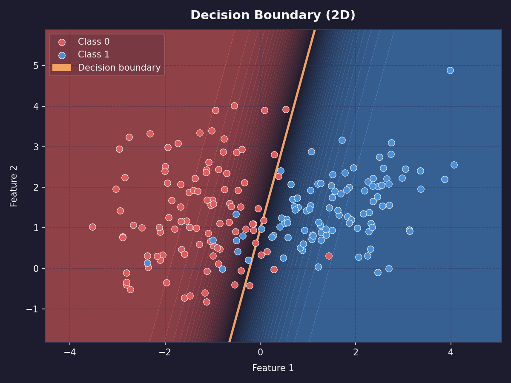
A straight decision boundary divides the feature space into normal and failure regions.
The output is a probability between 0 and 1 - values above 0.5 become class 1, below 0.5 become class 0.
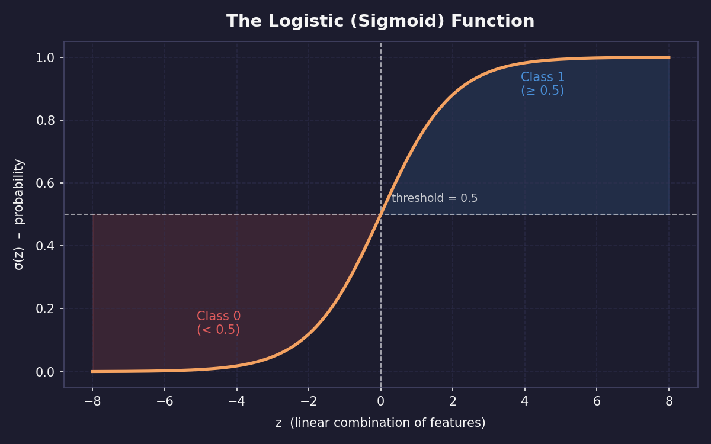
The sigmoid function turns any score into a probability, with 0.5 as the usual decision threshold.
Real example: on a factory robot arm, logistic regression might learn that failure probability increases linearly with torque and tool wear. It cannot capture failure only happens when both torque and temperature are high simultaneously - that interaction requires a more complex model.
The score equation feeds the sigmoid curve, converting feature values into failure probabilities.
Here, T is torque and W is tool wear. The first equation is linear because the feature terms are added with weights. There is no term that multiplies two features together.
What the interaction would require
Failure may not depend on torque alone or temperature alone. Instead, failure might depend on their combination. To capture that, add an interaction feature such as Torque × Temperature:
A logistic regression boundary is always straight unless you manually add new interaction features. Models like decision trees can draw stepped or curved-looking boundaries from the data instead.
Or use a more complex model, such as a decision tree, random forest, gradient boosting model, or neural network.
What it gives you: the weight, or coefficient, for each feature. A weight of +2.3 on torque means higher torque strongly increases failure probability. A weight near 0 means that feature barely matters. This makes logistic regression one of the most interpretable models that exists.
Use when: you want a fast interpretable baseline, you need to explain which features drive failures, or your data is roughly linearly separable.
Do not use when: the relationship between features and the label involves complex interactions or non-linear patterns.
Chapter 3: Supervised Learning › 3.2b Decision Tree
Decision trees are more powerful than logistic regression on non-linear data, and more readable than any other algorithm in this chapter.
Decision Tree Algorithm 2 of 4
At a glance
Type: Tree-based classifier
Output: Class + readable rules
Interpretable: Yes
Speed: Fast
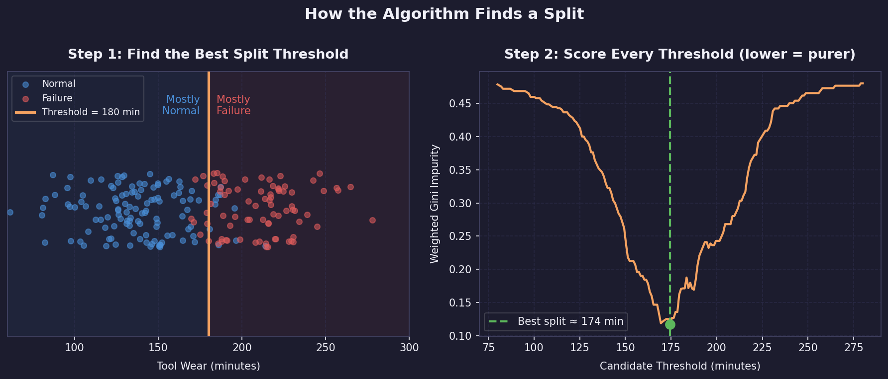
A decision tree tests possible thresholds and chooses the split that makes the child groups as pure as possible.
A decision tree is a flowchart the algorithm builds automatically from your training data. At each step it asks one yes/no question about a feature, splits the data into two groups, and repeats until it can make a confident prediction.
How it works: the algorithm searches for the single feature and threshold that best separates failures from normal readings. For example, is tool wear > 180 minutes? splits the data so that most failures are on the yes side. It then repeats this for each sub-group independently, building a tree of questions. At each leaf, the bottom of a branch, it outputs the majority class of the training examples that ended up there.
Real example: a robot maintenance tree might first ask whether tool wear is high. If yes, it may ask whether torque is also high. If no, it may check temperature difference. The final leaves are the predicted classes.
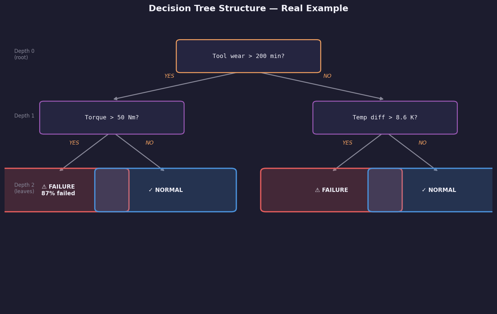
The final model is a readable tree of questions, arrows, and class predictions.
What it gives you: a human-readable set of rules. You can print the tree and show it to a maintenance engineer who has never heard of machine learning. They can follow the branches manually and understand why the model made each decision.
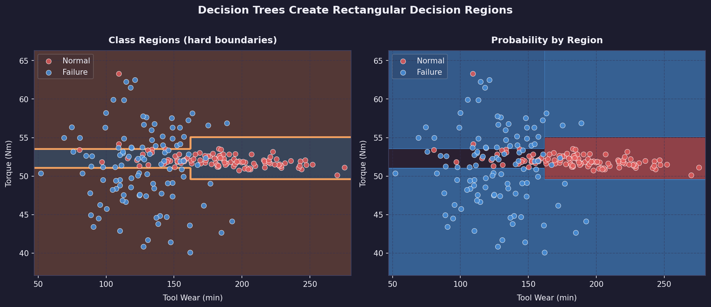
Because each split is a threshold on one feature, decision trees carve the feature space into rectangular regions.
The main control knob is tree depth. A shallow tree may underfit because it asks too few questions. A very deep tree may overfit because it memorizes tiny quirks in the training set instead of learning a stable pattern.
Depth controls complexity: too shallow misses structure, too deep memorizes noise, and the best model is usually in between.
Use when: the rules need to be understood and validated by a domain expert, or you want to discover key threshold values like failures mostly happening above 200 minutes of tool wear.
Do not use when: your data has many features with complex interactions. A single tree tends to overfit - it memorizes the training data by growing too many branches. This is why Random Forest exists.
Chapter 3: Supervised Learning › 3.2c Random Forest
Random Forest fixes the main weakness of a single decision tree - this is usually the first algorithm to try on any new tabular dataset.
Random Forest Algorithm 3 of 4
At a glance
Type: Ensemble (100+ trees)
Output: Class + confidence %
Interpretable: Medium
Speed: Medium
Random Forest fixes the main weakness of a single decision tree: one tree can overfit, but many varied trees vote toward a steadier prediction.
A random forest fixes the main weakness of a single decision tree, overfitting, by training hundreds of trees and having them vote. The final prediction is the majority vote across all trees.
Each tree is trained on a random sample of the training data and uses a random subset of features at each split. This randomness makes each tree slightly different, which is exactly what makes the group more reliable than one tree alone.
Bootstrap sampling means each tree sees a different version of the dataset, so their mistakes are less likely to be identical.
How it works: imagine 100 decision trees, each trained on a slightly different random sample of your 8,000 training rows. For a new sensor reading, each tree makes its own prediction. If 73 trees say failure and 27 say normal, the forest predicts failure with 73% confidence. The diversity of trees means one tree's quirky overfitting gets outvoted by the crowd.
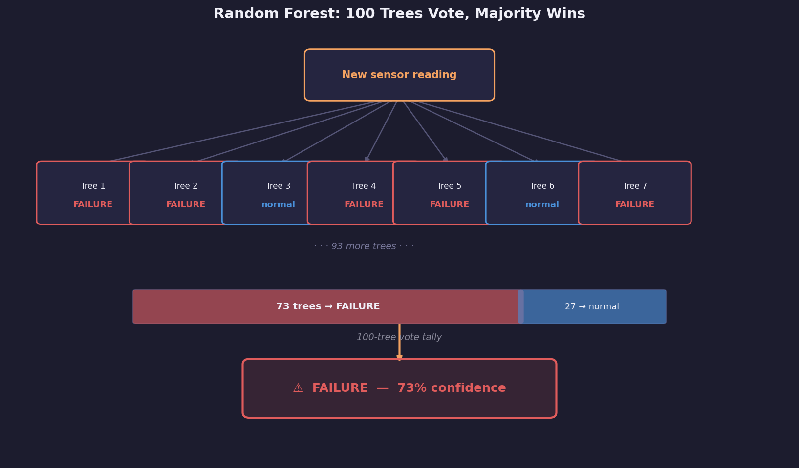
The forest prediction is a vote: here, 73 trees vote failure and 27 vote normal, so the model predicts failure with 73% confidence.
Real example: one tree might overfit to a specific pattern of high temperature and low torque that appeared in its training sample. The other 99 trees were not trained on that exact sample and vote it down. The ensemble is much more robust than any individual tree.
What it gives you: a confidence score, the vote percentage, and feature importance scores - a ranked list of which features the trees used most often for their splits. In the AI4I dataset, tool wear typically ranks as the most important feature for predicting failure.
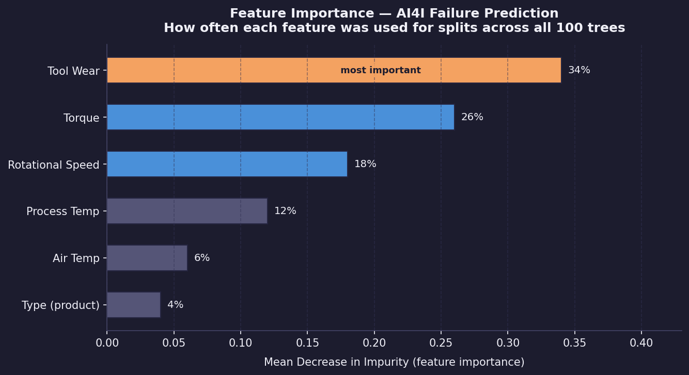
Feature importance summarizes which inputs the forest relied on most often; for this maintenance example, tool wear is the strongest signal.
Use when: you want strong accuracy on tabular data without heavy tuning. Random Forest is the first algorithm to try on many new classification problems because it is robust and rarely makes catastrophically wrong predictions.
Do not use when: you need to explain exactly why the model made a specific prediction, because the 100 trees are hard to interpret together, or when you have very high-dimensional sparse data like text.
Chapter 3: Supervised Learning › 3.2d Support Vector Machine
Support Vector Machines take a fundamentally different approach - instead of building rules or trees, they find the widest possible gap between classes.
Support Vector Machine Algorithm 4 of 4
At a glance
Type: Margin classifier
Output: Class
Interpretable: Medium
Speed: Medium (slow on large data)
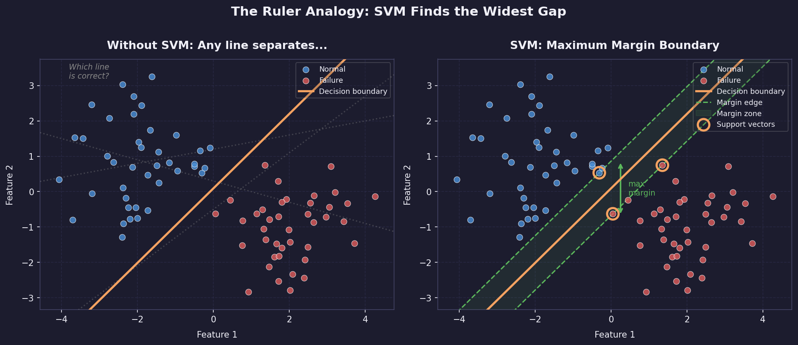
SVM does not choose just any separating line. It chooses the line with the widest margin between the closest points from each class.
A Support Vector Machine, or SVM, finds the widest possible empty gap - called the margin - between the two classes, then draws the decision boundary down the center of that gap. The training examples closest to the boundary are called support vectors. They are the only points that determine where the line goes. All other training examples are ignored once the margin is found.
How it works: imagine the training data as dots on a table. You want to place a ruler between the two colored groups with as much space as possible on either side. The SVM finds the optimal ruler position mathematically. Any new data point is then classified based on which side of the ruler it falls on.
Real example: with torque and tool wear as the two axes, the SVM finds the boundary where normal readings cluster on one side and failure readings cluster on the other, with maximum gap between the two groups. New readings are classified by which side they land on.
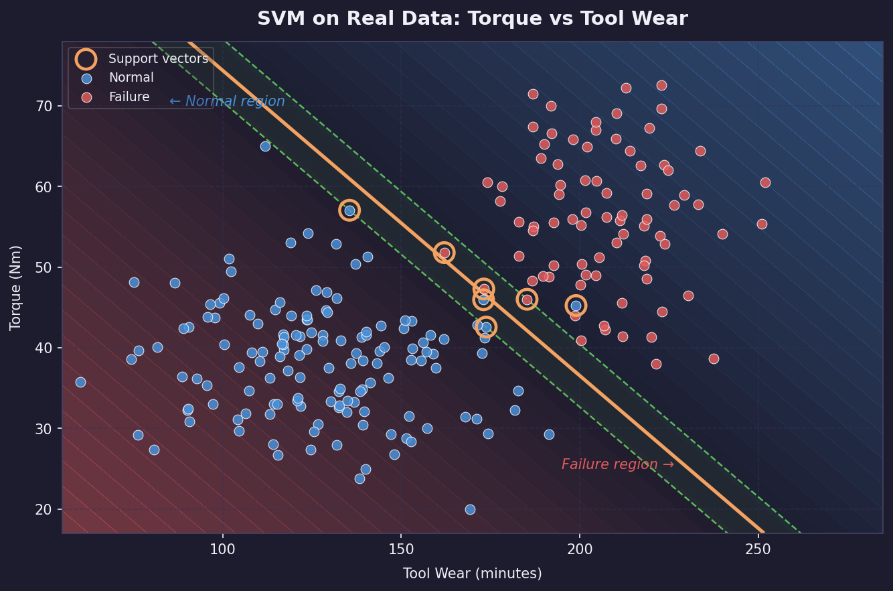
On torque and tool wear data, the boundary is chosen by the readings closest to the margin, not by every point equally.
Kernel trick: what if the data is not linearly separable in 2D? SVM can project the data into higher dimensions using a kernel function, where a linear boundary in the higher dimension corresponds to a curve in the original space. The RBF, or radial basis function, kernel is the most common choice and handles most non-linear problems well.
The kernel trick lets SVM solve curved decision problems without manually inventing new features.
The C parameter controls how strict the margin is. A small C allows some mistakes so the model can keep a wider, smoother margin. A large C punishes mistakes heavily, which can fit the training data more tightly but may generalize worse.
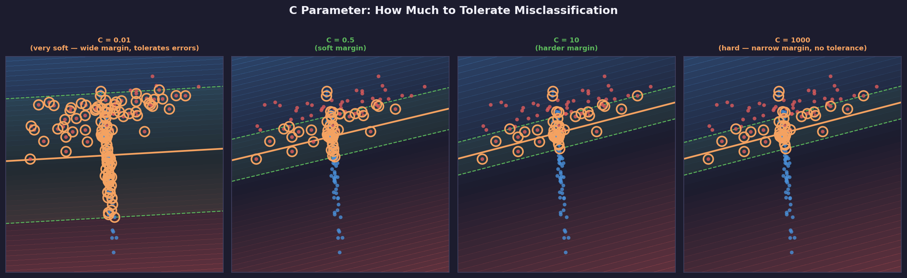
Increasing C moves SVM from a softer margin that tolerates errors toward a harder margin that tries to classify every training point correctly.
What it gives you: a boundary defined by support vectors and a margin width. This is less directly interpretable than a decision tree, but more structured than a black-box model. If the support vectors make sense, the boundary usually makes sense.
Use when: your dataset is small to medium sized, especially under 10,000 rows, the features are clean and scaled, and you want strong generalization with a well-understood mathematical guarantee.
Do not use when: your dataset is very large, because SVM training is slow on millions of rows, or you need feature importances.
Chapter 3: Supervised Learning › 3.3 The ML Pipeline
3.3 The ML Pipeline
Beginner10 min
3.3 The ML Pipeline
Every ML project follows the same sequence of steps — from raw data to a working predictor. This sequence is called the ML pipeline. Learning it once means you can apply it to any dataset. The next lesson walks through every step on a real engineering dataset. This lesson gives you the map first.
Step 1: Get Data
Data is the raw material of every ML project. In this course it comes from Kaggle, a platform hosting thousands of free labeled datasets. In industry it comes from sensors, databases, or instruments you build yourself.
Step 2: Explore (EDA)
Before training anything, look at your data. Check how many rows and columns exist, what data types each column has, and whether the class distribution is balanced. Functions like df.head(), df.info(), and df.describe() give you this picture in seconds. Skipping this step means discovering problems only after hours of wasted training.
Step 3: Clean
Real data has missing values, duplicate rows, and outliers. Most ML algorithms cannot handle missing values: they either crash or produce silent wrong results. Cleaning means finding and fixing these issues before training starts.
Step 4: Feature Engineering
Features are the columns you feed into the model. Raw columns are not always in the most useful form: a string category like "L", "M", or "H" must be converted to numbers before a model can read it. Feature engineering transforms raw data into the best possible inputs for the algorithm.
Step 5: Split Into Train and Test Sets
You cannot evaluate a model on the same data it trained on; that is like marking your own homework. Split the data before training so the test set stays completely unseen until the final evaluation.
train_test_split_demo.py
from sklearn.model_selection import train_test_split
import numpy as np
# Simulated dataset - 1000 examples, 5 features
X = np.random.rand(1000, 5)
y = np.random.randint(0, 2, 1000)
X_train, X_test, y_train, y_test = train_test_split(
X, y,
test_size=0.2, # 20% reserved for testing
random_state=42, # same split every run
stratify=y # keep class ratio equal in both sets
)
print(f"Training rows: {len(X_train)}")
print(f"Test rows: {len(X_test)}")
Setting
Meaning
test_size=0.2
800 rows train, 200 rows test.
random_state=42
Same split every time you run the code.
stratify=y
If 10% of y is class 1, both sets will be 10%.
Step 6: Scale Features
Features with large numeric ranges, like RPM in the thousands, dominate features with small ranges, like temperature in the hundreds, even when the smaller feature is more predictive. StandardScaler removes this bias by centering every feature around zero with equal spread.
standard_scaler_demo.py
from sklearn.preprocessing import StandardScaler
import numpy as np
X_train = np.array([[1500, 298.5], [1800, 302.1], [1200, 296.0]])
X_test = np.array([[1650, 300.0]])
scaler = StandardScaler()
# Fit ONLY on training data, then transform both sets
X_train_scaled = scaler.fit_transform(X_train)
X_test_scaled = scaler.transform(X_test) # NOT fit_transform
print("Before:", X_train[0])
print("After: ", X_train_scaled[0].round(3))
!
Scaling leak
Always call fit_transform on training data and transform, never fit_transform, on test data because fitting the scaler on test data leaks information from the exam into the study guide.
Step 7: Train Model
Training feeds the scaled data to the algorithm and lets it adjust its internal numbers to minimize prediction error. In scikit-learn this is always one line: model.fit(X_train, y_train).
Step 8: Evaluate
After training, run the model on the test set and compare predictions to the true labels. For classification, use precision, recall, and F1-score rather than accuracy alone because accuracy is misleading when one class is much rarer than the other. A model that predicts "no failure" every time achieves 96% accuracy on a dataset where only 4% of readings are failures, while catching zero real failures.
Step 9: Tune
Every algorithm has hyperparameters: settings you choose before training. Tuning means trying different values and keeping the combination that produces the best evaluation score.
Step 10: Deploy / Use
A model that stays in a notebook helps no one. Deployment means saving the trained model to a file and loading it wherever predictions are needed, whether that is a web server, a laptop on a factory floor, or a robot.
Next step: The next lesson applies every one of these steps to the AI4I Predictive Maintenance dataset — real sensor readings from a CNC machine, real failure labels, and real engineering decisions.
A factory robot arm breaks without warning. Production stops for hours while engineers scramble to fix it — every unplanned shutdown costs thousands of dollars. What if a model could look at sensor readings and say "this arm is going to fail in the next few hours" before it actually does? That is exactly what we will build.
What you will build
By the end of this project you will have a program that reads sensor data from a robot arm and outputs a failure warning. Here is the full journey:
Raw sensor CSV
→
Explore & clean
→
Train model
→
Predict failures
We will build this step by step. Each cell is one small piece of that pipeline — run them from top to bottom in Colab.
Step 0 — Get the data (Kaggle setup)
The dataset lives on Kaggle, a free platform that hosts machine learning datasets. You need a free account and a one-time legacy API key so that Colab can download it for you. This only takes two minutes.
Go to Kaggle and sign in. Open kaggle.com and sign in (or create a free account).
Open Settings. Click your profile picture in the top-right corner, then click Settings.
Create a Legacy API Key. Scroll down to the API section. Look for the Legacy API sub-section and click Create New Legacy API Key. This is important — a regular API key does not download a JSON file, and the JSON is what the Kaggle CLI needs.
Open the downloaded file. Your browser automatically downloads a file called kaggle.json. Open it in any text editor — it contains a short line that looks like {"username":"…","key":"…"}. Select and copy that entire line.
Keep it ready. You will paste that copied text into the first Colab cell. The notebook will ask for it with a password-style prompt.
💡
Keep the token private
Your token is like a password — it gives access to your Kaggle account. Never share a notebook that still has the token text visible.
Open the notebook
Click the button below to open the project notebook in Google Colab. Then run the cells one by one — each section below explains what each cell does and what you should see.
The first two cells connect Colab to Kaggle and download the data. You only need to run them once per session.
Cell 1 installs the Kaggle tool and asks for your token. When the cell runs you will see a password-style box — paste your copied token text there and press Enter.
Cell 1: Install Kaggle API & set up credentials
!pip -q install kaggle
import json, os
from getpass import getpass
os.makedirs("/root/.kaggle", exist_ok=True)
token = json.loads(getpass("Paste your Kaggle API token text: ").strip())
with open("/root/.kaggle/kaggle.json", "w") as f:
json.dump(token, f)
os.chmod("/root/.kaggle/kaggle.json", 0o600)
Expected output A hidden text prompt. After you paste and press Enter, nothing more is printed — that means it worked.
Cell 2 downloads the dataset zip file and unpacks it into a folder called data/.
Cell 2: Download the dataset from Kaggle
!kaggle datasets download -d stephanmatzka/predictive-maintenance-dataset-ai4i-2020
!unzip -o predictive-maintenance-dataset-ai4i-2020.zip -d data
Expected output Lines like Downloading… followed by inflating: data/ai4i2020.csv. One CSV file now lives under data/.
Cell 3 loads all the Python libraries we need. Think of this as opening a toolbox — we are not doing any work yet, just laying the tools on the bench.
Cell 3: Import libraries
import numpy as np
import pandas as pd
import matplotlib.pyplot as plt
from sklearn.model_selection import train_test_split
from sklearn.preprocessing import StandardScaler
from sklearn.linear_model import LogisticRegression
from sklearn.ensemble import RandomForestClassifier
from sklearn.metrics import classification_report, ConfusionMatrixDisplay, f1_score
Expected output No output at all — silence means all libraries loaded successfully.
Phase 2 — Meet the data
Before training any model, always look at the data first. You want to understand what columns exist, what the numbers mean, and whether anything looks unusual. Skipping this step is the most common beginner mistake.
Cell 4 loads the CSV and prints three summaries. Read through each one — they tell you the shape of the data before a single line of ML code runs.
Cell 4: Load and explore the data
df = pd.read_csv("data/ai4i2020.csv")
display(df.head()) # first 5 rows — shows what a row looks like
df.info() # column names and data types
display(df.describe()) # min, max, average for each number column
💡
What to look for
Find the Machine failure column — that is what we want to predict (0 = normal, 1 = failure). The other columns — temperature, speed, torque, tool wear — are what we will use as clues.
Expected output A table of rows followed by column statistics. You should see columns like Air temperature [K], Torque [Nm], and Machine failure.
Cell 5 draws a bar chart showing how many normal rows vs failure rows the dataset contains. This is one of the most important charts in the whole project.
Cell 5: Visualize class distribution
counts = df["Machine failure"].value_counts().sort_index()
counts.plot(kind="bar", color=["#34d399", "#fb7185"])
plt.xticks([0, 1], ["Normal", "Failure"], rotation=0)
plt.title("How many normal vs failure examples?")
plt.ylabel("Number of rows")
plt.show()
⚠️
Why the imbalance matters
You will see a very tall green bar (normal) and a tiny red bar (failure). That is realistic — machines fail rarely. But it creates a trap: a model that just guesses "normal" every single time would score ~97% accuracy while being completely useless. Later cells fix this with class_weight="balanced".
Expected output A bar chart with roughly 9,660 normal rows and 340 failure rows.
Cell 6 draws a correlation heatmap — a grid that shows which columns tend to move together. Red squares mean two columns rise and fall together; blue squares mean they move in opposite directions.
Find the Machine failure row. Any column with a noticeably red or blue square there is correlated with failure — the model will find those patterns automatically.
Expected output A 12×12 colour grid. Diagonal squares are always deep red (a column perfectly correlates with itself).
Cell 7 checks for missing values. Most models crash or give wrong answers when data is missing, so we always check before doing anything else.
Expected outputTotal missing values: 0 — this dataset is already clean, so we can move straight to modelling.
Phase 3 — Prepare the data for training
Raw data cannot go straight into a model. We need to pick the right columns, split the data into a training set and a test set, and make sure the numbers are on a comparable scale.
Cell 8 picks the five sensor columns we will use as inputs, and sets the failure column as the thing we want to predict.
Cell 8: Choose features and label
feature_cols = [
"Air temperature [K]",
"Process temperature [K]",
"Rotational speed [rpm]",
"Torque [Nm]",
"Tool wear [min]"
]
X = df[feature_cols] # inputs — the clues the model reads
y = df["Machine failure"] # output — what we want to predict
print(X.shape, y.shape)
💡
X and y — the core pattern
Every supervised learning project follows this same shape. X is the table of clues (inputs). y is the column of answers (labels). The model learns the mapping from X to y.
Cell 9 splits the data into a training set (80%) and a test set (20%). The model only ever sees the training set while learning. The test set is kept hidden until the final evaluation — like a sealed exam paper.
Expected output Training rows: 8000, Test rows: 2000. (stratify=y keeps the same ~3.4% failure rate in both halves.)
Cell 10 scales the numbers so they are all on a similar range. Without this, a column measured in Kelvin (≈300) would drown out a column measured in minutes (≈0–240) purely because its numbers are bigger.
⚠️
The golden rule of scaling
We fit the scaler only on training data, then apply the same scaler to the test data. Why? The test set is the final exam — if the scaler peeks at test data to calculate averages, the model gets an unfair preview and will appear better than it really is.
Expected output No printed output — the scaled arrays are ready in memory.
Phase 4 — Train two models and compare them
We will train two different models on the same data and see which one is better at predicting failures. Think of it like testing two different doctors on the same set of patient records — you want to know who gives the more accurate diagnosis.
Cell 11 trains the first model: Logistic Regression. It is the simplest possible approach — a good baseline to beat.
Remember the imbalanced bar chart? class_weight="balanced" tells the model to treat a missed failure as more costly than a false alarm — otherwise it would just predict "normal" for everything and look accurate.
Expected outputLogistic Regression trained.
Cell 12 evaluates that model and draws a confusion matrix — a 2×2 grid that shows exactly which types of mistakes it made.
True Negative Predicted Normal ✓ Was actually Normal
False Positive Predicted Failure ✗ Was actually Normal
False Negative Predicted Normal ✗ Was actually a Failure (the dangerous mistake)
True Positive Predicted Failure ✓ Was actually a Failure
Cell 12: Evaluate Logistic Regression
print(classification_report(y_test, log_pred))
ConfusionMatrixDisplay.from_predictions(
y_test, log_pred, display_labels=["Normal", "Failure"]
)
plt.title("Logistic Regression — what mistakes did it make?")
plt.show()
💡
Reading the report
Look at the Failure row in the classification report. Recall tells you what fraction of real failures the model caught. A low recall means many failures slipped through undetected — that would be costly in a real factory.
Expected output A text table of precision/recall/F1 scores, then a 2×2 colour grid (the confusion matrix).
Cell 13 trains the second model: a Random Forest. Instead of one straight decision line, it builds 100 decision trees and takes a vote — usually more accurate on sensor data like this.
Cell 13: Train Random Forest
forest = RandomForestClassifier(
n_estimators=100, # 100 trees vote on each prediction
random_state=42,
class_weight="balanced"
)
forest.fit(X_train, y_train) # no scaling needed for forests
forest_pred = forest.predict(X_test)
print("Random Forest trained.")
💡
Why no scaling here?
Random forests split data by asking questions like "is torque > 40?" The threshold is always relative, so the scale of the numbers does not matter. Logistic Regression, by contrast, adds numbers together — so scale matters a lot.
Expected outputRandom Forest trained. (may take 5–10 seconds)
Cell 14 puts both models side by side using a single number — the F1 score — so you can directly compare them.
💡
Why F1 and not accuracy?
Accuracy counts all correct predictions equally. F1 specifically rewards catching real failures and penalises missing them. For rare events like equipment failures, F1 is the honest measure.
Expected output Two F1 scores and a winner line. Random Forest typically wins on this dataset — but by how much?
Phase 5 — Challenge: does more trees mean better?
The Random Forest used 100 trees. What if we tried 10? Or 200? Cell 15 runs the model five times with different tree counts and plots the result. Your job is to look at the chart and decide: at what point do extra trees stop helping?
Cell 15: Challenge — tune n_estimators
tree_counts = [10, 25, 50, 100, 200]
scores = []
for n in tree_counts:
model = RandomForestClassifier(
n_estimators=n, random_state=42, class_weight="balanced"
)
model.fit(X_train, y_train)
scores.append(f1_score(y_test, model.predict(X_test)))
plt.plot(tree_counts, scores, marker="o", color="#6366f1", linewidth=2)
plt.xlabel("Number of trees")
plt.ylabel("F1 score (higher = better)")
plt.title("Does adding more trees keep improving the model?")
plt.grid(True, alpha=0.3)
plt.show()
best_n = tree_counts[scores.index(max(scores))]
print(f"Best result: {max(scores):.3f} F1 with {best_n} trees")
📝
What to look for
The line usually rises sharply from 10 → 50 trees and then flattens. That flat part is the "diminishing returns" zone — extra computation, no extra accuracy. This pattern appears in almost every real ML project.
Expected output A line plot and a printed best score. Compare it against the 100-tree score from Cell 14.
Unsupervised learning finds structure when nobody has labeled the rows. That makes it valuable for sensor streams, vibration logs, and exploratory robotics data.
What Is Unsupervised Learning?
In supervised learning every row has a label — someone already answered the question for each example. A human looked at 10,000 sensor readings and wrote "failure" or "normal" next to each one. That labeling is expensive, slow, and sometimes impossible.
Unsupervised learning works without labels. You give the algorithm raw data and ask it to find structure on its own: groups of similar rows, patterns that repeat, dimensions that capture the most variation. Nobody told the algorithm what to look for. It discovers it.
Supervised Learning
Data: rows WITH labels.
Question: predict this label from these features.
Example: sensor readings → failure or no failure.
The algorithm is told what the answer looks like.
Unsupervised Learning
Data: rows WITHOUT labels.
Question: what structure exists in this data?
Example: sensor readings → how many natural groups?
The algorithm is told nothing — it finds structure itself.
BOT
Robotics connection
A robot mapping an unknown building has no labeled floor plan. It must group sensor readings into wall, open space, and obstacle without anyone teaching it those categories. That is unsupervised learning in the real world.
Clustering divides a dataset into groups where rows inside each group are more similar to each other than to rows in other groups. The algorithm does not know what the groups represent — that interpretation is your job as the engineer.
Three clusters found automatically — the algorithm groups similar points together without being told what the groups mean. Labeling each cluster (normal, imbalanced, loose) is the engineer's job, not the algorithm's.
A vibrating motor shaft might produce three distinct patterns of sensor readings: one when balanced correctly, one with a slight imbalance, and one with a loose bearing. Clustering discovers these three modes automatically even if no one ever labeled which readings belonged to which state.
Run to see three vibration modes that K-Means will learn to separate
Principal Component Analysis (PCA) is not a clustering algorithm. It is a dimensionality reduction technique: it compresses many features into fewer dimensions while preserving as much variation as possible.
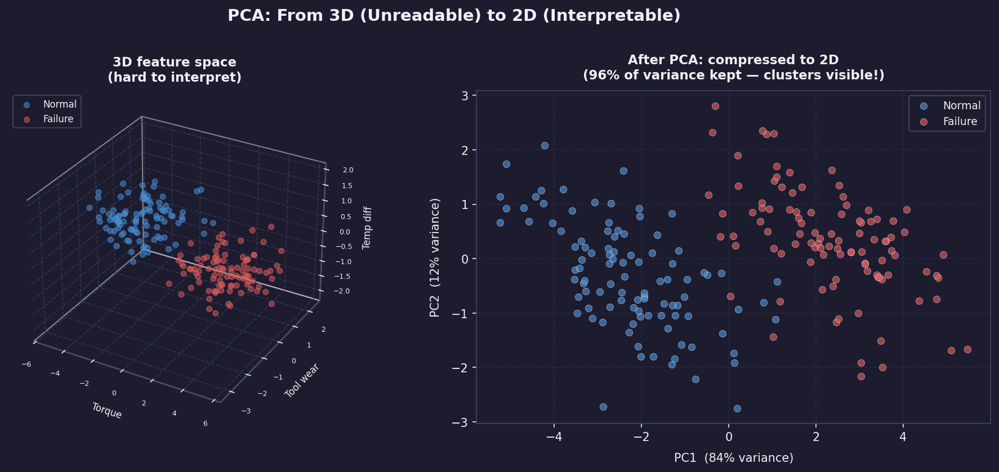
PCA projects high-dimensional data onto fewer dimensions. Three features compressed to two — the two directions that capture the most variation in the original data are kept, the rest is discarded.
Imagine your feature table has 10 columns. You cannot plot 10 dimensions. PCA finds the two directions in that 10-dimensional space that capture the most variation and projects everything onto those two axes. The result is a 2D scatter plot you can actually look at.
PCA does not label the axes for you. The first principal component is the direction of greatest variance in your data. It might correspond roughly to overall vibration intensity or frequency content, but you interpret that from the data, not from PCA.
PC1 points in the direction of greatest variance in the data. PC2 points perpendicular to PC1, capturing the next largest spread. Neither axis is labeled automatically — you read the data to decide what each principal component represents.
Run to see PCA projecting 4 features into 2D
import numpy as np
import matplotlib.pyplot as plt
from sklearn.decomposition import PCA
from sklearn.preprocessing import StandardScaler
from sklearn.datasets import make_blobs
np.random.seed(42)
X, labels = make_blobs(n_samples=300, centers=3,
n_features=4, cluster_std=0.9,
random_state=42)
X_scaled = StandardScaler().fit_transform(X)
pca = PCA(n_components=2)
X_2d = pca.fit_transform(X_scaled)
fig, (ax1, ax2) = plt.subplots(1, 2, figsize=(12, 5))
fig.patch.set_facecolor('#0d1117')
colors = ['#10b981', '#f97316', '#6366f1']
for i, color in enumerate(colors):
mask = labels == i
ax1.scatter(X_scaled[mask, 0], X_scaled[mask, 1],
color=color, s=20, alpha=0.7, label=f'Group {i}')
ax2.scatter(X_2d[mask, 0], X_2d[mask, 1],
color=color, s=20, alpha=0.7, label=f'Group {i}')
for ax, title in zip([ax1, ax2],
['Original: 2 of 4 features shown', 'After PCA: all 4 features compressed to 2D']):
ax.set_title(title, color='#e6edf3', fontsize=10)
ax.set_facecolor('#0d1117')
ax.tick_params(colors='#8b949e')
ax.spines[:].set_color('#30363d')
ax.legend(facecolor='#161b22', labelcolor='white', fontsize=8)
var = pca.explained_variance_ratio_
ax2.set_xlabel(f'PC1 ({var[0]*100:.0f}% variance)', color='#8b949e')
ax2.set_ylabel(f'PC2 ({var[1]*100:.0f}% variance)', color='#8b949e')
plt.tight_layout()
plt.show()
print(f"Variance explained: PC1={var[0]*100:.1f}% PC2={var[1]*100:.1f}%")
print(f"Total captured: {sum(var)*100:.1f}% of original information")
PCA
PCA does not find clusters
PCA and K-Means are two different tools that work well together. K-Means finds the clusters. PCA lets you visualize them. Always run K-Means on the original scaled features, not on the PCA-reduced version, unless the dataset is very large and speed is a concern.
Chapter 4: Unsupervised Learning › 4.2 K-Means Deep Dive
4.2 K-Means Deep Dive
Beginner18 min
What is K-Means?
K-Means is an algorithm that automatically groups data points into K clusters — where each cluster contains points that are similar to each other and different from the other groups. You do not tell it what the groups mean; it finds the groupings on its own just from the numbers.
K-Means takes unlabelled data (left) and assigns every point
to one of K groups (right). The algorithm decides the groupings
purely from the distances between points — no labels required.
💡
Real-world analogy
Imagine you tip a bag of mixed marbles onto a table — red, blue, and green ones all mixed together. You do not know how many colours are in the bag, so you pick 3 spots on the table as starting piles and then slide each marble to whichever pile it is closest to. After one pass you recalculate the centre of each pile and repeat. After a few passes the marbles have naturally sorted themselves by colour. That is K-Means.
In robotics this is useful whenever you have sensor readings but no labels — for example, grouping vibration patterns to discover which ones tend to precede a failure, without anyone having hand-labelled the data first.
Unlabelled sensor data
→
K-Means (you choose K)
→
K groups of similar readings
→
Inspect & interpret
How K-Means works — step by step
The algorithm repeats two simple operations until nothing changes. You choose K (the number of clusters) before it starts — the rest is automatic.
K-Means repeats four operations until nothing changes. Here is what happens at each step.
1
Random Initialization
Place K centroids at random positions in feature space.
These starting positions are guesses — the algorithm corrects
them over the next steps. The quality of the final result can
depend on where centroids start, which is why most implementations
run K-Means multiple times with different random starts and keep
the best result. scikit-learn's n_init="auto" handles this
automatically.
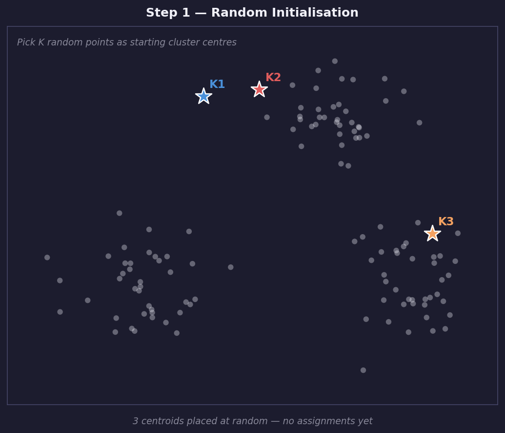
2
Assign
Calculate the distance from every data point to every centroid.
Assign each point to its closest centroid. All points assigned to
the same centroid form one cluster. After this step every point
belongs to exactly one cluster.
3
Recompute
Move each centroid to the mean position of all points currently
assigned to it. If cluster 1 contains 50 points, its new centroid
is the average position of those 50 points. This is where the word
Means in K-Means comes from.
4
Converge
Repeat assign and recompute until no point changes its cluster
between iterations. At this point centroids have settled and the
algorithm has converged. This is guaranteed to happen but is not
guaranteed to find the globally best solution — only a local one.
Run to see K-Means converge step by step
import numpy as np
import matplotlib.pyplot as plt
from sklearn.datasets import make_blobs
np.random.seed(42)
X, _ = make_blobs(n_samples=150, centers=3,
cluster_std=0.7, random_state=42)
K = 3
# Manual K-Means for visualization
centroids = X[np.random.choice(len(X), K, replace=False)]
steps = []
for iteration in range(6):
dists = np.linalg.norm(X[:, None] - centroids[None, :], axis=2)
labels = dists.argmin(axis=1)
steps.append((centroids.copy(), labels.copy()))
new_centroids = np.array([X[labels == k].mean(axis=0)
for k in range(K)])
if np.allclose(centroids, new_centroids):
break
centroids = new_centroids
n_steps = min(len(steps), 4)
fig, axes = plt.subplots(1, n_steps, figsize=(4*n_steps, 4))
fig.patch.set_facecolor('#0d1117')
colors = ['#10b981', '#f97316', '#6366f1']
for i, ax in enumerate(axes):
c, l = steps[i]
for k, color in enumerate(colors):
mask = l == k
ax.scatter(X[mask, 0], X[mask, 1], color=color,
s=15, alpha=0.6)
ax.scatter(c[k, 0], c[k, 1], color=color,
s=200, marker='*', edgecolors='white', linewidths=0.8)
ax.set_title(f'Iteration {i+1}', color='#e6edf3', fontsize=10)
ax.set_facecolor('#0d1117')
ax.tick_params(colors='#8b949e')
ax.spines[:].set_color('#30363d')
ax.set_xticks([])
ax.set_yticks([])
plt.suptitle("K-Means converging — stars are centroids",
color='#e6edf3', fontsize=11)
plt.tight_layout()
plt.show()
Elbow Method
K-Means requires you to choose K before running — but how do you know the right number? The elbow method gives a data-driven answer.
Run K-Means for K=1 through 10. For each K record the inertia: the total squared distance from every point to its centroid. As K increases, inertia always decreases. The useful question is: where does adding another cluster stop helping significantly?
The elbow is where the curve bends. Beyond that point, extra clusters reduce inertia only slightly and add complexity without insight.
Run to see the elbow method on sample data
import numpy as np
import matplotlib.pyplot as plt
from sklearn.cluster import KMeans
from sklearn.datasets import make_blobs
np.random.seed(42)
X, _ = make_blobs(n_samples=300, centers=3,
cluster_std=0.8, random_state=42)
ks = range(1, 11)
inertias = []
for k in ks:
km = KMeans(n_clusters=k, random_state=42, n_init='auto')
km.fit(X)
inertias.append(km.inertia_)
fig, ax = plt.subplots(figsize=(8, 5))
fig.patch.set_facecolor('#0d1117')
ax.plot(list(ks), inertias, 'o-', color='#6366f1', linewidth=2,
markersize=7, markerfacecolor='white')
ax.axvline(x=3, color='#ef4444', linestyle='--', linewidth=1.5,
label='Elbow at K=3')
ax.annotate('Elbow — adding more\nclusters helps less here',
xy=(3, inertias[2]), xytext=(5, inertias[2]*1.3),
color='#ef4444', fontsize=9,
arrowprops=dict(arrowstyle='->', color='#ef4444'))
ax.set_xlabel('Number of clusters K', color='#8b949e')
ax.set_ylabel('Inertia', color='#8b949e')
ax.set_title('Elbow Method — finding the right K', color='#e6edf3')
ax.set_facecolor('#0d1117')
ax.tick_params(colors='#8b949e')
ax.spines[:].set_color('#30363d')
ax.legend(facecolor='#161b22', labelcolor='white')
plt.tight_layout()
plt.show()
print("Inertia values:")
for k, inertia in zip(ks, inertias):
bar = '█' * int(inertia / inertias[0] * 30)
print(f" K={k:2d}: {bar} {inertia:.0f}")
!
The elbow is not always obvious
On real data the elbow is often a gentle curve rather than a sharp bend. If you cannot see a clear elbow, try silhouette score as a second opinion — it measures how well-separated the clusters are. Higher silhouette score is better.
DBSCAN: When Clusters Are Not Round
K-Means assumes clusters are roughly round and requires you to specify K in advance. DBSCAN (Density-Based Spatial Clustering of Applications with Noise) has neither limitation. It defines a cluster as a dense region of points and marks sparse points as noise (-1) rather than forcing them into a cluster.
DBSCAN is powerful when clusters have irregular shapes, when outliers need to be identified explicitly, or when the number of clusters is unknown. The tradeoff: it is sensitive to two parameters: eps, the neighborhood radius, and min_samples, the minimum points to form a cluster. Finding good values requires experimentation.
A CNC machine generates vibration data continuously. Over time the shaft develops faults — imbalance, loose bearings, misalignment. Each fault produces a different vibration pattern. The goal of this project is to cluster those patterns automatically without any labeled examples. An engineer can then look at each cluster and give it a name: normal, imbalanced, or loose.
This is real-world unsupervised learning. The dataset comes from a rotating shaft instrumented with a vibration sensor. You will extract statistical features from the raw signal, run K-Means to find natural groupings, and use PCA to visualize whether the clusters correspond to real physical operating modes.
Download the vibration dataset from Kaggle
Plot the raw signal to understand what you are working with
RL is different from supervised learning because there is no answer key for every state. The agent must explore, make mistakes, and learn from reward signals.
Real robotics uses RL in legged locomotion, drone control, robotic surgery research, dexterous manipulation, and simulation-to-real training.
Chapter 5: Reinforcement Learning › 5.2 Q-Learning Explained with a Grid
5.2 Q-Learning Explained with a Grid
Intermediate12 min
5.2 Q-Learning Explained with a Grid
A Q-table stores the expected value of taking each action in each state. In FrozenLake, there are 16 grid states and 4 actions, so the table is 16 x 4.
Q-learning update equation
Q(s, a) <- Q(s, a) + alpha [ r + gamma * max Q(s', a') - Q(s, a) ]
old value rate reward discount best future value
s: current state.
a: action chosen.
alpha: learning rate, or how aggressively we update.
r: immediate reward.
gamma: discount factor for future rewards.
Exploration vs exploitation is the central tradeoff. Early on, the agent flips a biased coin and explores random moves often. Later, it mostly exploits the best actions it has learned.
Chapter 5: Reinforcement Learning › 5.3 Project: Teaching a Robot to Navigate a Maze
5.3 Project: Teaching a Robot to Navigate a Maze
Intermediate30 min
5.3 ★ Project: Teaching a Robot to Navigate a Maze
Environment: OpenAI Gym / Gymnasium FrozenLake-v1. The notebook logs rewards to CSV, uploads them as a Kaggle dataset, and loads them back for analysis.
⬇
Download Dataset
This project generates frozenlake_training_log.csv. Upload or retrieve logs through kaggle.com/datasets.
Cell 1: Install gym, import libraries
!pip -q install gymnasium[toy-text]
import gymnasium as gym
import numpy as np
import pandas as pd
import matplotlib.pyplot as plt
💡
What this does
Installs the grid-world environment and imports the tools for tables, arrays, and charts.
Expected outputInstallation completes with no import errors.
Cell 2: Create FrozenLake environment
env = gym.make("FrozenLake-v1", is_slippery=True, render_mode="ansi")
state, info = env.reset(seed=42)
print(env.render())
💡
What this does
Creates a 4x4 map. Slippery ice adds randomness, which makes learning harder and more realistic.
Converts best actions into arrows so you can inspect the learned navigation plan.
Expected outputA 4x4 grid of arrows.
Cell 8: Test trained agent
state, info = env.reset(seed=7)
done = False
while not done:
action = np.argmax(q_table[state])
state, reward, terminated, truncated, info = env.step(action)
done = terminated or truncated
print(env.render())
print("Final reward:", reward)
💡
What this does
Runs one greedy episode using the learned policy instead of random exploration.
Expected outputSeveral grid frames and a final reward of 0 or 1.
Cell 9: Kaggle tie-in - save and upload log
log_df.to_csv("frozenlake_training_log.csv", index=False)
print("Saved frozenlake_training_log.csv")
# Optional: create a Kaggle dataset manually from this CSV,
# then use the Kaggle API to download it in a future notebook.
💡
What this does
The CSV turns your RL experiment into a dataset you can share and re-analyze.
Expected outputA saved CSV file in Colab's file browser.
Cell 10: Challenge - larger map or non-slippery ice
# Try one change at a time:
env = gym.make("FrozenLake-v1", map_name="8x8", is_slippery=True, render_mode="ansi")
# or
env = gym.make("FrozenLake-v1", is_slippery=False, render_mode="ansi")
📝
What this does
The 8x8 map is harder. Turning slipperiness off isolates planning from randomness.
Expected outputA changed environment; rerun training and compare reward curves.
Chapter 6: Neural Networks › 6.0 What Is a Neural Network?
You will build intuition through interactive experiments before writing a single line of neural network code.
In Chapter 3 you trained a Random Forest to predict machine failure. The Random Forest learned a set of if-then rules from the data. Clear, interpretable, fast to train. For many problems it is the right tool and you should use it.
A neural network learns differently. Instead of rules, it learns numbers — thousands or millions of adjustable numbers called weights. Training is the process of tuning those numbers until the network's output matches the correct answer. The rules are never written down explicitly. The pattern lives entirely in the weights.
Think of learning to ride a bike. A rulebook says: lean left to turn left, pedal faster to accelerate, squeeze brakes to stop. A neural network is more like your body after hours of practice — it just knows, without being able to explain every adjustment it makes. That inability to explain is both the power and the limitation.
What a neural network actually is
A chain of matrix multiplications and simple math functions. That is all. The word "neural" is a metaphor. There is no brain, no understanding, no consciousness — just math that happens to learn patterns from examples.
When to use it vs when not to
Use neural networks when the relationship between inputs and outputs is too complex for simple rules — images, audio, text, complex sensor combinations. For clean tabular data like the Chapter 3 failure dataset, Random Forest is simpler and often just as accurate. You will return to this question in lesson 6.12.
💡
What comes next
You will build intuition for neural networks in the next few lessons using a free interactive tool called TensorFlow Playground — no code required yet.
TensorFlow Playground is a neural network that runs live in your browser. You set the architecture, hit play, and watch the network train in real time. The decision boundary — the boundary between classes — updates every few milliseconds as the network learns. This makes concepts that are invisible in code completely visible.
TensorFlow Playground shows the dataset, input features, network layers, output boundary, and loss graph in one live interface.
Data panel (left): choose your dataset and how noisy it is.
Features (above network): which input columns the network sees.
Hidden layers (center): the heart of the network — add layers and neurons by clicking + and -.
Output panel (right): the decision boundary — blue = predicted class 0, orange = predicted class 1. Darker color = higher confidence.
Loss graph (top right): how wrong the network is over time.
Training controls (top): learning rate, activation, batch size, and the play/pause/reset buttons.
Your first 60 seconds in Playground
Do these steps before reading any further:
Open Playground at the link above.
Select the Circle dataset. Look for four small icons below "DATA" on the left — pick the one showing two concentric circles.
Click the play button ▶ at the top left.
Watch for 10 seconds.
Click the reset button ↺ and watch again from the start.
?
Write your answer before moving on
What shape is the decision boundary trying to form? Is it a straight line or a curve? Does it succeed? Write down what you see — you will compare this to what a single neuron can do in the next lesson.
Chapter 6: Neural Networks › 6.2 Anatomy of a Neuron
6.2 Anatomy of a Neuron
Beginner12 min
Before understanding a network of hundreds of neurons, understand one. A single neuron is just arithmetic — three steps, no mystery.
The exam scorer
Imagine scoring a student's performance using three things: homework (weight 0.5), exam score (weight 0.4), attendance (weight 0.1). You multiply each by its weight, add them up, and get a score. A neuron does exactly this — it is a weighted sum of its inputs. The only extra step is squashing the result through a function so it stays in a useful range.
Three steps every neuron takes
Weighted sum
z = w1*x1 + w2*x2 + ... + wn*xn + b
Each input x is multiplied by its weight w. All results are added together. The bias b is added last — it shifts the output regardless of inputs.
Activation function
a = f(z)
The function f squashes z into a useful range. Without it, stacking neurons is useless — the whole network collapses into one weighted sum, which is just a straight line.
Pass the result forward
a becomes an input to the next layer's neurons. This is how information flows from left to right through the network.
TRY
Try this before running
The code below computes what one neuron outputs given three sensor readings. Before running, predict: if temperature (x[0]) is very high (0.9 out of 1.0) and its weight is 0.8, will the output confidence be above 50% or below 50%?
single_neuron_sensor_confidence.py
import numpy as np
def sigmoid(z):
return 1 / (1 + np.exp(-z))
# Sensor readings normalized from 0 to 1: temp, vibration, speed
x = np.array([0.9, 0.7, 0.5])
# Weights and bias. During real training, the network learns these.
w = np.array([0.8, 0.3, -0.2])
b = -0.4
z = np.dot(w, x) + b
a = sigmoid(z)
print(f"Weighted sum z: {z:.4f}")
print(f"After sigmoid: {a:.4f}")
print(f"Interpretation: {a*100:.1f}% confidence of abnormality")
# Try changing w[1]. What happens if vibration matters more than temperature?
?
Exercise
Run the code, then try each change and note what happens:
Change w[0] from 0.8 to -0.8. What happens to confidence? Why does making a weight negative reverse its effect?
Change b from -0.4 to 0.4. What happens? The bias shifts the baseline — what does a positive bias mean in terms of the neuron's "default assumption"?
Set all weights to 0.0. What is the output and why?
Weights are not set by you
In the code above, the weights are hand-picked numbers. In a real network, training finds these numbers automatically by trying to minimize the loss. The network starts with random weights and adjusts them thousands of times until the output is correct. You will see this process in lesson 6.6.
TIP
TensorFlow Playground connection
Every connection between neurons in TensorFlow Playground is one weight — hover over any connection and you can see its current value updating as the network trains.
Chapter 6: Neural Networks › 6.3 Playground: One Neuron Fails
6.3 ★ Playground: One Neuron Fails
Experiment15 min
A single neuron draws one straight line. That is its only tool. Some problems can be solved with a straight line. Others cannot. This experiment shows you both — and the moment you add a second layer, the impossible becomes trivial.
Dataset: click the XOR dataset. It is the checkerboard pattern: orange top-right and bottom-left, blue top-left and bottom-right.
Features: make sure only X1 and X2 are checked.
Hidden layers: click the minus button until there are zero hidden layers — just inputs going straight to output.
Learning rate: set to 0.03.
Activation: set to ReLU.
Train: click ▶ and watch for 30 seconds.
?
Question
What accuracy does it reach? Does the boundary ever successfully separate the orange from the blue? Why do you think a straight line cannot solve this problem? Think geometrically: is there any straight line that puts all orange on one side and all blue on the other?
Part 2 — Add one hidden layer
Click ↺ to reset.
Add one hidden layer with 2 neurons. Click + next to Hidden Layers, then set the layer to 2 neurons.
Keep everything else the same.
Click ▶ to train. Watch until the test loss drops below 0.05.
?
Question
How long did it take? What does the decision boundary look like now? The two neurons together created a boundary that one neuron could not. Watch the two neurons on the left — each one is drawing its own line. Their combination creates the curved boundary you see on the right.
Why layers work
Each neuron in the hidden layer learns a different view of the data — one might learn "is this point in the top half?" while another learns "is this point in the right half?" Neither answer alone is enough. But combined, they can describe "top-right AND bottom-left," which is exactly what XOR needs.
This is why deep networks can learn complex patterns. Each layer transforms the data into a new representation. By the final layer a pattern that was impossible to separate has been transformed into something simple. The network learned to see the data differently at each stage.
TRY
Challenge
After solving XOR with 2 neurons in one layer, try to solve the spiral dataset, the hardest one with two interleaved spirals. How many hidden layers and neurons does it take? Can you solve it with just 1 hidden layer?
Chapter 6: Neural Networks › 6.4 Layers: The Fix
6.4 Layers: The Fix
Beginner12 min
Lesson 6.3 showed the problem empirically — one neuron fails on XOR, a hidden layer fixes it. This lesson explains why mathematically without requiring calculus.
The committee vote
One judge scores a gymnastics routine: 7.2. That is a single number capturing a complex performance. Three judges each notice different things — difficulty, execution, artistry. Their combined scores are richer than any single judge's opinion. A hidden layer is a committee of neurons, each noticing a different aspect of the input. Their combined output gives the next layer richer information to work with.
What a layer actually does to data
Each layer takes the outputs from the previous layer and transforms them. The first hidden layer transforms raw input features into a new representation. The second layer transforms that representation into an even more abstract one. By the final layer the data has been transformed enough that a single neuron can make the final decision.
In Playground you can see this happening. Click on any neuron in a hidden layer during training. The small square inside it shows what that neuron has learned to detect — a gradient of orange and blue showing which parts of the input space activate it strongly. Each neuron is a feature detector. Together they decompose the problem into parts that the output neuron can combine.
TRY
Try this before running
Before running, predict the parameter count for a network with 2 inputs -> 3 neurons -> 3 neurons -> 1 output. Then run count_params([2, 3, 3, 1]) to check.
Every connection is one weight, and every neuron has one bias. That is why bigger layers quickly create many more trainable numbers.
How deep should you go?
Architecture
Parameters
Good for
2->4->1
13
Very simple patterns
2->16->16->1
321
Most common starting point
2->64->64->64->1
8,513
Complex patterns, needs more data
2->256->256->1
66,305
Often overkill for small datasets
TIP
Practical default
Start with two hidden layers of 16 neurons each. Only go bigger if the network clearly cannot learn the pattern after proper tuning.
Chapter 6: Neural Networks › 6.5 How Networks Learn
6.5 How Networks Learn
Beginner12 min
You have seen what a network is and that adding layers helps. Now: how does a network actually improve? How do 41 random numbers become 41 carefully tuned numbers that solve a problem?
The blindfolded hiker
You are blindfolded on a hilly landscape trying to find the lowest valley. You cannot see anything but you can feel the slope under your feet. Each step you take one step in the downhill direction. After enough steps you reach a valley. This is gradient descent — navigating a landscape you cannot see by following the local slope downward.
The loss — your altitude
The height in the hiking analogy is the loss. It measures how wrong the network is right now. When predictions are far from the true labels, loss is high. When predictions are close, loss is low. Training is the process of walking downhill on the loss surface until you reach a valley — a set of weights where the network is as accurate as possible.
The five steps of training
Forward pass
Feed a batch of training examples through the network left to right. Every neuron computes its weighted sum and activation. The final layer produces a prediction for each example in the batch.
Compute loss
Compare predictions to true labels. The loss is a single number — the average error across the batch. Large loss means the network is very wrong. Small loss means it is close. In Playground you see this number updating live in the top right.
Backward pass (backpropagation)
Calculate how much each weight contributed to the loss. This uses the chain rule from calculus — the network works backward from the output, spreading blame to each weight proportionally. You do not need to understand the calculus. The key insight is: every weight gets a score saying "increase me" or "decrease me."
Update weights
Move every weight a small step in the direction that reduces loss:
The learning rate controls how big the step is. Too large: overshoots the valley. Too small: takes forever.
Repeat
Do this for every batch in the training set. One complete pass through all training data = one epoch. Typical networks train for 10 to 500 epochs.
TRY
Try this before running
Before running, predict — what shape will the loss curve have over 50 epochs? Flat? Always going down? Bumpy? Sketch your prediction on paper, then run.
The curve has small random wiggles but a clear downward trend. The wiggles come from randomness in which training examples each batch contains. What do you think would happen to the wiggles if you used all training data in every batch instead of small random batches? Would they get bigger or smaller? Answer: smaller — but each step would be much slower to compute.
Chapter 6: Neural Networks › 6.6 Playground: Watch It Learn
6.6 ★ Playground: Watch It Learn
Experiment18 min
Lesson 6.5 described gradient descent in words. Now watch it happen. Playground shows the loss graph updating in real time and the decision boundary changing as weights shift. You will run three experiments — each breaks one thing and shows exactly why that setting matters.
Train: click ▶ and watch until test loss is below 0.05.
OBS
Watch three things simultaneously
The decision boundary on the right — does it form a circle?
The loss graph at the top right — does it decrease smoothly?
The neuron weights in the center — do the line thicknesses change?
Each of these is showing you a different view of the same process.
Experiment 2 — Learning rate too high
Click ↺ to reset.
Change only the learning rate to 3. That is 100x larger than the healthy run.
Click ▶ and watch for 10 seconds.
?
Question
What happens to the loss graph? Does it decrease smoothly or oscillate wildly? What does the decision boundary look like? This is the hiking analogy — taking steps so large you leap over the valley and land on the other side.
Experiment 3 — Learning rate too low
Click ↺ to reset.
Change only the learning rate to 0.0001. That is 300x smaller than the healthy run.
Click ▶ and watch for 30 seconds.
?
Question
How far does the loss decrease after 30 seconds compared to Experiment 1? The network is learning — just extremely slowly. This is why 0.0001 is rarely used as a starting learning rate.
Experiment 4 — Batch size effect
Click ↺ to reset and restore learning rate to 0.03.
Change batch size to 1. The network now trains from one example at a time.
Click ▶ and watch the loss graph specifically.
?
Question
The loss graph is now much noisier. Why? Each step is based on only one example instead of 10. One example gives a noisy estimate of the true gradient. How does this compare to the hiking analogy — is this like taking careful measured steps or like stumbling in a random direction each time?
KEY
What you just learned
Learning rate and batch size both affect how gradient descent walks down the loss surface. Learning rate controls step size. Batch size controls how accurately the slope is measured at each step. Neither has a universally correct value — they depend on your specific problem, dataset size, and architecture.
NEXT
Transition
The next lesson moves from Playground to a real experiment: training a network from scratch in Python to learn the sin function. You will control all three knobs — learning rate, epochs, and architecture — and watch the effect directly in the training curves and the learned function shape.
Chapter 6: Neural Networks › 6.7 Experiment: Teach a Network to Learn sin(x)
6.7 ★ Experiment: Teach a Network to Learn sin(x)
Colab35 min
6.7 ★ Experiment: Teach a Network to Learn sin(x)
You know what sin(x) looks like: a smooth wave that rises and falls between -1 and +1. A neural network knows nothing. It starts with random weights and has no concept of waves, curves, or math.
In this experiment you will watch it figure out sin(x) from scratch, purely by being shown (x, sin(x)) pairs thousands of times and correcting itself each time.
The twist: we train on x from 0 to 2π, then test on 0 to 4π, a range the network has never seen. This directly shows whether the network truly learned the sin function or just memorized the training data.
COLAB
Run this experiment in Google Colab
The training loop is intentionally written from scratch in NumPy. It is too slow for the browser runtime, so use the notebook.
Challenge 1: Minimum viable network Find the smallest HIDDEN_DIM1 and HIDDEN_DIM2 that still accurately approximates sin(x) on the training range. How few neurons can learn a sine wave?
Challenge 2: Generalization limits Set TRAIN_RANGE=2, TEST_RANGE=8. Does the network generalize to 4x the training range? What about 6x?
Challenge 3: Too many epochs Set EPOCHS=50000. Does accuracy keep improving? What happens to the generalization plot? This is overfitting in action.
Challenge 4: Learning rate extremes Try LEARNING_RATE=0.5 and LEARNING_RATE=0.000001. What does the loss curve look like in each case?
Cell 1: Setup and Data Generation
Cell 1: Setup and data generation
import numpy as np
import matplotlib.pyplot as plt
# -----------------------------------------
# 1. Generate Dataset: Approximating sin(x)
# -----------------------------------------
np.random.seed(42)
# Create 100 data points between 0 and 2 * pi
x = np.linspace(0, 2 * np.pi, 1000).reshape(-1, 1)
y = np.sin(x) # True function values
Line
Meaning
np.linspace(0, 2*np.pi, 1000)
Creates 1000 evenly spaced x values from 0 to 2π. This is the training range: the network only sees this interval.
.reshape(-1, 1)
Neural networks expect a 2D array where each row is one example. -1 means Python figures out that dimension automatically, giving shape (1000, 1).
y = np.sin(x)
The true labels. For each x value, the correct output is sin(x). The network learns this mapping from scratch.
Cell 2: Network Architecture
The architecture is: 1 input -> 20 neurons -> 10 neurons -> 1 output.
Why these sizes? This is a 1D regression problem: one number in, one number out. The hidden layers need enough neurons to represent a curved wave. Too few neurons and the network cannot capture the shape of sin(x).
Weight initialization matters enormously. We multiply by 0.1 to start with small weights rather than large random ones. Large initial weights can make gradients unstable in the first few training steps.
Cell 2: Network architecture
# -----------------------------------------
# 2. Define the Neural Network Architecture
# -----------------------------------------
# Network dimensions: 1 input, hidden neurons in first layer, hidden neurons in second layer, 1 output
input_dim = 1
hidden_dim1 = 20 # First hidden layer size
hidden_dim2 = 10 # Second hidden layer size
output_dim = 1
# Initialize weights and biases (small random values and zeros)
W1 = np.random.randn(input_dim, hidden_dim1) * 0.1
b1 = np.zeros((1, hidden_dim1))
W2 = np.random.randn(hidden_dim1, hidden_dim2) * 0.1 # Weights for second hidden layer
b2 = np.zeros((1, hidden_dim2)) # Biases for second hidden layer
W3 = np.random.randn(hidden_dim2, output_dim) * 0.1 # Weights for output layer
b3 = np.zeros((1, output_dim)) # Biases for output layer
Parameter
Shape
Meaning
W1
(1, 20)
1 input connects to 20 hidden neurons
W2
(20, 10)
20 first-layer neurons connect to 10 second-layer neurons
W3
(10, 1)
10 second-layer neurons connect to 1 output
b1
(1, 20)
one bias per neuron in layer 1
Total
271
1x20 + 20 + 20x10 + 10 + 10x1 + 1 parameters
Cell 3: Activation Functions
Why ReLU for hidden layers but linear for the output?
ReLU gives the network the ability to learn non-linear shapes. Without it, the 20-neuron hidden layer collapses to the same as one neuron: just a weighted sum, which is a straight line. No straight line fits sin(x).
Linear output is used because sin(x) can be any value between -1 and +1. Sigmoid would clamp outputs to 0-1. ReLU could not go negative. Linear output lets the network predict any real number.
Cell 3: Activation functions
# -----------------------------------------
# 3. Define Activation Functions and Their Derivatives
# -----------------------------------------
def relu(x):
return np.maximum(0, x)
def relu_derivative(x):
return (x > 0).astype(float)
def linear(x):
# Identity function for regression output
return x
def linear_derivative(x):
# Derivative of a linear function is 1
return 1
Cell 4: Adam Optimizer and Training Loop
This is the most important cell. It performs the forward pass, computes loss, sends the gradient backward through every layer, and updates every weight with Adam.
Adam parameter
Meaning
beta1 = 0.9
Momentum: keep 90% of the previous gradient direction and mix in 10% of the new gradient.
beta2 = 0.999
Tracks a moving average of squared gradients, which Adam uses to scale each parameter update.
epsilon = 1e-8
A tiny number that prevents division by zero.
Forward-pass line
Meaning
z1 = np.dot(x, W1) + b1
Weighted sum for layer 1.
a1 = relu(z1)
Apply non-linearity.
z2 = np.dot(a1, W2) + b2
Weighted sum for layer 2.
a2 = relu(z2)
Second hidden activation.
z3 = np.dot(a2, W3) + b3
Final weighted sum.
a3 = linear(z3)
Regression output with no activation.
Backprop line
Meaning
d_loss_a3 = 2*(a3-y)/len(x)
Gradient of MSE with respect to the prediction. It points uphill, so updates move the opposite way.
delta3 = d_loss_a3 * linear_derivative(a3)
Chain rule at the output layer. Since the derivative of a linear function is 1, this is included for clarity.
The actual adaptive update: learning rate scaled by momentum and squared-gradient history.
Cell 4: Adam optimizer and training loop
# -------------------------------
# 4. Define the Loss Function (MSE)
# -------------------------------
def mse_loss(y_true, y_pred):
return np.mean((y_true - y_pred)**2)
# -------------------------------
# 5. Training the Neural Network with Adam Optimizer
# -------------------------------
# Adam optimizer parameters
adam_learning_rate = 0.001 # Base learning rate for Adam
beta1 = 0.9
beta2 = 0.999
epsilon = 1e-8
# Initialize Adam's first and second moment vectors for each parameter
m_W1, v_W1 = np.zeros_like(W1), np.zeros_like(W1)
m_b1, v_b1 = np.zeros_like(b1), np.zeros_like(b1)
m_W2, v_W2 = np.zeros_like(W2), np.zeros_like(W2) # Moments for W2
m_b2, v_b2 = np.zeros_like(b2), np.zeros_like(b2) # Moments for b2
m_W3, v_W3 = np.zeros_like(W3), np.zeros_like(W3) # Moments for W3
m_b3, v_b3 = np.zeros_like(b3), np.zeros_like(b3) # Moments for b3
epochs = 5000 # Number of training epochs
loss_history = []
for epoch in range(1, epochs + 1): # Start epoch from 1 for Adam bias correction
# ---- Forward Pass ----
z1 = np.dot(x, W1) + b1 # Linear combination for first hidden layer
a1 = relu(z1) # Activation using relu
z2 = np.dot(a1, W2) + b2 # Linear combination for second hidden layer
a2 = relu(z2) # Activation using relu for second hidden layer
z3 = np.dot(a2, W3) + b3 # Linear combination for output layer
a3 = linear(z3) # Output (prediction)
# ---- Compute Loss ----
loss = mse_loss(y, a3) # Use a3 for loss computation
loss_history.append(loss)
# ---- Backward Pass ----
# Compute gradient of loss with respect to output predictions
d_loss_a3 = 2 * (a3 - y) / len(x)
# For the output layer:
delta3 = d_loss_a3 * linear_derivative(a3)
dW3 = np.dot(a2.T, delta3)
db3 = np.sum(delta3, axis=0, keepdims=True)
# Backpropagate to second hidden layer
delta2 = np.dot(delta3, W3.T) * relu_derivative(z2)
dW2 = np.dot(a1.T, delta2)
db2 = np.sum(delta2, axis=0, keepdims=True)
# Backpropagate to first hidden layer
delta1 = np.dot(delta2, W2.T) * relu_derivative(z1)
dW1 = np.dot(x.T, delta1)
db1 = np.sum(delta1, axis=0, keepdims=True)
# ---- Update parameters using Adam ----
# Update W1
m_W1 = beta1 * m_W1 + (1 - beta1) * dW1
v_W1 = beta2 * v_W1 + (1 - beta2) * (dW1 ** 2)
m_W1_hat = m_W1 / (1 - beta1 ** epoch)
v_W1_hat = v_W1 / (1 - beta2 ** epoch)
W1 -= adam_learning_rate * m_W1_hat / (np.sqrt(v_W1_hat) + epsilon)
# Update b1
m_b1 = beta1 * m_b1 + (1 - beta1) * db1
v_b1 = beta2 * v_b1 + (1 - beta2) * (db1 ** 2)
m_b1_hat = m_b1 / (1 - beta1 ** epoch)
v_b1_hat = v_b1 / (1 - beta2 ** epoch)
b1 -= adam_learning_rate * m_b1_hat / (np.sqrt(v_b1_hat) + epsilon)
# Update W2
m_W2 = beta1 * m_W2 + (1 - beta1) * dW2
v_W2 = beta2 * v_W2 + (1 - beta2) * (dW2 ** 2)
m_W2_hat = m_W2 / (1 - beta1 ** epoch)
v_W2_hat = v_W2 / (1 - beta2 ** epoch)
W2 -= adam_learning_rate * m_W2_hat / (np.sqrt(v_W2_hat) + epsilon)
# Update b2
m_b2 = beta1 * m_b2 + (1 - beta1) * db2
v_b2 = beta2 * v_b2 + (1 - beta2) * (db2 ** 2)
m_b2_hat = m_b2 / (1 - beta1 ** epoch)
v_b2_hat = v_b2 / (1 - beta2 ** epoch)
b2 -= adam_learning_rate * m_b2_hat / (np.sqrt(v_b2_hat) + epsilon)
# Update W3
m_W3 = beta1 * m_W3 + (1 - beta1) * dW3
v_W3 = beta2 * v_W3 + (1 - beta2) * (dW3 ** 2)
m_W3_hat = m_W3 / (1 - beta1 ** epoch)
v_W3_hat = v_W3 / (1 - beta2 ** epoch)
W3 -= adam_learning_rate * m_W3_hat / (np.sqrt(v_W3_hat) + epsilon)
# Update b3
m_b3 = beta1 * m_b3 + (1 - beta1) * db3
v_b3 = beta2 * v_b3 + (1 - beta2) * (db3 ** 2)
m_b3_hat = m_b3 / (1 - beta1 ** epoch)
v_b3_hat = v_b3 / (1 - beta2 ** epoch)
b3 -= adam_learning_rate * m_b3_hat / (np.sqrt(v_b3_hat) + epsilon)
# Optionally print the loss every 500 epochs
if epoch % 500 == 0:
print(f"Epoch {epoch}/{epochs}, Loss: {loss:.5f}")
# -------------------------------
# 6. Visualizing Training Loss and Predictions
# -------------------------------
# Plot the loss curve
plt.figure(figsize=(12, 4))
plt.subplot(1, 2, 1)
plt.plot(loss_history)
plt.title("Training Loss (MSE) with Adam (2 Hidden Layers, ReLU)")
plt.xlabel("Epoch")
plt.ylabel("Loss")
# Plot the actual sine function vs. the network's predictions
plt.subplot(1, 2, 2)
plt.scatter(x, y, label="Actual sin(x)", color='blue')
plt.scatter(x, a3, label="Predicted", color='red', marker='x') # Use a3 for predictions
plt.title("Neural Network Regression with Adam (2 Hidden Layers, ReLU)")
plt.xlabel("x")
plt.ylabel("sin(x)")
plt.legend()
plt.tight_layout()
plt.show()
Cell 5: Generalization Test from 0 to 4π
The network was trained on x from 0 to 2π. Now we ask it to predict sin(x) for x from 0 to 4π: values it has never seen.
This is the most important test in the chapter. Good generalization means the prediction follows sin(x) for the full 4π range. Bad generalization means it matches well from 0 to 2π then diverges beyond 2π.
Cell 5a: Wider range evaluation
# -----------------------------------------------------
# 7. Evaluate and Visualize Predictions on a Wider Range
# -----------------------------------------------------
# Create a new, wider range for evaluation
x_plot = np.linspace(0, 4 * np.pi, 1000).reshape(-1, 1)
# True sine values for the wider range
y_true_plot = np.sin(x_plot)
# Perform forward pass with the trained weights on the new range
z1_plot = np.dot(x_plot, W1) + b1
a1_plot = relu(z1_plot)
z2_plot = np.dot(a1_plot, W2) + b2
a2_plot = relu(z2_plot)
z3_plot = np.dot(a2_plot, W3) + b3
y_pred_plot = linear(z3_plot)
print("Generated predictions for the wider range [0, 4 * pi].")
Cell 5b: Wider range plot
# Plot the actual sine function vs. the network's predictions for the wider range
plt.figure(figsize=(10, 6))
plt.scatter(x_plot, y_true_plot, label="Actual sin(x) (Wider Range)", color='blue', alpha=0.7, s=5)
plt.scatter(x_plot, y_pred_plot, label="Predicted (Wider Range)", color='red', marker='.', alpha=0.7, s=5)
plt.title("Neural Network Regression on Wider Range [0, 4ʹ]")
plt.xlabel("x")
plt.ylabel("sin(x)")
plt.legend()
plt.grid(True)
plt.tight_layout()
plt.show()
TRY
Challenge
Can you make it generalize even further? Try training on 0 to 2π and testing on 0 to 6π. What is the smallest network that still generalizes correctly? Does adding more epochs help or hurt beyond the training range?
Cell 6: Learning Rate Comparison
The three learning rates, 0.0001, 0.001, and 0.01, are all reasonable values. But they produce very different behavior.
Before running, predict what will happen: Is 0.0001 fast or slow? Is 0.01 stable or unstable? Which reaches the lowest loss after 5000 epochs?
# Define the learning rates to test
learning_rates_to_test = [0.0001, 0.001, 0.01]
epochs_for_test = 5000 # Increased epochs for longer training
plt.figure(figsize=(10, 6))
for lr in learning_rates_to_test:
print(f"Training with learning rate: {lr}")
loss_history_current_lr, W1_final, b1_final, W2_final, b2_final, W3_final, b3_final = train_with_learning_rate(lr, epochs_for_test, x, y, input_dim, hidden_dim1, hidden_dim2, output_dim)
plt.plot(loss_history_current_lr, label=f'LR = {lr}')
plt.title("Training Loss Curves for Different Learning Rates (Adam Optimizer)")
plt.xlabel("Epoch")
plt.ylabel("Loss")
plt.legend()
plt.grid(True)
plt.show()
# Plot the predicted sine function for each learning rate
plt.figure(figsize=(10, 6))
plt.scatter(x, y, label="Actual sin(x)", color='blue', alpha=0.7, s=5)
for lr in learning_rates_to_test:
# Retrain to get the final weights for this LR (or store them from the previous loop)
_, W1_final, b1_final, W2_final, b2_final, W3_final, b3_final = train_with_learning_rate(lr, epochs_for_test, x, y, input_dim, hidden_dim1, hidden_dim2, output_dim)
# Perform forward pass with the trained weights
z1_pred = np.dot(x, W1_final) + b1_final
a1_pred = relu(z1_pred)
z2_pred = np.dot(a1_pred, W2_final) + b2_final
a2_pred = relu(z2_pred)
z3_pred = np.dot(a2_pred, W3_final) + b3_final
y_pred_lr = linear(z3_pred)
plt.plot(x, y_pred_lr, label=f'Predicted (LR = {lr})', linestyle='--')
plt.title("Predicted Sine Function for Different Learning Rates")
plt.xlabel("x")
plt.ylabel("sin(x)")
plt.legend()
plt.grid(True)
plt.show()
OBS
What you should observe
0.0001 converges very slowly. 0.001, Adam's default, converges cleanly and usually follows sin(x) closely. 0.01 often improves quickly at first but can be noisier or overshoot the minimum.
Cell 7: Your Turn
This final cell lets you modify architecture, learning rate, epochs, training range, and test range in one place. It trains a fresh network and shows both the loss curve and the generalization plot.
Chapter 6: Neural Networks › 6.9 Overfitting and How to Fight It
6.9 Overfitting and How to Fight It
Beginner12 min
Imagine you are studying for an exam. You have 10 past papers. You memorize every single answer to every single question on all 10 papers. On exam day the teacher uses a new paper with slightly different questions. You fail - not because you are bad at the subject, but because you memorized instead of understanding.
Overfitting is exactly this. The network memorizes the training data - every detail, every quirk, every piece of noise - instead of learning the underlying pattern. It performs brilliantly on training examples and terribly on new ones. The training loss drops to near zero. The validation loss gets worse. The network has learned nothing useful.
Underfitting is the opposite problem. The network is too simple to capture the pattern at all. Both training and validation loss stay high. The network is not even good at the training data. In between these two failure modes is the good fit - where the network has learned the real pattern and generalizes to new data.
Seeing the three cases
Run the code below. It generates simulated training curves for all three cases side by side. You are looking at loss over epochs: purple is training loss, orange is validation loss.
TRY
Try this before running
Before running, predict what the overfitting curve looks like. If the network is memorizing the training data, what happens to training loss over time? What about validation loss? Write your prediction, then run.
Underfitting panel: Both training and validation loss are high and barely decreasing. The network is too simple - it does not have enough parameters to represent the pattern in the data. The cure is a larger network, more epochs, or a higher learning rate. This looks like a student who did not study enough.
Good Fit panel: Training loss decreases and levels off. Validation loss follows closely and also levels off at a slightly higher value. The gap between train and validation loss is small and stable. This is what you want. The network learned the real pattern, not the noise.
Overfitting panel: Training loss keeps decreasing toward zero - the network is getting better and better on the training data. But validation loss starts decreasing, then turns around and starts going up. This is the signature of overfitting. The moment the validation curve turns upward is when the network stopped learning patterns and started memorizing training examples.
!
Watch the validation loss
The validation loss turning upward is the most important signal in all of machine learning. When you see this in your own training runs, stop training immediately and use the weights from before the upturn.
Why does overfitting happen?
A network with many parameters has enormous capacity. Given enough training time, it can memorize every individual training example perfectly - including the random noise in the data. A network with 10,000 parameters trained on 100 examples is almost guaranteed to overfit. The network has 100 examples to explain with 10,000 numbers. It has no difficulty at all finding weights that fit the training data exactly.
Overfitting gets worse as your network gets bigger relative to your dataset size. A good rule of thumb: you need at least 10 to 100 training examples per parameter. A 41-parameter network needs at least a few hundred training examples. A network with 100,000 parameters needs tens of thousands.
INFO
The train/val split exists for this reason
Remember splitting data 80/20 in Chapter 3? The 20% validation set exists specifically to catch overfitting. If you only looked at training loss, you would never know the network was memorizing instead of learning. Validation loss on data the network has never seen is the only honest measure of whether training is working.
Three ways to fight overfitting
Dropout
During training, dropout randomly switches off a percentage of neurons on each forward pass. The network cannot rely on any single neuron because it might be off in the next pass. This forces the network to learn redundant, robust representations instead of fragile memorized paths.
Think of it like training a sports team where random players sit out each practice. The team cannot rely on one star player - everyone has to be capable.
In Keras: model.add(Dropout(0.3)). The number 0.3 means 30% of neurons are randomly zeroed each training step. Use 0.2 to 0.5 for hidden layers. Never on the output layer.
Early Stopping
Train until validation loss starts getting worse, then stop and use the weights from the best validation epoch. This is the simplest and often most effective technique.
patience=15 means: wait 15 epochs without improvement before stopping. restore_best_weights=True means the model reverts to its best state automatically - not the final state.
More Data
The most reliable cure. More diverse training examples means the network has to learn the real pattern - it cannot memorize 300 unique examples the way it could memorize 50.
When you cannot collect more real data, data augmentation creates variations of existing examples: flip, rotate, add noise, scale. This is why YOLO training uses augmentation - it multiplies the effective dataset size without collecting new images.
Sometimes more data is not possible. Then dropout and early stopping are your best tools.
Hidden layers: 3 layers, 8 neurons each. This is overkill for the circle problem - intentionally too large.
Noise: set to 50 to add noise to the data.
Training to test ratio: set to 10. This means only 10% training data, a very small dataset for such a large network.
Train: click ▶ and train for several hundred epochs.
OBS
Observe
Watch the test loss, the orange line on the graph. Does it decrease steadily, or does it decrease then start rising? The boundary in the right panel probably fits the training data very tightly - too tightly. It is wrapping itself around individual training points, including the noisy ones.
?
Question
Now reduce the network to 1 hidden layer with 4 neurons and reset. Does the test loss behave differently? The smaller network cannot memorize - it only has enough capacity to learn the rough circular pattern.
KEY
The central tension in all of machine learning
Every neural network sits somewhere on the spectrum from underfitting to overfitting. Too simple and it cannot learn. Too complex and it memorizes. Finding the right point is the core challenge of building ML models. The tools in this lesson - validation loss, dropout, early stopping - are how you navigate that tension in practice.
Chapter 6: Neural Networks › 6.10 From NumPy to Keras
6.10 From NumPy to Keras
Colab25 min
6.10 From NumPy to Keras
The math is identical to the sin(x) experiment. Only the syntax changes.
# Define the network
model = keras.Sequential([
keras.layers.Dense(20, activation='relu', input_shape=(1,)),
keras.layers.Dense(10, activation='relu'),
keras.layers.Dense(1) # linear = no activation
])
# Compile (Adam is built in)
model.compile(optimizer=keras.optimizers.Adam(0.001),
loss='mse')
# Train (forward + backward + update all automatic)
model.fit(x, y, epochs=3000, verbose=0)
API
What Keras hides
Keras does everything in sin.ipynb's training loop automatically. The architecture is the same. The Adam optimizer is the same. The MSE loss is the same. Keras hides the implementation so you can focus on the design rather than the math.
Now that you have implemented Adam by hand and watched the gradient flow backward through the layers, you know what Keras is doing under the hood. That understanding separates someone who uses Keras from someone who understands it.
Change the configuration in Cell 2 and rerun Cells 2 and 3. Try fewer neurons, more neurons, shorter training, longer training, and different learning rates. Compare the Keras behavior to the pure NumPy version.
Chapter 6: Neural Networks › 6.11 Reading Training Curves
6.11 Reading Training Curves
Reference8 min
6.11 Reading Training Curves
Use this as a diagnostic card during later projects.
Symptom
Diagnosis
Fix
Loss stays flat from epoch 1
LR too small or bad initialization
Increase LR or use Adam
Loss spikes or goes to NaN
LR too large
Reduce LR by 10x
Train loss falls, val loss rises
Overfitting
Add dropout, early stopping, or reduce network size
Train and val loss plateau high
Underfitting
More epochs, larger network, or better architecture
Val loss lower than train loss
Normal with dropout
Expected because dropout is active only during training
Train accuracy 100%, val accuracy low
Severe memorization
Much more data or a much smaller network
Both losses are noisy
Batch size too small or LR too large
Increase batch size to 32 or 64, or lower LR
Chapter 6: Neural Networks › 6.12 When to Use Neural Networks
6.12 When to Use Neural Networks
Reference8 min
6.12 When to Use Neural Networks
Do you have more than 10,000 training examples? No: try Random Forest first. If you must use a neural network, keep it small.
Images, audio, or raw text? Yes: neural network. CNN for images; RNN or Transformer for sequence data.
Tabular rows and columns? Try Random Forest or XGBoost first. Move to NN only if they underperform.
Need to explain predictions? Consider Decision Tree or Logistic Regression. Neural networks are powerful but harder to interpret.
CV
Robotics perspective
YOLO26n is a CNN you train. MediaPipe is a neural network Google trained. The lane follower deliberately uses no neural network. Knowing when not to use one is part of the skill.
Chapter 7: Computer Vision for Robotics › Computer Vision for Robotics
Computer Vision for Robotics
Beginner6 min
Computer Vision
Techniques that let computers interpret images and video as useful sensor data.
Computer Vision for Robotics: Traffic Sign Classifier
Computer vision lets robots use cameras as sensors. This chapter replaces the old MNIST demo with a real traffic sign classification project.
Chapter 7: Computer Vision for Robotics › 7.1 Why Vision Matters in Robotics
7.1 Why Vision Matters in Robotics
Beginner6 min
7.1 Why Vision Matters in Robotics
Cameras are cheap, rich sensors. Robots use vision to read signs, detect obstacles, estimate pose, inspect parts, track lanes, and understand human workspaces.
Chapter 7: Computer Vision for Robotics › 7.2 Tools: OpenCV
7.2 Tools: OpenCV
Beginner12 min
7.2 Tools: OpenCV
OpenCV is the Open Source Computer Vision Library, the general-purpose toolkit for image processing. An image is a NumPy array: height x width x color channels.
OpenCV loads images as BGR. Matplotlib expects RGB. Convert before displaying or colors look wrong.
Chapter 7: Computer Vision for Robotics › 7.3 Tools: TensorFlow/Keras
7.3 Tools: TensorFlow/Keras
Beginner10 min
7.3 Tools: TensorFlow/Keras
TensorFlow is Google's library for building and training neural networks. Keras is the friendly wrapper on top, like power steering on a car. You will use tensors, layers, models, epochs, batches, loss functions, and optimizers.
Input image
→
Layers stacked in order
→
Class probabilities
Chapter 7: Computer Vision for Robotics › 7.4 How CNNs See
7.4 How CNNs See
Intermediate12 min
7.4 How Convolutional Neural Networks See
A normal neural network sees a flat list of pixels. A CNN scans small filters across the image, so it can learn edges, corners, textures, shapes, and eventually objects.
!pip -q install kaggle
import json
import os
from getpass import getpass
os.makedirs("/root/.kaggle", exist_ok=True)
token = json.loads(getpass("Paste your Kaggle API token text: ").strip())
with open("/root/.kaggle/kaggle.json", "w") as f:
json.dump(token, f)
os.chmod("/root/.kaggle/kaggle.json", 0o600)
!kaggle datasets download -d meowmeowmeowmeowmeow/gtsrb-german-traffic-sign
!unzip -q -o gtsrb-german-traffic-sign.zip -d gtsrb
💡
What this does
Downloads and extracts the traffic sign dataset into Colab.
Expected outputFolders containing sign images and labels.
Cell 2: Explore dataset
from pathlib import Path
import pandas as pd
import matplotlib.pyplot as plt
train_csv = Path("gtsrb/Train.csv")
df = pd.read_csv(train_csv)
display(df.head())
df["ClassId"].value_counts().sort_index().plot(kind="bar", figsize=(14, 4))
plt.title("Images per traffic sign class")
plt.show()
💡
What this does
Shows metadata and checks whether classes are balanced.
Expected outputA table and a 43-bar class count chart.
Cell 3: OpenCV preprocessing pipeline
import cv2
import numpy as np
from tensorflow.keras.preprocessing.image import ImageDataGenerator
images, labels = [], []
for _, row in df.iterrows():
path = Path("gtsrb") / row["Path"]
img = cv2.imread(str(path))
img = cv2.cvtColor(img, cv2.COLOR_BGR2RGB)
img = cv2.resize(img, (32, 32))
img = img.astype("float32") / 255.0
images.append(img)
labels.append(row["ClassId"])
X = np.array(images)
y = np.array(labels)
print(X.shape, y.shape)
Cell 3b: Data augmentation setup
augmenter = ImageDataGenerator(
rotation_range=10,
zoom_range=0.10,
horizontal_flip=True
)
# Use with care: horizontal flips can change the meaning of some traffic signs.
💡
What this does
Loads images, fixes color order, resizes to 32x32, normalizes pixels to 0-1, and defines simple augmentation for more varied training examples.
Expected output(num_images, 32, 32, 3) and labels.
You now have the map: Python basics, supervised learning, clustering, reinforcement learning, neural networks, and computer vision. The next step is choosing the right tool for your own robotics problem.
Chapter 8: What's Next? › 8.1 Which ML Technique Should I Use?
8.1 Which ML Technique Should I Use?
Beginner8 min
8.1 Which ML Technique Should I Use?
Do you have labeled data?
YES → Supervised Learning Predicting a number? Regression. Predicting a category? Classification. Need explanation? Decision Tree or Logistic Regression. Need accuracy? Random Forest, Gradient Boosting, or CNN for images.
NO → Unsupervised Learning Know how many groups? K-Means. Odd shapes or unknown groups? DBSCAN. Visualize high-dimensional data? PCA or t-SNE.
Learning through interaction? Use Reinforcement Learning → Q-Learning → Deep Q-Network → PPO.
PointNet handles unordered 3D point clouds, which matter for lidar, depth cameras, and robot scene understanding.
★ Exercise A: Train Your First Detector › PA.0 What is Object Detection?
PA.0 What is Object Detection?
Prerequisite ExerciseConcept10 min
Object detection is the bridge between computer vision and robot action. Instead of only asking what is in an image, the detector tells the robot where the target is, how confident the model is, and how large the object appears in the frame.
Image Classification
Given an image, output one label. Is this a cat or a dog? The model looks at the whole image and gives one answer.
Object Detection
Given an image, find every instance of target objects and draw a box around each one. Output: a list of boxes, each with a class name and a confidence score. This is what YOLO does.
Instance Segmentation
Like detection but instead of a box, draw the exact pixel outline of each object. More precise, much slower.
⚙
Why detection is right for tracking
For robot tracking, detection is the right choice. You need to know where the object is, using the bounding box center, and how big it appears, using box area as a proxy for distance. Classification alone cannot give you position. Segmentation is overkill and too slow for real-time control.
What A Bounding Box Actually Is
Every detection is a rectangle described by four numbers. You will see two formats often: corner coordinates for inference and normalized center coordinates for training labels.
Example: [120, 45, 380, 290]. Project 1 uses this format when reading YOLO output.
xywh: center format
[x_center, y_center, width, height], normalized from 0 to 1.
Example: [0.5, 0.3, 0.18, 0.24]. YOLO training labels use this format.
What A Confidence Score Is
YOLO proposes many candidate boxes. Each box gets a confidence score from 0 to 1, meaning how sure the model is that the box contains the target object. Boxes below the threshold are discarded.
0.0 many false positives0.5-0.6 sweet spot1.0 only obvious detections
★ Exercise A: Train Your First Detector › PA.1 Introducing YOLO26
PA.1 Introducing YOLO26
Prerequisite ExerciseYOLO26n8 min
YOLO stands for You Only Look Once. It processes the whole image in a single forward pass through the neural network and produces all detections at once, which is why it is fast enough for real-time robotics.
Before YOLO-style detectors, many systems scanned an image with repeated sliding windows. That was accurate enough for some tasks but too slow for a robot that must react while moving. YOLO trades that repeated scanning for one direct prediction pass.
The YOLO Family
YOLO has moved through many generations: v1 through v8, then v9, v10, v11, and now YOLO26. Each generation improved the speed and accuracy tradeoff. In this course we use YOLO26 because the nano model is aimed at edge and low-power devices, which is the same constraint robots usually face.
For a simple task like detecting one object type against a clear background, such as a ball, mug, or cone, nano is genuinely enough. The limitation of a small model is usually crowded, complex scenes. Your first robot-tracking use case is intentionally simpler than that.
What End-To-End Means
Older YOLO versions needed a post-processing step called Non-Maximum Suppression to remove duplicate boxes. YOLO26 is designed to produce one clean prediction per object directly. In practice that means slightly faster inference, simpler code, and easier deployment on hardware with limited post-processing support.
⚙
Designed for edge deployment
YOLO26 was specifically designed for edge deployment: the same category as microcontrollers, embedded computers, and low-power laptops used around real robots. Learning it here transfers directly to deploying ML on physical hardware later.
★ Exercise A: Train Your First Detector › PA.2 Setting Up VS Code & Dependencies
PA.2 Setting Up VS Code & Dependencies
BeginnerRun locally14 min
💡
Already set up VS Code from Project 1?
If you already completed P1.1 and P1.2, you can skip the VS Code setup and jump to PA.3. This exercise comes first in the course order, so the full setup is included here.
Install VS Code. Go to code.visualstudio.com and install the free editor for Windows, macOS, or Linux.
Install the Python extension. Open VS Code, click Extensions, search for Python, and install the Microsoft extension.
Install Python. Use Python 3.10 or 3.11 for the smoothest package compatibility. On Windows, tick Add Python to PATH.
Create a folder. Make a new folder called my-detector. Keep it separate from the later object-tracker folder.
⚠
Windows PATH warning
If you skip Add Python to PATH, commands like python --version can fail with python is not recognized. Re-run the Python installer and tick that box.
pip and Virtual Environments
pip is Python's package manager. It downloads and installs libraries from the internet. A virtual environment is an isolated copy of Python just for this exercise, so packages installed here do not affect other Python projects on your machine.
Open the VS Code terminal in your my-detector folder and run these commands. After activation, the terminal prompt should start with (venv).
Terminal setup commands
python --version
python -m venv venv
venv\Scripts\activate # Windows
source venv/bin/activate # macOS / Linux
pip install ultralytics roboflow opencv-python
Package
Role in this exercise
ultralytics
Loads YOLO26, runs training, runs inference
roboflow
Downloads your labeled dataset from Roboflow in the right format
opencv-python
Opens your webcam and displays the detection results
Verify Installation
Create test_setup.py, type this code, and run python test_setup.py. If All good! prints, the environment is ready.
test_setup.pyRun locally
from ultralytics import YOLO
import cv2
import roboflow
print("All good!")
Download YOLO26n Weights
Create download_model.py and run it once. Ultralytics downloads yolo26n.pt automatically on the first run.
download_model.pyRun locally
from ultralytics import YOLO
model = YOLO("yolo26n.pt") # downloads automatically on first run
print(f"Model loaded. Parameters: {sum(p.numel() for p in model.model.parameters()):,}")
A parameter is one learned number inside the neural network. YOLO26n already learned millions of these numbers during its original training, and fine-tuning adjusts them toward your target object.
ℹ
What is COCO?
YOLO26n comes pre-trained on COCO, a dataset of 118,000 images covering 80 common object categories. We fine-tune this pre-trained model on your custom data. Fine-tuning keeps most of what the model already learned and adapts the last layers to your object, which is why you only need about 100-150 images instead of 100,000.
★ Exercise A: Train Your First Detector › PA.3 Creating Your Roboflow Project and Uploading Images
PA.3 Creating Your Roboflow Project and Uploading Images
RoboflowUpload Images18 min
Roboflow is a web platform that handles the three hardest parts of building a custom vision model: organizing your image data, drawing and managing labels, and exporting the dataset in the exact folder structure and file format your training code expects. You do not write any code in this lesson. Everything happens in a browser.
ℹ
Why not just use a folder of images?
YOLO training expects a very specific folder structure: a train folder, a valid folder, a test folder, each containing an images subfolder and a labels subfolder, plus a data.yaml file listing your class names. Getting this right manually is tedious and error-prone. Roboflow builds that entire structure automatically and also gives you augmentation, version control, and a three-line download snippet that works directly in your Colab notebook.
Step 1 — Create a free Roboflow account
Go to roboflow.com. Click Get Started in the top right corner.
Sign up with your Google account or an email address. Roboflow is free for public projects. You do not need to enter a credit card.
After signing up you will be asked to choose between two plans.
Choose the Public Plan to keep the project free.
Choose the Public Plan by clicking Continue with Public. The public plan is completely free and has everything needed for this course. The only difference from the paid plan is your dataset will be publicly visible on Roboflow Universe, which is fine for a learning project.
Step 2 — Skip the invite screen
Roboflow will ask if you want to invite collaborators to your workspace. You are working alone. Click Skip or continue without adding anyone.
Step 3 — Create a new project
You will land on a screen asking you to create a project.
Create a public Object Detection project and enter your class label.
Project Name: use a name describing what you are detecting. Examples: tennis-ball-detector, orange-cone-tracker, red-mug-detector. Use lowercase and hyphens, no spaces.
Project Type: leave this as the default Object Detection. Do not change it. Object detection is what YOLO does: it finds objects and draws boxes around them with their coordinates.
What will your model identify: type one single word in lowercase, such as ball, cone, or mug. This exact word is what the model outputs when it detects your object. It must exactly match the TARGET_OBJECT variable in Project 1's code. One typo here means the tracker never responds to the detection.
Click Create Public Project to continue.
Step 4 — Choose the Traditional Model Builder
If you do not see this section then skip this.
After creating the project Roboflow shows two options. Choose Use Traditional Model Builder Instead.
Roboflow Rapid is a newer prompt-based tool that skips manual labeling. It is convenient but it is a black box: you would not learn what is actually happening. The Traditional Model Builder shows every step, which is what this course requires.
Step 5 — The upload screen
You should now see the main upload page with a drag-and-drop zone.
The upload screen is where images, videos, and folders are added.
This is where your images go. Keep this tab open in your browser and proceed to collect images in the next step.
Step 6 — Collecting your images before uploading
Before uploading anything you need images. Here is exactly how to collect good ones.
What object to use
Best choices
A tennis ball, orange ball, any brightly colored ball, a colored traffic cone or marker, or a specific mug, bottle, or toy you own.
Avoid first
Your hand or face, multiple similar-looking objects, or anything that changes shape dramatically like cloth or paper.
⚙
Why a ball works well
A ball is the classic choice for a reason. It looks roughly the same from every angle because it is spherical. A distinctive color separates it from most backgrounds. These two properties mean the model learns faster and needs fewer images than a complex multi-sided object.
How many images to capture
Target 150 images minimum. 200 to 300 gives noticeably better results. This sounds like a lot but it takes about 10 minutes with a phone.
How to capture them
Distances: take shots from 0.3m away, 1m away, 2m away, and 3m away. The tracker needs to work at all these distances.
Angles: straight on, from the left, from the right, from above, and from slightly below. Objects look different from different angles.
Backgrounds: use at least 4 different locations: kitchen floor, carpet, concrete, grass, table. This is the most important variation.
Lighting: bright room with windows, dimmer room, artificial light, and slight shadow across the object. Real robots work in varied lighting.
Partial views: place the object half behind another object in some shots. The model needs to recognize the object even when partially blocked.
⚠
Vary your backgrounds deliberately
The single biggest beginner mistake is collecting all images in one location with one background color. The model will learn the background pattern instead of the object. It will detect perfectly in that room and fail completely everywhere else. Vary your backgrounds deliberately even if it feels unnecessary.
Use your phone camera. Take photos manually or record a short video and extract frames. Roboflow accepts both.
For video extraction: record a 30-second video walking around the object from different angles and distances. Roboflow will extract one frame per second automatically, giving you 30 images from one recording. Do this in 5 different locations for 150 images total.
Step 7 — Upload your images to Roboflow
Return to the Roboflow upload tab in your browser. Drag and drop your image files or your video files directly into the upload area. You can upload everything at once.
Uploaded images appear in the upload batch before saving.
If you upload a video, Roboflow asks how many frames per second to extract.
For video uploads, choose a frame rate that produces enough varied images.
For a 30-second walkthrough video choose as many frames per second as gives you around 80 images from one recording. For a longer video lower the rate to avoid too many nearly identical frames.
Click Choose Frame Rate to confirm. Roboflow processes the video and saves each extracted frame as a separate image in your project.
After uploading you will see all your images in a grid. Roboflow flags any images it cannot read.
After processing, Roboflow shows extracted frames in a grid.
Images marked Not Annotated in yellow have no labels yet. That is expected: you will label them in the next lesson.
Press Save and Continue. You will then see the annotation part.
Step 9 — Save and continue
Click Save and Continue in the upper right corner. Roboflow uploads and processes all your images. Depending on how many you uploaded this takes 30 seconds to 2 minutes.
When it finishes you will see the Annotate section of your project with your images ready to label. This is where the next lesson begins.
★ Exercise A: Train Your First Detector › PA.4 Labeling Your Images in Roboflow
PA.4 Labeling Your Images in Roboflow
RoboflowAuto-Label20 min
A label is a rectangle you draw around your object in each image. This rectangle tells the model exactly where the object is and what it is called. The model learns by comparing its own predicted boxes to your labeled boxes during training. If your labels are sloppy the model learns sloppiness. If they are tight and consistent the model learns to detect accurately.
There are two ways to label in Roboflow. The old way is to draw every box yourself by hand. The new way, which we will use, is to let Roboflow's AI label the entire batch automatically, then manually fix only the images it got wrong. This is 5 to 10 times faster and produces the same quality result.
Step 1 — Open the annotation section
In your Roboflow project click Annotate in the left sidebar. You will see three columns: Unassigned, Annotating, and Dataset.
Unassigned
Images just uploaded with no labels yet.
Annotating
Images currently being worked on.
Dataset
Fully labeled images ready for training.
All your uploaded images should appear in the Unassigned column.
Step 2 — Use Auto-Label to annotate the entire batch
Instead of opening images one by one, we will label everything at once using Roboflow's AI Auto-Label feature.
Click Auto-Label at the top of the Unassigned column. A panel opens on the right side of the screen.
Use Auto-Label Entire Batch to label the uploaded images at once.
Click Auto-label entire batch to apply to all your uploaded images at once rather than one at a time.
You will see two fields to fill in:
Class Name: type the exact class name you used when creating the project. For example: ball.
Description: write a short plain-English description of what your object looks like. Be specific. This description is what the AI uses to find your object in each image.
Good description example for a ball: A miniaturized basketball, small and orange with black lines, typically sitting on a flat surface.
Good description example for a cone: A bright orange traffic cone, roughly triangular, about 30cm tall.
The more specific your description the better the AI performs. Mention color, shape, size, and any distinctive markings.
Fill in the class name and a specific object description before generating test results.
Once you have filled in both fields, click Generate Test Results. Roboflow runs the AI on a small sample of your images so you can preview the quality before committing.
Review the test results. If the boxes look correct on the preview images, click Auto-Label to run on your full batch.
ℹ
About Auto-Label credits
Auto-labeling uses Roboflow's AI credits. A free account comes with 20 credits. Labeling one batch of 150 images uses 1 credit. You have more than enough for this exercise.
After auto-labeling finishes, the images move from Unassigned to the Annotating column. Roboflow has now drawn bounding boxes on every image it was confident about.
Step 3 — Review and fix images the AI got wrong
Auto-label is not perfect. Some images will have boxes in the wrong place, boxes that are too loose, or images where the object was missed entirely. You now go through and fix these manually.
In the Annotating column, look for images flagged with warnings or that look incorrect in the thumbnail. Click any image to open it in the annotation editor.
The annotation editor looks like this:
The annotation editor shows the image, class list, and bounding box controls.
If the box is in the right place and tight around the object: leave it as is and move to the next image.
If the box is wrong, click the box to select it and press Delete to remove it. Then draw a new one manually as described in Step 4.
If the object is in the image but no box was drawn, the AI missed it. Draw the box manually as described in Step 4.
Press the right arrow key to move to the next image. Press the left arrow key to go back.
ℹ
Fix the obvious errors first
You do not need to fix every single image perfectly. Aim to correct obvious errors: boxes on the wrong object or no box at all where one should be. Small imperfections in box tightness on a few images will not meaningfully hurt your model.
Step 4 — How to draw a manual bounding box
For any image where the AI missed the object or drew the wrong box, draw the correct box yourself.
Press the B key to activate the Bounding Box tool. You can also click the rectangle icon in the right toolbar.
Click and drag across your object from one corner to the opposite corner. Release the mouse. A popup appears asking for the class name. Type your class name and press Enter.
Draw the bounding box tightly around the object.
The box appears highlighted on the image.
Shortcut
Action
B
Activate bounding box tool
Right arrow
Next image
Left arrow
Previous image
Delete
Remove selected box
Ctrl+Z
Undo last action
Escape
Deselect current tool
Labeling rules for manual boxes
Draw tight. The box edge should touch the outer boundary of the object on all four sides. Loose boxes include background pixels which confuse the model about where the object ends.
Label every instance. If your object appears twice in one image draw two boxes. Missing an instance penalizes the model during training for detecting something you left unlabeled.
Skip heavily occluded instances. If less than 20 percent of the object is visible skip it. A barely visible instance adds noise without useful signal.
Step 5 — Add images to the dataset and approve all
After reviewing and fixing an image, click the checkmark button in the top right of the annotation editor.
Use the approve control after the label is correct.
A popup appears. The dropdown labeled TRAIN, VALID, or TEST determines which split this image goes into. Leave it on whatever Roboflow assigned automatically. Click Add 1 Image to confirm. The image moves from Annotating to Dataset.
Once you have gone through all images, return to the main Annotate view. Click Approve All to move all reviewed images to the Dataset column in one action.
💡
Approve All when auto-label quality is high
If you have a large number of images and most of the auto-labels look correct, you can click Approve All from the Annotating column without opening each image individually. Then spot-check 10 to 15 images at random to confirm quality. This is the workflow professional data teams use when auto-label accuracy is high.
What You Now Have
All your images are in the Dataset column with bounding box labels. The AI did most of the work. You corrected the mistakes. You are ready to generate a dataset version with augmentation, which is covered in the next lesson.
Labeling Rules
Rule 1: Draw the box tightly around the object. The box edge should touch the outer boundary of the object on all four sides. Do not leave empty space between the object and the box edge. Why: loose boxes include background pixels as part of the object. The model learns that background is part of what it is looking for and performance drops in new environments.
Rule 2: Consistent tightness throughout the entire dataset. If you draw tight boxes on the first 50 images and loose boxes on the next 100, the model receives conflicting information about where the object boundary is. Why: inconsistent labels are noise. Noise lowers the ceiling on final model accuracy regardless of how many images you have.
Rule 3: Skip instances that are less than 20 percent visible. If the object is heavily obscured by another object or cropped by the image edge, skip it. Why: a barely visible instance provides very little useful signal and the model may learn to look for objects that are mostly hidden, which is not useful for your use case.
Rule 4: One class only for this exercise. Do not add a second label class even if you have a second interesting object in your images. Adding a second class doubles the labeling work and training time. Master single-class detection first.
ℹ
Time estimate
Labeling 150 images where your object appears once per image takes roughly 30 to 45 minutes at a steady pace. If you use Label Assist for the second half after 50 manual labels, the total time drops to about 20 minutes. There is no shortcut to this step and label quality is the single largest factor in your final model accuracy. A model trained on 150 clean images consistently outperforms a model trained on 500 sloppy images.
★ Exercise A: Train Your First Detector › PA.5 Generating and Exporting Your Dataset
PA.5 Generating and Exporting Your Dataset
RoboflowAugmentation16 min
This lesson teaches augmentation, dataset versioning, and how to get the dataset into Colab in the format YOLO26 expects. This lesson produces the download snippet used in PA.6.
Step 0 — Verify your train / valid / test split before doing anything
Before generating a version, check that your images are divided correctly across the three splits. Click Dataset in the left sidebar. At the top of the page you will see three numbers showing how many images are in Train, Valid, and Test.
Check that the train, validation, and test split counts are reasonable.
TRAIN
The images the model learns from directly. Target: roughly 70 percent of your total images. For 150 images: around 105 in train.
VALID
The images used to check progress during training. Target: roughly 20 percent of your total images. For 150 images: around 30 in valid.
TEST
The images looked at only once after training is finished to get an honest estimate of real-world accuracy. Target: roughly 10 percent. For 150 images: around 15 in test.
Ideal Split Table
Total images
Train
Valid
Test
100
70
20
10
150
105
30
15
200
140
40
20
300
210
60
30
If your numbers look roughly right, continue to Step 1.
If your split is badly unbalanced, for example 140 train and 5 valid, go back to the Dataset tab, select some images manually, and reassign them using the split dropdown before generating a version.
⚠
Keep validation large enough
A valid set that is too small gives you unreliable accuracy readings during training. You may see the validation curve jump around wildly rather than showing a clear trend. Aim for at least 20 images in valid no matter how small your total dataset is.
What is dataset versioning?
In Roboflow, a dataset version is a frozen snapshot of your images at a specific point in time with a specific set of preprocessing and augmentation settings baked in. Think of it like saving a named checkpoint. You can create multiple versions of the same dataset, one with light augmentation and one with heavier augmentation, and compare how each affects training accuracy. Once a version is generated it never changes, so your experiments are reproducible.
Step 1 — Navigate to the Generate section
Click Versions in the left sidebar. You will see a page with two sections: Preprocessing and Augmentation.
The Versions page is where preprocessing and augmentation settings are configured.
Step 2 — Preprocessing settings
Preprocessing modifies your images before they reach the model. Leave the default settings exactly as they are. Roboflow has already applied two sensible defaults:
Auto-Orient: corrects rotation metadata from phone cameras. Without this fix the model sees sideways images during training.
Resize to 416x416: every image is resized to this square before training begins. Roboflow automatically adjusts all your bounding box coordinates to match the new dimensions so your labels remain accurate after resizing.
ℹ
Why 416 and not 640?
Larger input images give the model more detail to work with but cost significantly more compute time per image. 640x640 is common for production models with GPU access. We use 416x416 because it runs at acceptable speed on a CPU laptop during inference while retaining enough detail to reliably detect a single prominent object like a ball or cone in the frame. If you later find the model misses small distant objects, retraining at 640 is the first thing to try.
Step 3 — Augmentation settings
Augmentation creates modified copies of your training images. Each augmented copy is a new training example showing the object under a slightly different condition. This expands your effective dataset size and teaches the model to be robust to variation.
Choose only the augmentation options needed for this first detector.
Enable these augmentations and set the values shown:
Augmentation
Setting
Why
Flip
Horizontal: ON
Your object looks valid when mirrored. A ball on the left side of frame and a ball on the right side should both be detected.
Rotation
ON, between -15 and +15 degrees
Cameras are rarely perfectly level. Small tilts should not confuse the model.
Brightness
ON, between -25% and +25%
Your robot will operate in different lighting conditions. The model should not depend on a specific brightness level.
Blur
ON, up to 1.5 pixels
Images from a moving robot can be slightly blurry due to motion. Training on slightly blurred images improves detection on real video frames.
Do not enable these for this exercise: rotation beyond 15 degrees, Cutout or Mosaic, or Grayscale.
⚠
More augmentation is not always better
Each augmentation type multiplies your dataset but also adds visual variation that the model must learn to ignore. On a small dataset of 150 images, extreme augmentation can confuse the model more than it helps. Start with the four settings above and add more only if your validation accuracy is low.
Step 4 — Set the augmentation multiplier
Roboflow shows a multiplier that controls how many augmented copies to generate per original image. Set this to 3x.
With 150 original training images and 3x augmentation you get approximately 450 training images. This is a good size for a single-class detector on a simple object.
Step 5 — Generate the version
Click Generate at the bottom of the page. Roboflow processes your images and augmentations. This takes 1 to 3 minutes depending on the number of images.
When generation finishes you will see a summary showing the total image counts for train, valid, and test including augmented images.
The generated version summary shows the finalized dataset version.
Step 6 — Export the dataset
Click the Export Dataset button on the version summary page. A dialog appears asking for the export format.
Select YOLO26 and choose the download-code option.
Select YOLOv26 from the format dropdown.
ℹ
What YOLOv26 export creates
The YOLOv26 format creates the structure Ultralytics expects automatically: train/images, train/labels, valid/images, valid/labels, test/images, test/labels, and data.yaml listing class names and folder paths. You pass data.yaml to the YOLO training command and it finds everything else automatically.
Step 7 — Get the download code snippet
After selecting YOLOv26, choose Get download code instead of downloading a zip file. Roboflow generates a Python code snippet.
Copy the generated Python snippet for the Colab training notebook.
The snippet looks like this. Your values will differ:
Roboflow download snippet
from roboflow import Roboflow
rf = Roboflow(api_key="YOUR_API_KEY_HERE")
project = rf.workspace("your-workspace-name").project("your-project-name")
version = project.version(1)
dataset = version.download("yolov8")
Copy this snippet. You will paste it into your Colab training notebook in lesson PA.6. Do not share your api_key publicly: it is tied to your Roboflow account and allows anyone with it to read and modify your projects.
💡
Save the snippet locally
Save this snippet in a text file in your project folder right now. Colab sessions reset when you close them. Having the snippet saved locally means you can re-download your dataset in under 10 seconds whenever you start a new Colab session, without going back through the Roboflow interface.
What You Now Have
A Roboflow project with 150+ labeled images.
A dataset version with augmentation applied.
A Python download snippet ready for Colab.
The next lesson uses this snippet to download the dataset into Colab, runs the training command, and produces your best.pt model file.
★ Exercise A: Train Your First Detector › PA.6 Training in Google Colab
PA.6 Training in Google Colab
ColabGPU Training20 min
Training runs in Google Colab because the GPU makes this step fast. Inference runs locally later; training is the one part where cloud GPU is the right tool.
Training 50 epochs on 150 images can take 2-4 hours on a CPU. A free Colab T4 GPU usually finishes this exercise in about 8-12 minutes.
Open the notebook in Colab.
Go to Runtime → Change runtime type.
Choose T4 GPU and click Save.
Check Runtime → View resources to confirm GPU memory appears.
⚠
Colab free tier limit
Colab free tier gives limited daily GPU time, but this exercise only needs about 10 minutes. Do not leave the notebook idle because Colab can disconnect and clear the session.
Training Notebook Cells
Cell 1: Install dependencies
!pip install ultralytics roboflow -q
-q means quiet; it suppresses the long install log.
If this prints None, switch the runtime to GPU before training.
Cell 3: Download dataset from Roboflow
from roboflow import Roboflow
rf = Roboflow(api_key="YOUR_KEY_HERE")
project = rf.workspace("YOUR_WORKSPACE").project("YOUR_PROJECT")
version = project.version(1)
dataset = version.download("yolov8")
Paste your own Roboflow snippet from PA.5. Your API key, workspace, project, and version will differ.
Cell 4: Inspect dataset structure
import os
dataset_path = "YOUR-PROJECT-NAME-1" # folder Roboflow created
for split in ["train", "valid", "test"]:
images = len(os.listdir(f"{dataset_path}/{split}/images"))
labels = len(os.listdir(f"{dataset_path}/{split}/labels"))
print(f"{split}: {images} images, {labels} labels")
A mismatch between images and labels means the export or dataset path is wrong. Fix that before training.
Cell 5: Look at one label file
import random
label_files = os.listdir(f"{dataset_path}/train/labels")
sample = random.choice(label_files)
with open(f"{dataset_path}/train/labels/{sample}") as f:
content = f.read()
print(f"File: {sample}")
print(f"Contents:\n{content}")
print("\nFormat: class_id x_center y_center width height (all normalized 0-1)")
This connects the raw YOLO label numbers back to the normalized xywh format from PA.0.
Cell 6: Visualize one training image
import cv2
import matplotlib.pyplot as plt
import numpy as np
img_dir = f"{dataset_path}/train/images"
lbl_dir = f"{dataset_path}/train/labels"
img_file = random.choice(os.listdir(img_dir))
lbl_file = img_file.replace(".jpg", ".txt").replace(".png", ".txt")
img = cv2.imread(f"{img_dir}/{img_file}")
img = cv2.cvtColor(img, cv2.COLOR_BGR2RGB)
h, w = img.shape[:2]
with open(f"{lbl_dir}/{lbl_file}") as f:
for line in f:
parts = list(map(float, line.strip().split()))
cx, cy, bw, bh = parts[1]*w, parts[2]*h, parts[3]*w, parts[4]*h
x1, y1 = int(cx - bw/2), int(cy - bh/2)
x2, y2 = int(cx + bw/2), int(cy + bh/2)
cv2.rectangle(img, (x1,y1), (x2,y2), (0,255,0), 2)
plt.imshow(img)
plt.title(f"Sample: {img_file}")
plt.axis("off")
plt.show()
Always look at your labels before training. If the box is wrong, the model is not the problem yet.
Cell 7: Train YOLO26n
from ultralytics import YOLO
model = YOLO("yolo26n.pt") # start from pretrained nano weights
results = model.train(
data=f"{dataset_path}/data.yaml",
epochs=50,
imgsz=416,
batch=16,
name="my_detector",
patience=15, # stop early if val loss stops improving
save=True,
device=0 # GPU device 0 - auto-falls back to CPU
)
Argument
Value
What it means
data
data.yaml
Roboflow config listing class names and folder paths.
epochs
50
Loop through the full training set 50 times. Enough for small datasets.
imgsz
416
Resize images to 416x416. Larger is more accurate but slower.
batch
16
Process 16 images at once. Reduce to 8 if Colab runs out of memory.
patience
15
Stop early if validation accuracy stops improving.
best.pt is saved at the epoch with the best validation accuracy, not necessarily the last epoch.
★ Exercise A: Train Your First Detector › PA.7 Reading the Training Results
PA.7 Reading the Training Results
EvaluationMetrics12 min
Training does not end when the progress bar reaches 100%. The output files tell you whether your model is reliable enough for robot control.
Training Output Folder
runs/detect/my_detector/
├── weights/
│ ├── best.pt <- use this: best validation accuracy
│ └── last.pt <- last epoch, not necessarily best
├── results.csv <- metrics per epoch as numbers
├── results.png <- metric charts over time
├── confusion_matrix.png
├── PR_curve.png
└── val_batch0_pred.jpg <- sample validation predictions
Key Metrics
Metric
Meaning
How to read it
mAP50
Mean Average Precision at 50% IoU.
Headline accuracy. For a simple single-class detector, expect roughly 0.85-0.97. Below 0.70 usually means data or labels need work.
Precision
Of all predicted boxes, how many were correct?
High precision means few false positives. The model is not hallucinating objects.
Recall
Of all real objects, how many did the model find?
High recall means few missed objects.
Box loss
How wrong the predicted box coordinates are.
Should decrease over time. Spikes can indicate noisy labels or unstable training.
Class loss
How wrong the predicted class label is.
For one-class projects this should become low quickly.
IoU means Intersection over Union: how much the predicted box overlaps the true box as a fraction. An IoU of 0.5 means the overlap is good enough to count for mAP50.
💡
Precision-recall tradeoff
Lowering the confidence threshold increases recall but decreases precision. You catch more real objects but accept more false positives. Raising the threshold does the opposite. The conf=0.5 setting in your inference code is where you choose this tradeoff for your application.
Healthy vs. Unhealthy Curves
Healthytrain loss and val loss both decrease
Overfittrain loss decreases while val loss stops or rises
Underfitboth losses stay high and barely move
If your results are weak, do not guess at model code first. Open val_batch0_pred.jpg, inspect predictions, fix labeling problems, add 50-100 more varied images, and train again.
★ Exercise A: Train Your First Detector › PA.8 Running Inference Locally
PA.8 Running Inference Locally
Run locallyWebcam14 min
Now move best.pt from Colab to your local VS Code project and run it on a live webcam. This proves your trained model works outside the cloud notebook.
In Colab, open the Files panel on the left.
Navigate to runs/detect/my_detector/weights/.
Right-click best.pt and download it.
Move best.pt into your local my-detector folder.
Create detect_webcam.py
detect_webcam.pyRun locally
import cv2
from ultralytics import YOLO
# Load your trained model
model = YOLO("best.pt")
# Open webcam (0 = default webcam)
cap = cv2.VideoCapture(0)
if not cap.isOpened():
print("Error: Could not open webcam")
exit()
print("Press Q to quit")
while True:
ret, frame = cap.read()
if not ret:
break
# Run detection
results = model(frame, imgsz=416, conf=0.5, verbose=False)
# Draw results on the frame
annotated = results[0].plot()
# Show FPS
fps = cap.get(cv2.CAP_PROP_FPS)
cv2.putText(annotated, f"Model: yolo26n (your data)",
(10, 30), cv2.FONT_HERSHEY_SIMPLEX, 0.7, (0,255,0), 2)
cv2.imshow("My Detector", annotated)
if cv2.waitKey(1) & 0xFF == ord("q"):
break
cap.release()
cv2.destroyAllWindows()
Line or setting
Meaning
results[0].plot()
Ultralytics draws all boxes, class names, and confidence scores on the frame.
conf=0.5
Minimum confidence required before a detection is shown.
verbose=False
Suppresses per-frame terminal output.
cv2.VideoCapture(0)
Opens the default camera. Try 1 if the wrong camera opens.
Run It
Run webcam detector
python detect_webcam.py
💡
Tune confidence and image size
If you see too many false positives, increase conf to 0.65 or 0.70. If the model misses the real object, decrease it to 0.40. If the laptop feels slow, try imgsz=320; smaller images are faster but slightly less accurate.
★ Exercise A: Train Your First Detector › PA.9 Understanding the Model Output
PA.9 Understanding the Model Output
YOLO OutputDebugging12 min
Project 1 does not use .plot(). It reads raw YOLO outputs directly so it can compute object center, object area, and motor commands. This lesson shows the exact data you will use.
raw_output_debug.pyRun locally
import cv2
from ultralytics import YOLO
model = YOLO("best.pt")
cap = cv2.VideoCapture(0)
while True:
ret, frame = cap.read()
if not ret:
break
results = model(frame, imgsz=416, conf=0.5, verbose=False)
# Look at the raw output - don't use .plot() yet
for r in results:
print(f"\nFrame detections: {len(r.boxes)}")
for i, box in enumerate(r.boxes):
# Bounding box in pixel coordinates (x1,y1,x2,y2)
x1, y1, x2, y2 = box.xyxy[0].cpu().numpy()
# Center of the box
cx = (x1 + x2) / 2
cy = (y1 + y2) / 2
# Area of the box (proxy for distance)
area = (x2 - x1) * (y2 - y1)
# Confidence score
confidence = float(box.conf[0])
# Class index and name
class_id = int(box.cls[0])
class_name = model.names[class_id]
print(f" Detection {i}: {class_name} ({confidence:.0%} confident)")
print(f" Box: ({x1:.0f}, {y1:.0f}) to ({x2:.0f}, {y2:.0f})")
print(f" Center: ({cx:.0f}, {cy:.0f})")
print(f" Area: {area:.0f} px²")
if cv2.waitKey(1) & 0xFF == ord("q"):
break
cap.release()
cv2.destroyAllWindows()
Attribute
Type
What it contains
r.boxes
list-like object
All detections in this frame. Empty means nothing was detected.
box.xyxy[0]
tensor
[x1, y1, x2, y2] in pixel coordinates.
.cpu().numpy()
conversion
Moves data from GPU memory to CPU and converts it to a NumPy array for math.
box.conf[0]
float tensor
Confidence score from 0 to 1.
box.cls[0]
int tensor
Detected class index.
model.names
dict
Maps class index to class name, such as {0: "ball"}.
⚙
Bridge to Project 1
Look at the _detect() method in obj_track_adv.py. It does exactly this: loops through r.boxes, checks the class name, computes the area, and returns the bounding box coordinates. Now those attribute names should look familiar instead of mysterious.
★ Exercise A: Train Your First Detector › PA.10 Preparing for Project 1
PA.10 Preparing for Project 1
ChecklistBridge8 min
You now have the trained detector and the vocabulary needed to connect it to a robot-control loop. This checklist confirms you are ready for the remaining robot projects.
What You Now Have
A trained best.pt file specific to your target object.
Understanding of what YOLO outputs and how to read it.
A working local Python environment with the required packages.
Intuition for confidence thresholds, bounding boxes, centers, and areas.
Rename The Weights
Rename best.pt to something descriptive, such as ball_detector.pt or mug_detector.pt. In Project 1, update the Tracker initialization so the first argument is your model file and the second argument exactly matches the class name you used in Roboflow.
Tracker initialization for Project 1Run locally
tracker = Tracker("ball_detector.pt", "ball")
Readiness Checklist
⚠
Do not move on with a weak model
If mAP50 is below 0.75, the tracker will behave erratically and it will be hard to tell whether the problem is the model or the control code. Add 50-100 more images with varied backgrounds and retrain. This almost always helps.
⚙
Next step
You have the model. Exercise B connects it to a live phone camera stream, then Exercise C builds the encoder movement foundation before Project 1 combines everything.
* Exercise B: Your Phone as a Robot Camera › PB.0 Why a Phone and Not a Webcam
PB.0 Why a Phone and Not a Webcam
ExercisePhone Stream8 min
In Exercise A you ran detection on a webcam plugged into your laptop. That works for a desktop demo but it is useless for a robot. A robot moves. It cannot drag a USB cable behind it. The camera must be wireless.
A phone is the perfect solution for learning. It already has a high quality camera, a battery, WiFi, and a screen. Both apps we use turn the phone into a network camera that streams live video over your local WiFi. Your laptop connects to that stream over the network exactly the way a browser loads a video: no cable, no Bluetooth, no special hardware.
This is also exactly how Project 1's robot works. The MobileVideoStream class in shared.py connects to a phone stream using the same URL format you will set up in this exercise. By the end of Exercise B you will understand every line of that class.
⚙
Same architecture, smaller scale
Professional mobile robots use the same concept at a higher level. A drone streams its camera feed over WiFi or 4G to a ground station running detection algorithms. An autonomous vehicle streams from multiple cameras to an onboard computer. The architecture is identical to what you are building here: the difference is bandwidth and latency.
What You Need
The best.pt file from Exercise A.
Your phone and laptop on the same WiFi network.
Android phone: IP Webcam app, free from the Play Store.
iPhone: Simple IP Camera app, free from the App Store.
The my-detector VS Code folder from Exercise A with the virtual environment active.
* Exercise B: Your Phone as a Robot Camera › PB.1 Android Setup: IP Webcam
PB.1 Android Setup: IP Webcam
AndroidMJPEG10 min
Install IP Webcam. Open the Play Store on your Android phone. Search for IP Webcam by Pavel Khlebovich. Install it. It is free with no required account.
Open the app. Open IP Webcam. You will see a long list of settings. Leave everything at the default for now. Scroll all the way to the bottom of the settings list.
Start the server. Tap Start server at the very bottom of the screen. The phone screen turns into a live camera preview.
At the bottom of the preview screen you will see two URLs printed in white text. They look like this:
Example Android URLs
http://192.168.1.47:8080
http://10.0.0.3:8080
These are the addresses your laptop uses to connect to the stream. Write down both of them. You will test which one works in PB.4.
ℹ
Why two URLs?
Your phone may have two network interfaces active at once: your home WiFi and a mobile hotspot or VPN. Each interface gets a different IP address. Only one of those addresses is on the same network as your laptop. You will test both to find the right one in PB.4.
Keep The App Open
Do not close IP Webcam or let the phone screen turn off while testing. The stream only works while the app is running in the foreground. Go to your phone settings and set screen timeout to Never or the longest available option while you are working on this exercise.
💡
Keep the phone charging
Keep your phone plugged into a charger while running IP Webcam. Streaming video over WiFi drains the battery significantly faster than normal use.
Stream URL Format For Android
Android / IP Webcam stream URL
http://PHONE_IP:8080/video
The /video path returns a continuous MJPEG stream: a sequence of JPEG images sent one after another over a single HTTP connection.
* Exercise B: Your Phone as a Robot Camera › PB.2 iPhone Setup: Simple IP Camera
PB.2 iPhone Setup: Simple IP Camera
iPhoneMJPEG8 min
Install Simple IP Camera. Open the App Store on your iPhone. Search for Simple IP Camera by Rune Funch. Install it. It is free.
Open the app and start streaming. Open Simple IP Camera. Tap the large Start button on the main screen.
Write down the stream URL. The app begins streaming immediately and shows you the stream URL at the top of the screen. It looks like http://192.168.1.52:8080/live.
This is what you paste into Python.
Keep The App Open
Same requirement as Android: keep the app running in the foreground and plug your phone in to prevent the screen from locking.
ℹ
Simple IP Camera vs IP Webcam
Simple IP Camera uses the same MJPEG format as IP Webcam on Android. The stream URL path is slightly different, /live instead of /video, but the Python code handles it identically. The only change between Android and iPhone is the URL you paste into the script.
Stream URL Format For iPhone
iPhone / Simple IP Camera stream URL
http://PHONE_IP:8080/live
Confirm The Same Network
On your iPhone go to Settings, tap WiFi, and check that you are connected to the same network name as your laptop.
If your laptop is on ethernet and your phone is on WiFi they are usually on the same network. This is fine.
⚠
Mobile data will not work
If your phone is on mobile data, 4G, or 5G and not on WiFi, the stream will not work. Connect your phone to the same WiFi as your laptop before continuing.
* Exercise B: Your Phone as a Robot Camera › PB.3 Finding Your Phone's IP Address
PB.3 Finding Your Phone's IP Address
NetworkingIP Address8 min
Both apps display the IP address on screen when the stream is running. If you need to find it manually, use the steps below.
Android
Go to Settings, tap Connections or Network, tap WiFi. Tap the network name you are connected to. Scroll down to find IP address. It looks like 192.168.x.x or 10.x.x.x.
iPhone
Go to Settings, tap WiFi. Tap the small i icon next to the network name you are connected to. The IP address is shown under the IPv4 Address section.
What The IP Address Means
An IP address is a unique number assigned to your phone on the local network. It tells your laptop exactly where to send requests when it wants to fetch the video stream. It looks like four numbers separated by dots: 192.168.1.47.
The first two or three groups of numbers will match between your phone and laptop if they are on the same network.
Device
IP address
Meaning
Laptop
192.168.1.10
Same 192.168.1 prefix.
Phone
192.168.1.47
Same network: should work.
Phone
172.20.10.3
Different prefix: usually a different network, will not work.
⚠
IP addresses can change
IP addresses on a home or university WiFi network are not permanent. Your phone gets a new address each time it reconnects to WiFi. If your Python script suddenly cannot connect, check that the IP address in your script still matches the one shown in the app.
* Exercise B: Your Phone as a Robot Camera › PB.4 Testing the Stream in a Browser
PB.4 Testing the Stream in a Browser
DebuggingBrowser Test8 min
Before writing any Python, confirm the stream works using your browser. This takes 30 seconds and immediately tells you if the network connection is working.
Open your laptop browser. Open Chrome, Firefox, or Safari on your laptop.
Type the stream URL in the address bar. For Android use http://PHONE_IP:8080/video. For iPhone use http://PHONE_IP:8080/live. Replace PHONE_IP with the address shown in your app.
Press Enter. If the connection works, your browser will show a live video feed from your phone camera with a small delay of roughly half a second.
If you see a live video, your stream is working. Move to PB.5. If the page does not load or times out, work through the troubleshooting table.
What you see
What to try
Page times out immediately
Phone and laptop are on different networks. Connect the phone to the same WiFi as the laptop.
Connection refused
Wrong port. Confirm the URL matches exactly what the app shows on screen.
Page loads but no video
Try the other URL if Android showed two. Force-close and reopen the app.
Video loads very slowly
Move phone and laptop closer to the WiFi router. Streaming needs a decent connection.
Works in browser, fails in Python
Firewall on laptop may be blocking the connection. Temporarily disable the laptop firewall for testing.
💡
Browser test first
The browser test is the most important debugging step in this entire exercise. If the stream does not work in a browser it will not work in Python. Fix the network connection before touching any code.
* Exercise B: Your Phone as a Robot Camera › PB.5 Running Detection on the Stream
PB.5 Running Detection on the Stream
Run locallyYOLO26n16 min
The stream works in your browser. Now open VS Code, activate your virtual environment from Exercise A, and create a new file called detect_stream.py in your my-detector folder.
Paste the following code:
detect_stream.pyRun locally
import cv2
import numpy as np
import requests
import time
from ultralytics import YOLO
# -- CONFIGURATION ----------------------------------------------------
# Paste your phone stream URL here
# Android (IP Webcam): "http://192.168.x.x:8080/video"
# iPhone (Simple IP Camera): "http://192.168.x.x:8080/live"
STREAM_URL = "http://YOUR_PHONE_IP:8080/video"
# Path to your trained model from Exercise A
MODEL_PATH = "best.pt"
# Only show detections above this confidence level (0.0 to 1.0)
CONFIDENCE = 0.5
# --------------------------------------------------------------------
def open_stream(url):
print(f"Connecting to stream: {url}")
response = requests.get(url, stream=True, timeout=10)
if response.status_code != 200:
raise ConnectionError(f"Could not connect. Status: {response.status_code}")
print("Stream connected.")
return response
def read_frame(stream_response):
buf = b""
for chunk in stream_response.iter_content(4096):
if not chunk:
continue
buf += chunk
start = buf.find(b"\xff\xd8")
if start == -1:
# Keep one byte in case the JPEG marker is split across chunks.
buf = buf[-1:]
continue
end = buf.find(b"\xff\xd9", start + 2)
if end == -1:
# Keep the partial JPEG and wait for more bytes.
buf = buf[start:]
continue
jpg = buf[start:end + 2]
buf = buf[end + 2:]
if len(jpg) <= 2:
continue
frame = cv2.imdecode(np.frombuffer(jpg, np.uint8), cv2.IMREAD_COLOR)
if frame is not None:
return frame
return None
def main():
# Load the trained model
print("Loading model...")
model = YOLO(MODEL_PATH)
print("Model loaded.")
# Connect to the phone stream
stream = open_stream(STREAM_URL)
print("Press Q to quit.")
fps_timer = time.time()
frame_count = 0
while True:
frame = read_frame(stream)
if frame is None:
continue
# Run detection on the frame
results = model(frame, imgsz=416, conf=CONFIDENCE, verbose=False)
# Draw boxes on the frame
annotated = results[0].plot()
# Calculate and display FPS
frame_count += 1
elapsed = time.time() - fps_timer
if elapsed >= 1.0:
fps = frame_count / elapsed
frame_count = 0
fps_timer = time.time()
cv2.putText(annotated, f"FPS: {fps:.1f}", (10, 30),
cv2.FONT_HERSHEY_SIMPLEX, 0.8, (0, 255, 0), 2)
cv2.imshow("Phone Stream - YOLO26n Detection", annotated)
if cv2.waitKey(1) & 0xFF == ord("q"):
break
stream.close()
cv2.destroyAllWindows()
print("Stopped.")
if __name__ == "__main__":
main()
Step 1 — Edit The STREAM_URL Line
Change YOUR_PHONE_IP to the IP address shown in your phone app.
Your trained model file from Exercise A must be in the my-detector folder alongside detect_stream.py. If you named it something else like ball_detector.pt, update the MODEL_PATH line accordingly.
Step 3 — Run The Script
In the VS Code terminal with the virtual environment active:
Run detect_stream.py
python detect_stream.py
What You Should See
A window opens showing your phone camera feed live. When you hold your trained object in front of the phone camera, a bounding box appears around it with the class name and confidence score. The FPS counter in the top left shows how fast the detection is running.
CPU expected FPS
4 to 12 fps depending on your laptop. This is usable for object tracking.
GPU expected FPS
20 to 40 fps. This feels much smoother, but is not required.
* Exercise B: Your Phone as a Robot Camera › PB.6 Understanding the Stream Code
PB.6 Understanding the Stream Code
Code WalkthroughMJPEG14 min
This lesson explains every meaningful section of detect_stream.py so there are no black boxes. This understanding is required for Project 1 where the same concepts appear in a more complex form.
The Configuration Block
STREAM_URL, MODEL_PATH, and CONFIDENCE are defined at the top of the file as constants rather than buried inside functions. This is deliberate. Any value you might want to change when testing or deploying belongs at the top of the file where it is easy to find. This pattern appears throughout Project 1's code.
The open_stream Function
requests.get with streamingRun locally
requests.get(url, stream=True, timeout=10)
requests.get is the same function used to load a webpage, but with stream=True it does not download the full response at once. Instead it keeps the HTTP connection open and lets you read data piece by piece. This is how MJPEG streaming works: the server never closes the connection, it just keeps sending JPEG frames one after another.
timeout=10 means: if the phone does not respond within 10 seconds, raise an error instead of hanging forever. Without a timeout, a failed connection would freeze your script with no feedback.
The read_frame Function
MJPEG is not a video format. It is a stream of individual JPEG images sent back to back over a single HTTP connection. To extract frames from this stream you need to find where each JPEG starts and ends.
JPEG start marker
Every JPEG file starts with 0xFF 0xD8.
JPEG end marker
Every JPEG file ends with 0xFF 0xD9.
Read a chunk of bytes from the stream into a buffer.
Search the buffer for the start marker 0xFF 0xD8.
Search the buffer for the end marker 0xFF 0xD9, but only after the start marker.
When both are found, everything between them is one complete JPEG.
Decode that JPEG into an image array using OpenCV.
Return the image and clear the processed bytes from the buffer.
JPEG marker extractionRun locally
start = buf.find(b"\\xff\\xd8") # find the JPEG start marker
end = buf.find(b"\\xff\\xd9", start + 2) # find the next end marker
jpg = buf[start:end + 2] # slice out the complete JPEG
frame = cv2.imdecode(...) # decode bytes into an image array
⚠
Do not decode an empty JPEG
The end marker must be searched after the start marker. If the code finds an old end marker first, the slice can be empty and OpenCV raises (-215:Assertion failed) !buf.empty() inside cv2.imdecode.
This exact pattern is used in the MobileVideoStream class in shared.py. Now you know exactly why it is there.
Why cv2.imdecode Instead Of cv2.VideoCapture
In Exercise A you used cv2.VideoCapture(0) to open a webcam. VideoCapture handles USB and some network cameras using built-in drivers. However it does not reliably handle MJPEG streams from phone apps. imdecode works on raw bytes directly, which gives us full control over how frames are read and handles connection drops and reconnects cleanly.
This is identical to what you wrote in Exercise A's detect_webcam.py. The only difference is the source of the frame: instead of coming from VideoCapture, it comes from the phone stream via read_frame. The model does not know or care where the frame came from. It receives a NumPy array of pixels and returns detections.
💡
Separate model from data source
Keep your model separate from your data source. The same model file runs on a webcam, a phone stream, a saved video file, or a single image with no changes.
* Exercise B: Your Phone as a Robot Camera › PB.7 Connecting the Dots to Project 1
PB.7 Connecting the Dots to Project 1
BridgeChecklist10 min
Look at the MobileVideoStream class in shared.py from Project 1. Open the file in VS Code and read through it now. You will recognize every concept.
The __init__ method: creates the stream URL and starts a background thread. You now know why a background thread exists: to keep frames flowing without blocking the main detection loop.
The _run method: contains the MJPEG parsing loop. The buf.find() calls for 0xff 0xd8 and 0xff 0xd9 are exactly the same as read_frame in your detect_stream.py. The difference is that MobileVideoStream runs this loop in a background thread and stores the latest frame in self.frame, while your simple script reads frames one at a time in the main loop.
The read method: returns the latest frame and a frame ID number. The main loop checks whether the frame ID has changed since the last iteration. If it has not, the loop skips processing because there is no point running the model on a frame it has already analyzed.
The backoff reconnect logic: if the stream drops, the thread waits 1 second, then 2, then 4, up to 8 seconds before retrying. Your simple script has no reconnect logic, which is fine for testing, but a robot that must run for hours needs this.
What Is Different In Project 1?
Exercise B phone stream → detect → draw boxes → show on screen
The phone stream handling is identical. The detection call is identical. Project 1 just adds what happens after the detection: instead of drawing a box and stopping, it computes a control response and sends it to a motor controller.
You are not learning something new in Project 1. You are adding to something you already understand.
Final Checklist Before Moving To Exercise C
When all boxes are checked you are ready for Exercise C, where the robot hardware starts moving with encoder feedback.
* Exercise C: Precise Movement with Encoders › PC.0 What You Are Building
PC.0 What You Are Building
HardwareArduinoEncoder control12 min
Most beginner robot tutorials control motors with a simple on/off command: turn the motor on, wait two seconds, turn it off. The robot moves roughly forward for roughly two seconds. How far it actually traveled depends on the battery level, floor surface, motor temperature, wheel slip, and many other small effects. You never really know.
Encoder motors solve this problem. An encoder is a sensor built into the motor assembly that counts how many times the motor shaft has rotated. Every rotation is divided into a fixed number of pulses. By counting these pulses, the Arduino can estimate how far each wheel has traveled regardless of the motor speed or battery level.
This is called closed-loop control. The motor does not just receive a command and run blindly. It receives a command, then the Arduino continuously checks whether the motor has done what was requested. Open-loop is guessing. Closed-loop is measuring.
Hardware List
Students need every item below before starting. Keep the motor battery separate from USB power, and do not connect the battery until the wiring lesson tells you to.
Item
Quantity
Notes
Arduino UNO R4 WiFi
1
The microcontroller brain that runs the sketch and reads encoder pulses.
Custom motor shield
1
Plugs directly onto Arduino, has the TB6612FNG integrated, and is designed by Samar Singh.
DC encoder motors with gearbox
2
Must provide A and B channel output.
Robot chassis with wheels
1
Use a 2WD differential-drive chassis.
WS2812B RGB LED or similar
1
Status indicator. Data wire connects to A3.
7.4V LiPo battery pack
1
Powers motors through the shield.
USB-A to USB-C cable
1
Programming and Serial Monitor connection.
Jumper wires, male to male
15+
Encoder and LED signal wires.
Small screwdriver
1
Used for the motor screw terminals.
System Diagram
Battery 7.4V motor power
power
Custom Motor Shield TB6612FNG + regulator
motor output
Left Motor + Encoder wheel motion
Shield Headers plugs onto Arduino
control
Arduino UNO R4 WiFi counts ticks, runs control
encoder pulses
Right Motor + Encoder wheel motion
USB to Laptop programming + serial monitor
upload sketch
Arduino UNO R4 WiFi same board
What You Will Learn
Encoder feedback
What a quadrature encoder is, why it produces pulses, and how those pulses become a wheel-distance measurement.
Interrupts
How hardware interrupts count fast encoder pulses without relying on the main loop to poll pins.
Distance math
How to convert wheel diameter and ticks per revolution into centimeters per tick.
Reusable motion functions
How to write driveDistance() and turnDegrees() so the robot can run a repeatable path.
HW
Why this comes before Project 1
The telemetry the ESP sends back in Project 1 is encoder data. Understanding encoders here means you understand what the robot is measuring later, even when Project 1 moves the control loop into firmware and sends data back over UDP.
* Exercise C: Precise Movement with Encoders › PC.1 Understanding the Hardware
PC.1 Understanding the Hardware
Hardware tourMotorsCustom shield14 min
The Arduino UNO R4 WiFi
The Arduino UNO R4 WiFi is a microcontroller board. A microcontroller is a small computer designed to run one program repeatedly and interact directly with hardware. It reads sensors, controls pins, prints serial data, and drives external electronics. Unlike your laptop, it does not run a general operating system. It runs one sketch from power-on until power-off.
Digital pins
Pins 0 to 13 can be set HIGH or LOW, or read as inputs. In this exercise, pins 2 and 3 are used for encoder interrupts.
Analog pins
A0 to A5 read voltages between 0V and 5V as numbers. They are not the focus here, but they are useful for later sensors.
USB port
USB programs the board and opens the Serial Monitor. Serial output is how you inspect encoder counts and debug motion.
The R4 WiFi version also includes a WiFi module and LED matrix. WiFi is not used in Exercise C, but it matters in Project 1 when the robot receives commands and streams telemetry.
This Shield Is an All-In-One Board
The motor shield you are using is a custom board designed specifically for this course. Unlike generic motor shields that only route signals, this board has the TB6612FNG motor driver chip already integrated directly on it. You do not need a separate motor driver module. The shield plugs directly onto the Arduino UNO R4 WiFi.
Shield feature
What it gives you
DC Motors #1 and #2
Two green screw-terminal outputs on the right side of the board for the left and right DC motors.
Servo connectors
Two connectors labeled Servos, A0 and A1, for future servo experiments.
Battery terminal
A green screw terminal labeled Battery for the motor battery input.
Onboard voltage regulator
Regulates battery power for the shield and, when selected, the Arduino.
Power selection jumper
UNO PWR or BATT PWR selects whether the Arduino is powered from USB or from the battery through the regulator.
TB6612FNG vs L298N
The TB6612FNG uses MOSFETs internally rather than bipolar transistors. It handles up to 1.2A continuous per channel, runs cool, and has very low voltage drop across the driver so your motors receive close to the full battery voltage.
i
Why this chip is better
The L298N found on many cheap shields can lose up to 2V across the driver, which noticeably reduces motor torque. The TB6612FNG wastes less voltage as heat, so the same battery gives stronger motor output.
The Encoder Motors
An encoder motor is a DC geared motor with a sensor board attached to the back. The motor itself still has two power wires. The encoder adds power and signal wires so the Arduino can measure rotation.
Wire group
Typical wires
Purpose
Motor power
Motor + and motor -
Connect directly to the shield's DC motor output terminals. Reversing these two wires reverses motor direction.
Encoder power
VCC and GND
Power the Hall sensor or optical encoder board, usually from Arduino 5V and GND.
Encoder signals
Channel A and channel B
Pulse outputs used to count motion and detect direction.
i
Encoder resolution
The encoder is usually on the high-speed motor shaft before the gearbox. If the encoder produces 11 pulses per motor revolution and the gearbox ratio is 30:1, one full wheel rotation produces about 11 x 30 = 330 pulses. This is the encoder resolution for one wheel revolution.
* Exercise C: Precise Movement with Encoders › PC.2 How Encoder Motors Work
PC.2 How Encoder Motors Work
QuadratureInterruptsTick counting14 min
Quadrature Encoding
The two encoder channels do not only count motion. They also encode direction. Channel A produces a pulse wave. Channel B produces the same kind of wave, but shifted one quarter cycle out of phase. When the motor spins forward, channel A changes before channel B. When the motor spins backward, channel B changes before channel A.
Forward rotation
Channel A
Channel B
B lags A by one quarter cycle, so A leads.
Backward rotation
Channel A
Channel B
B leads A by one quarter cycle, so direction is reversed.
For a full quadrature decoder, the Arduino checks the relationship between A and B on each transition. For this exercise, you will use a simpler reliable approach: attach an interrupt to channel A, and count up or down based on the direction command you sent to the motor.
Hardware Interrupts
A common beginner mistake is reading encoder pulses inside loop() using digitalRead(). That can work slowly by hand, but motors produce pulses quickly. The main loop might be busy printing to Serial, checking a target distance, or updating motor power. If the loop is busy when a pulse arrives, that pulse is missed.
Hardware interrupts solve this. When a pin interrupt fires, the Arduino pauses the current code, runs a tiny function called an ISR, and then resumes. The ISR should be extremely short because it can interrupt anything else the sketch is doing.
Good ISR behavior
Increment or decrement one counter.
Use variables declared as volatile.
Return immediately.
Bad ISR behavior
Do not use Serial.print().
Do not call delay().
Do not run slow calculations.
!
Keep ISRs short
The ISR should only update the tick counter. Everything else belongs in the main loop, where delays, printing, and calculations are safe.
Tick Counters
A tick counter is just a number. Every time the left encoder pulse arrives, ticksLeft changes. Every time the right encoder pulse arrives, ticksRight changes. Later, those numbers are converted into centimeters.
Minimal encoder counter shape
volatile long ticksLeft = 0;
volatile long ticksRight = 0;
void leftEncoderISR() {
ticksLeft++;
}
void rightEncoderISR() {
ticksRight++;
}
* Exercise C: Precise Movement with Encoders › PC.3 Wiring the System
PC.3 Wiring the System
WiringPower safetyPower jumper18 min
The custom motor shield plugs directly onto the Arduino UNO R4 WiFi. There is no external motor driver module to wire. The TB6612FNG chip is already on the shield. Your only wiring tasks are connecting the motors to the shield screw terminals, connecting encoder signal wires to specific Arduino pins, connecting the RGB LED, and connecting the battery.
Work through each group one at a time. After each group, do a visual check before moving to the next one.
Connection Group 1: Motor Shield
Align the shield carefully over the Arduino so every pin lines up with its socket. Press down firmly and evenly until the shield seats fully. No wires are needed here: this connection is made by the pins.
!
Pins reserved by the shield
The shield uses Arduino pins 4, 5, and 6 for Motor #1, and pins 11, 12, and 13 for Motor #2. Do not connect anything else to those pins.
Connection Group 2: Motors to Shield Screw Terminals
Connect the two motor power wires to the green screw terminals on the right side of the shield labeled DC Motors.
Motor wire
Terminal on shield
Left motor +
DC Motor #1 +
Left motor -
DC Motor #1 -
Right motor +
DC Motor #2 +
Right motor -
DC Motor #2 -
i
Fixing motor direction
If a motor spins in the wrong direction after uploading the first motion sketch, swap the two wires at that motor's terminal block. That is the only correction needed; no code change is required for direction.
Connection Group 3: Encoders to Arduino Pins
Each encoder motor has four signal wires plus power. Connect them as follows.
Encoder wire
Arduino pin
Note
Left encoder A
2
Hardware interrupt.
Left encoder B
A0
Direction read inside the left encoder ISR.
Right encoder A
3
Hardware interrupt.
Right encoder B
8
Direction read inside the right encoder ISR.
Left encoder VCC
5V
Encoder power.
Left encoder GND
GND
Encoder ground.
Right encoder VCC
5V
Encoder power.
Right encoder GND
GND
Encoder ground.
i
Why A0 and 8 for channel B?
Pins 2 and 3 are reserved for channel A because they support hardware interrupts. Channel B does not need an interrupt; it is only read inside the channel A ISR at the moment the interrupt fires. A0 and 8 are used because pins 4, 5, 6, 11, 12, and 13 are occupied by the motor shield, and pins 7, 9, and 10 are kept free for future use.
!
A0 works as a digital input
A0 is an analog pin, but it also works as a digital input. In code, refer to it as A0; the Arduino framework handles the mapping automatically. Do not use the number 14 in these sketches.
Connection Group 4: RGB LED
This LED will be used as a visual status indicator in later sketches: green for tracking, orange for searching, and red for stopped. It uses a single data wire and a communication protocol called one-wire serial.
LED wire
Arduino pin
Data
A3
VCC
5V
GND
GND
i
RGB LED library note
A WS2812B or similar addressable LED requires the FastLED or NeoPixel library. Installation is covered in the first sketch that uses it. You do not need that library for the encoder test or drive sketches in PC.6 through PC.10.
Connection Group 5: Battery Power
Wire
Where to connect
7.4V battery positive (+)
Shield VM or VIN screw terminal.
7.4V battery negative (-)
Shield GND screw terminal.
!
Connect battery last
Connect the battery last, after all other wiring is complete and double-checked. Disconnect the battery first before making any wiring changes. A wiring error with the battery connected can damage the motor driver chip instantly.
Set the shield jumper to BATT PWR when running on battery with motors active. Set it to UNO PWR when running on USB only for uploading and testing encoder reads without motors. Never set both jumpers at the same time.
Pins Available for Future Use
These pins are completely free and are not used by the shield, encoders, or LED: 7, 9, 10, A1, A2, A4, and A5. They are available for additional sensors, a buzzer, or other peripherals in later projects.
* Exercise C: Precise Movement with Encoders › PC.4 Arduino Programming Basics
PC.4 Arduino Programming Basics
Arduino C++Python bridgeHardware code22 min
You already learned variables, functions, loops, and conditionals in Python. Arduino sketches use C++, which looks different, but the logic is the same. This lesson teaches the spelling changes before the first real sketch.
By the end, setup(), loop(), semicolons, typed variables, pinMode(), digitalWrite(), analogWrite(), digitalRead(), Serial.print(), and volatile will all have a clear job.
Python vs Arduino C++
Both languages can express the same control logic. The main difference is that Arduino C++ requires more explicit syntax.
Concept
Python
Arduino C++
Declare a variable
speed = 150
int speed = 150;
End a statement
newline
semicolon ;
Define a block
indentation
curly braces { }
Define a function
def my_func():
void myFunc() { }
Print something
print("hello")
Serial.println("hello");
Comment one line
# this is a comment
// this is a comment
Comment many lines
not common
/* this is a comment */
Infinite loop
while True:
void loop() { }
!
Two beginner mistakes to avoid
Every C++ statement ends with a semicolon. Forgetting one is the most common beginner compile error. Blocks use curly braces, not indentation. Indentation still matters for humans, but the compiler ignores it.
The Two Mandatory Functions
Every Arduino sketch must have setup() and loop(). setup() runs once when the board powers on or resets. loop() runs forever after setup() finishes.
Python equivalent
def setup():
print("Starting up")
# one-time initialization here
def loop():
# repeating code here
pass
setup()
while True:
loop()
Arduino C++
void setup() {
Serial.println("Starting up");
// one-time initialization here
}
void loop() {
// repeating code here
}
i
What void means
The word void before a function name means the function returns nothing. If a function returns an integer, you write int myFunction(). If it returns a decimal number, you write float myFunction(). setup() and loop() always return void because Arduino calls them automatically.
Declaring Variables: Types Are Required
Python figures out a variable's type from its value. Arduino C++ requires you to state the type explicitly.
Python
speed = 150
name = "ARIA"
ready = True
Arduino C++
int speed = 150;
float distance = 2.45;
bool ready = true;
char letter = 'A';
Type
What it stores
Example
int
Whole numbers from about -32768 to 32767
int count = 0;
long
Larger whole numbers
long ticks = 0;
float
Decimal numbers
float distance = 1.5;
bool
True or false
bool ready = true;
char
A single character
char key = 'w';
void
Nothing, used for functions
void setup() { }
i
Choosing types in this exercise
Use int for most counters and pin numbers. Use long for encoder tick counts because ticks can grow very large after extended operation. Use float for real-world measurements like distance in centimeters.
!
C++ booleans are lowercase
In Python, True and False are capitalized. In Arduino C++, they are lowercase: true and false. Writing True in a C++ sketch causes a compile error.
Constants: #define and const
In Python, constants are usually written in all caps by convention. In Arduino C++, you will see two common styles.
#define
#define MAX_SPEED 255
#define LED_PIN 13
const
const int MAX_SPEED = 255;
const int LED_PIN = 13;
const is preferred when the value has a clear type because the compiler can catch more mistakes. #define is a preprocessor text substitution. In Exercises C and D, #define is used for pin numbers and const is used for measured values such as wheel diameter.
volatile: Variables Shared With Interrupts
volatile is specific to embedded programming. It tells the compiler that a variable can change unexpectedly, such as when an interrupt service routine updates encoder counts while the main loop is running.
Encoder counters
volatile long ticksLeft = 0;
volatile long ticksRight = 0;
Without volatile, the compiler may cache a tick count and the main loop can read a stale value. At high speed, that makes encoder counts appear frozen or jump unpredictably.
i
Use volatile for ISR-shared variables
volatile does not make code slower in any way you would notice. Use it for any variable that an ISR writes and the main loop reads. Forgetting it is much riskier than including it.
The Four Hardware Functions
These four functions are the vocabulary of hardware control on Arduino. Nearly every sketch in Exercises C and D uses them.
pinMode(pin, mode)
Configures a pin as either input or output. Call it in setup() before using the pin. Use INPUT_PULLUP for encoder signal pins so the input does not float randomly.
pinMode(13, OUTPUT);
pinMode(2, INPUT_PULLUP);
digitalWrite(pin, value)
Sets an output pin to HIGH or LOW. It controls LEDs and motor direction pins such as TB6612FNG IN1 and IN2.
digitalWrite(13, HIGH);
digitalWrite(13, LOW);
analogWrite(pin, value)
Outputs a PWM signal from 0 to 255. Despite the name, it does not produce a true analog voltage. It creates a fast digital pulse that motors and LEDs respond to like proportional power.
Reads an input pin and returns HIGH or LOW. Encoder code uses it inside the ISR to read channel B and determine direction.
int state = digitalRead(2);
if (state == HIGH) {
// pin is at 5V
}
Serial Communication: Arduino's Print Statement
The Arduino has no screen. The Serial Monitor in the Arduino IDE is how you see debug output over USB.
Serial basics
Serial.begin(115200); // in setup()
Serial.println("hello"); // print with newline
Serial.print("hello"); // print without newline
Serial.println(myVariable); // print a variable
When something is not working, print variable values and confirm the code reaches the line you think it reaches. Remove extra debug prints once the sketch is stable so the output stays readable.
Loops and Conditionals
The logic of if, for, and while is identical to Python. The spelling changes.
if (battery < 10) {
Serial.println("low");
} else if (battery < 25) {
Serial.println("ok");
} else {
Serial.println("full");
}
Python loop
for i in range(5):
print(i)
while battery > 20:
battery -= 1
Arduino C++ loop
for (int i = 0; i < 5; i++) {
Serial.println(i);
}
while (battery > 20) {
battery--;
}
The Arduino for loop has three parts separated by semicolons: the initial value, the condition to keep looping, and the update after each iteration. i++ means i = i + 1. i-- means i = i - 1.
A Complete Minimal Sketch
This sketch uses constants, variables, setup(), loop(), pin control, delay timing, an if statement, and Serial output.
Creates a named constant by text substitution. No type and no semicolon.
const int BLINK_SPEED = 500;
Creates a typed named constant. Prefer this for values that have a clear type.
int loopCount = 0;
A global variable declared outside any function. It is accessible from both setup() and loop().
delay(BLINK_SPEED)
Pauses execution for 500 ms. During delay(), the Arduino does nothing else. Later sketches use millis() when they need to respond to sensors continuously.
loopCount % 5 == 0
The % operator is modulo, the remainder after division. This condition is true when loopCount is exactly divisible by 5.
Upload this sketch, open Serial Monitor at 115200, and verify that the LED blinks and the loop count prints every five blinks. When this works, you are ready for the hardware sketches.
* Exercise C: Precise Movement with Encoders › PC.5 Blink and Serial
PC.5 Your First Arduino Sketch: Blink and Serial
Arduino IDESerial MonitorBoard test12 min
Before writing motor or encoder code, verify that the Arduino IDE can detect your board, compile a sketch, upload it, and open the Serial Monitor. If this step fails, encoder debugging will be confusing later.
Open the IDE once so it can finish its first-run setup.
Step 2: Install the UNO R4 Board Package
Open File, then Preferences.
In Additional boards manager URLs, paste https://downloads.arduino.cc/packages/package_index.json.
Open Tools, then Board, then Boards Manager.
Search for Arduino UNO R4 and install Arduino UNO R4 Boards by Arduino.
Step 3: Select the Board and Port
Connect the Arduino to your laptop with the USB cable. In the board selector dropdown, choose Arduino UNO R4 WiFi, then select the port that appeared when you plugged in the board. On Windows it looks like COM3 or COM7. On macOS it often looks like /dev/cu.usbmodem.... On Linux it often looks like /dev/ttyACM0.
Step 4: Upload Blink
Open File, then Examples, then 01.Basics, then Blink. Click the upload button. The onboard LED should blink once per second after upload.
i
If upload fails
Check the selected port, try a different USB cable, and close any program that might have the serial port open. Many charging cables do not carry data.
Step 5: Open the Serial Monitor
Replace Blink with the sketch below. Upload it, open the Serial Monitor, and set the baud rate dropdown to 115200.
serial_test.ino
void setup() {
Serial.begin(115200);
delay(1000);
Serial.println("Arduino UNO R4 WiFi is ready.");
Serial.println("Serial communication working.");
}
void loop() {
Serial.print("Uptime (ms): ");
Serial.println(millis());
delay(1000);
}
You should see the uptime printing once per second. Serial communication is how you will watch encoder counts, confirm target ticks, and debug motor behavior in every remaining sketch.
* Exercise C: Precise Movement with Encoders › PC.6 Reading Encoder Pulses
PC.6 Reading Encoder Pulses
InterruptsEncoder testNo motor motion16 min
This sketch does not move the motors. It only reads and prints encoder counts while you rotate the wheels by hand. That isolates encoder wiring before motor control adds more variables.
encoder_test.ino
// Encoder pin definitions
#define ENC_LEFT_A 2 // hardware interrupt pin
#define ENC_LEFT_B A0
#define ENC_RIGHT_A 3 // hardware interrupt pin
#define ENC_RIGHT_B 8
// Tick counters are volatile because they are modified inside ISRs.
volatile long ticksLeft = 0;
volatile long ticksRight = 0;
void leftEncoderISR() {
// Read channel B at the moment channel A fires.
// If B is HIGH when A rises, wheel is spinning forward.
// If B is LOW when A rises, wheel is spinning backward.
if (digitalRead(ENC_LEFT_B) == HIGH) {
ticksLeft++;
} else {
ticksLeft--;
}
}
void rightEncoderISR() {
if (digitalRead(ENC_RIGHT_B) == HIGH) {
ticksRight++;
} else {
ticksRight--;
}
}
void setup() {
Serial.begin(115200);
pinMode(ENC_LEFT_A, INPUT_PULLUP);
pinMode(ENC_LEFT_B, INPUT_PULLUP);
pinMode(ENC_RIGHT_A, INPUT_PULLUP);
pinMode(ENC_RIGHT_B, INPUT_PULLUP);
attachInterrupt(digitalPinToInterrupt(ENC_LEFT_A), leftEncoderISR, RISING);
attachInterrupt(digitalPinToInterrupt(ENC_RIGHT_A), rightEncoderISR, RISING);
Serial.println("Encoder test ready. Rotate wheels by hand.");
}
void loop() {
Serial.print("Left: ");
Serial.print(ticksLeft);
Serial.print(ticksLeft > 0 ? " (forward)" : ticksLeft < 0 ? " (backward)" : " (zero)");
Serial.print(" Right: ");
Serial.print(ticksRight);
Serial.println(ticksRight > 0 ? " (forward)" : ticksRight < 0 ? " (backward)" : " (zero)");
delay(200);
}
i
How the ISR detects direction
Channel A fires a pulse on every tick regardless of direction. Channel B fires the same pulses but shifted 90 degrees in phase. When the motor spins forward, B is already HIGH by the time A rises. When the motor spins backward, B is still LOW when A rises. Reading B inside the channel A interrupt gives direction with the same two encoder signal wires.
What To Do
Upload the sketch.
Open the Serial Monitor at 115200 baud.
Rotate the left wheel forward by hand. The count should increase. Rotate it backward. The count should decrease back toward zero.
Repeat the same test on the right wheel. If forward rotation decreases the count, swap the channel A and B wire connections for that encoder. The labels A and B on the motor are arbitrary; what matters is which channel leads the other.
Left encoder ticks per wheel revolution
Write your measured value here: ______
Right encoder ticks per wheel revolution
Write your measured value here: ______
These numbers go into the next sketches. Measure them from your actual motors. Do not assume the datasheet value is exact until you verify it.
i
If the count does not change
The encoder signal wire is disconnected, connected to the wrong pin, or the encoder is not powered. Check VCC, GND, and the channel A wire for that motor.
i
If the count jumps randomly
You may be seeing electrical noise. Add a 100 ohm resistor in series with the signal wire and a 100 nF capacitor from signal to GND near the Arduino input pin.
* Exercise C: Precise Movement with Encoders › PC.7 Converting Ticks to Distance
PC.7 Converting Ticks to Distance
Robot mathWheel diameterCalibration12 min
Once you know ticks per wheel revolution, distance becomes a geometry problem. One wheel revolution moves the robot forward by one wheel circumference. The encoder divides that circumference into ticks.
Distance per tickcm per tick = (wheel diameter x π) / ticks per revolution
Use centimeters for wheel diameter so the result is centimeters per tick.
Example
Value
Example
Wheel diameter
65 mm = 6.5 cm
Ticks per revolution
330
Distance per tick
(6.5 x 3.14159) / 330 = 0.0619 cm per tick
Ticks for 30 cm
30 / 0.0619 = 484 ticks
Measure Your Wheel
Use a ruler or calipers to measure the outer diameter of one wheel in millimeters.
Convert millimeters to centimeters by dividing by 10.
Use the encoder tick count you measured in PC.6.
Calculate CM_PER_TICK and copy it into the next sketch.
Wheel diameter
______ cm
Ticks per revolution
______ ticks
CM_PER_TICK
(______ x 3.14159) / ______ = ______
i
Why measure instead of trusting a datasheet?
Budget gearbox ratios are often approximate. A nominal 30:1 gearbox might be 29.8:1. On one movement the error is small; over many movements it accumulates. Measuring your actual wheel and encoder count reduces that error.
* Exercise C: Precise Movement with Encoders › PC.8 Driving Forward a Precise Distance
PC.8 Driving Forward a Precise Distance
Motor controlClosed loopSafety timeout24 min
This is the first sketch that moves the robot. Before uploading, prop the robot on a book or box so the wheels spin freely. Verify direction before letting the robot drive on the floor.
You must fill in the values measured earlier: TICKS_PER_REV and WHEEL_DIAM_CM. The motor pins below match the custom Samar Singh shield used in this course.
drive_distance.ino
#include <Arduino.h>
#include <math.h>
// Measured values - replace with your own.
const float WHEEL_DIAM_CM = 6.5;
const long TICKS_PER_REV = 330;
const float CM_PER_TICK = (WHEEL_DIAM_CM * 3.14159) / TICKS_PER_REV;
// Motor pins - matches the custom shield layout.
// Motor #1 = Left motor.
#define LEFT_IN1_PIN 4
#define LEFT_IN2_PIN 5
#define LEFT_EN_PIN 6
// Motor #2 = Right motor.
#define RIGHT_IN1_PIN 12
#define RIGHT_IN2_PIN 13
#define RIGHT_EN_PIN 11
// Encoder pins.
#define ENC_LEFT_A 2
#define ENC_LEFT_B A0
#define ENC_RIGHT_A 3
#define ENC_RIGHT_B 8
volatile long ticksLeft = 0;
volatile long ticksRight = 0;
void leftEncoderISR() {
ticksLeft++;
}
void rightEncoderISR() {
ticksRight++;
}
void setMotors(int leftSpeed, int rightSpeed) {
// TB6612FNG direction control:
// IN1 HIGH + IN2 LOW = forward
// IN1 LOW + IN2 HIGH = backward
// Left motor
if (leftSpeed >= 0) {
digitalWrite(LEFT_IN1_PIN, HIGH);
digitalWrite(LEFT_IN2_PIN, LOW);
} else {
digitalWrite(LEFT_IN1_PIN, LOW);
digitalWrite(LEFT_IN2_PIN, HIGH);
}
analogWrite(LEFT_EN_PIN, abs(leftSpeed));
// Right motor
if (rightSpeed >= 0) {
digitalWrite(RIGHT_IN1_PIN, HIGH);
digitalWrite(RIGHT_IN2_PIN, LOW);
} else {
digitalWrite(RIGHT_IN1_PIN, LOW);
digitalWrite(RIGHT_IN2_PIN, HIGH);
}
analogWrite(RIGHT_EN_PIN, abs(rightSpeed));
}
void stopMotors() {
analogWrite(LEFT_EN_PIN, 0);
analogWrite(RIGHT_EN_PIN, 0);
digitalWrite(LEFT_IN1_PIN, LOW);
digitalWrite(LEFT_IN2_PIN, LOW);
digitalWrite(RIGHT_IN1_PIN, LOW);
digitalWrite(RIGHT_IN2_PIN, LOW);
}
void resetEncoders() {
noInterrupts();
ticksLeft = 0;
ticksRight = 0;
interrupts();
}
long readLeftTicks() {
noInterrupts();
long value = ticksLeft;
interrupts();
return value;
}
long readRightTicks() {
noInterrupts();
long value = ticksRight;
interrupts();
return value;
}
void driveDistance(float targetCm, int speed) {
long targetTicks = (long)(fabs(targetCm) / CM_PER_TICK + 0.5);
int direction = (targetCm >= 0) ? 1 : -1;
unsigned long startedAt = millis();
resetEncoders();
Serial.print("Driving ");
Serial.print(targetCm);
Serial.print(" cm - target ticks: ");
Serial.println(targetTicks);
while (true) {
long left = readLeftTicks();
long right = readRightTicks();
bool leftDone = left >= targetTicks;
bool rightDone = right >= targetTicks;
if (leftDone && rightDone) {
break;
}
long remaining = targetTicks - max(left, right);
int commandSpeed = speed;
if (remaining < 50) {
commandSpeed = max(80, speed / 3);
}
setMotors(leftDone ? 0 : direction * commandSpeed,
rightDone ? 0 : direction * commandSpeed);
if (millis() - startedAt > 10000) {
Serial.println("TIMEOUT - check encoder wiring");
break;
}
}
stopMotors();
Serial.print("Done. Left ticks: ");
Serial.print(readLeftTicks());
Serial.print(" Right ticks: ");
Serial.println(readRightTicks());
}
void setup() {
Serial.begin(115200);
pinMode(LEFT_IN1_PIN, OUTPUT);
pinMode(LEFT_IN2_PIN, OUTPUT);
pinMode(LEFT_EN_PIN, OUTPUT);
pinMode(RIGHT_IN1_PIN, OUTPUT);
pinMode(RIGHT_IN2_PIN, OUTPUT);
pinMode(RIGHT_EN_PIN, OUTPUT);
pinMode(ENC_LEFT_A, INPUT_PULLUP);
pinMode(ENC_LEFT_B, INPUT_PULLUP);
pinMode(ENC_RIGHT_A, INPUT_PULLUP);
pinMode(ENC_RIGHT_B, INPUT_PULLUP);
attachInterrupt(digitalPinToInterrupt(ENC_LEFT_A), leftEncoderISR, RISING);
attachInterrupt(digitalPinToInterrupt(ENC_RIGHT_A), rightEncoderISR, RISING);
stopMotors();
delay(2000);
Serial.println("Starting movement sequence...");
}
void loop() {
driveDistance(30.0, 180);
delay(1000);
driveDistance(-30.0, 180);
delay(1000);
while (true) {}
}
i
Pin note for this shield
The shield uses pins 4, 5, and 6 for the left motor and 11, 12, and 13 for the right motor. Encoder channel A uses interrupt pins 2 and 3; encoder channel B uses A0 and 8. On the UNO R4, all digital pins support analogWrite(), so pin 6 works for left motor speed.
Before Uploading
Lift the robot so the wheels do not touch the floor.
Upload the sketch and watch both wheels during the forward movement.
Both wheels should spin in the same forward direction. If one spins backward, swap that motor's two power wires.
Only after direction is correct, place the robot on the floor and test the 30 cm movement.
Converts centimeters into encoder ticks and rounds to the nearest whole tick. The absolute value means reverse motion still uses a positive target count.
IN1, IN2, and EN pins
The TB6612FNG uses two direction pins per motor and one PWM enable pin for speed. This is different from generic DIR plus PWM examples.
noInterrupts() and interrupts()
Protect shared tick variables while reading or resetting them so the ISR cannot change a value halfway through the operation.
leftDone && rightDone
The motion stops only after both wheel counters have reached the target tick count.
Slow-down zone
Reducing power during the final 50 ticks helps prevent overshoot from mechanical momentum.
Elapsed-time timeout
The robot stops if encoder counts never reach the target, which protects you from an infinite loop caused by bad wiring.
* Exercise C: Precise Movement with Encoders › PC.9 Turning Exactly 90 Degrees
PC.9 Turning Exactly 90 Degrees
Differential driveTurn geometryCalibration18 min
A differential-drive robot turns in place by spinning one wheel forward and the other backward. The robot rotates around its center point, and each wheel travels along a circular arc.
Turn arc distancearc cm = (wheelbase x π x turn angle) / 360
For a 90-degree turn, this simplifies to (wheelbase x 3.14159) / 4.
Measure Your Wheelbase
Measure the distance between the center of the left wheel contact patch and the center of the right wheel contact patch. This is the wheelbase or track width.
Measured wheelbase
______ cm
90-degree arc distance
(______ x 3.14159) / 4 = ______ cm
Add the Turn Function
Add this constant and function to your drive_distance.ino sketch. The function uses the same encoder counters and motor helpers you already wrote.
turn_degrees_addition.ino
const float WHEELBASE_CM = 14.0; // measure your chassis
void turnDegrees(float degrees, int speed) {
float arcCm = (WHEELBASE_CM * 3.14159 * fabs(degrees)) / 360.0;
long targetTicks = (long)(arcCm / CM_PER_TICK + 0.5);
unsigned long startedAt = millis();
resetEncoders();
int leftDirection = (degrees > 0) ? 1 : -1;
int rightDirection = -leftDirection;
Serial.print("Turning ");
Serial.print(degrees);
Serial.print(" degrees - arc: ");
Serial.print(arcCm);
Serial.print(" cm - target ticks: ");
Serial.println(targetTicks);
while (true) {
long left = readLeftTicks();
long right = readRightTicks();
bool leftDone = left >= targetTicks;
bool rightDone = right >= targetTicks;
if (leftDone && rightDone) {
break;
}
setMotors(leftDone ? 0 : leftDirection * speed,
rightDone ? 0 : rightDirection * speed);
if (millis() - startedAt > 5000) {
Serial.println("TIMEOUT - turn did not complete");
break;
}
}
stopMotors();
Serial.print("Turn done. Left: ");
Serial.print(readLeftTicks());
Serial.print(" Right: ");
Serial.println(readRightTicks());
}
Test a Single Turn
Replace your current loop() with a single turn test. Start with lower speed so the robot is easier to observe.
The 90-degree turn is usually the hardest movement to make exact. Floor surface, battery voltage, wheel slip, and chassis weight all affect the turn. If the robot consistently turns too far, adjust WHEELBASE_CM down in 0.5 cm increments. If it consistently turns too little, adjust WHEELBASE_CM up.
Calibrated wheelbase value
After testing, write your final value here: ______ cm
* Exercise C: Precise Movement with Encoders › PC.10 Putting It Together: Running a Path
PC.10 Putting It Together: Running a Path
Path sequenceDead reckoningSquare test16 min
Now combine driveDistance() and turnDegrees() into a programmed path. The robot will draw a square: drive 30 cm, turn 90 degrees, repeat four times, and return near the start position.
drive_square_loop.ino
void loop() {
Serial.println("Drawing a square...");
for (int i = 0; i < 4; i++) {
Serial.print("Side ");
Serial.println(i + 1);
driveDistance(30.0, 180);
delay(500);
turnDegrees(90.0, 150);
delay(500);
}
Serial.println("Square complete. Stopped.");
while (true) {}
}
What To Observe
Place tape on the floor to mark the start position and starting heading.
Run the square once and let the robot stop by itself.
Measure how far the final position is from the start position.
Measure the final heading error. The robot should face the same direction it started.
A robot that returns within about 2 cm and 5 degrees of the start position is well calibrated for the purposes of Project 1.
Start30 cm90 deg30 cm90 deg
DR
Dead reckoning
This exercise is called dead reckoning: navigating by tracking motion from a known starting point without an external position reference. Real autonomous vehicles combine wheel encoders with GPS, IMUs, cameras, and SLAM because dead-reckoning errors accumulate over time.
How To Tune the Square
Observation
Likely adjustment
Each side is too long or too short.
Recheck wheel diameter, ticks per revolution, and CM_PER_TICK.
Turns are always too wide or too narrow.
Adjust WHEELBASE_CM in small increments.
Robot curves during straight segments.
Reduce the PWM command on the faster side or add a drift correction coefficient.
First square is good but repeated squares drift.
This is normal dead-reckoning error. The robot needs external sensing to correct long-term drift.
* Exercise C: Precise Movement with Encoders › PC.11 Troubleshooting and Tuning
PC.11 Troubleshooting and Tuning
DebuggingTuningProject 1 bridge18 min
Hardware bugs usually look mysterious until you separate them into power, wiring, signal, and calibration problems. Use this section as a checklist before changing code.
Expandable Troubleshooting Table
Motors do not spin at allLikely cause: no battery power or wrong jumper
Verify the battery is connected to the shield Battery terminal with correct polarity. For motor testing, set the jumper to BATT PWR. USB alone is only for uploading and Serial Monitor testing.
Motor does not respond but Serial Monitor worksLikely cause: power jumper set to UNO PWR mode
Switch the jumper to BATT PWR mode and connect the battery. USB can power the Arduino for uploads, but it cannot provide enough current for the motors.
One motor spins, the other does notLikely cause: wrong pin mapping
Check that your direction and PWM pin definitions match the custom shield layout. Then swap only one variable at a time while testing.
Robot drifts left or right during straight driveLikely cause: motors have different speeds
Reduce PWM on the faster motor or add a drift correction coefficient. Mechanical differences between cheap gearmotors are normal.
Encoder counts do not changeLikely cause: wrong interrupt pin or no encoder power
Check that encoder channel A is on the pin used in the sketch, then verify encoder VCC and GND. Test with PC.6 before running motor code.
Direction detection always shows forwardLikely cause: channel B wired to wrong pin
Check that left encoder B is connected to A0 and right encoder B is connected to pin 8. Channel B is what lets the ISR decide forward versus backward.
Add a 100 ohm series resistor on the encoder signal wire and a 100 nF capacitor from signal to GND near the Arduino pin. Keep motor power wires away from encoder signal wires.
Robot overshoots the target distanceLikely cause: slow-down zone too late
Increase the slow-down threshold from 50 ticks to 80 or 100 ticks, or lower the main drive speed. Heavier robots need more braking distance.
Turn angle is always off by the same amountLikely cause: wheelbase value wrong
Adjust WHEELBASE_CM in 0.5 cm increments until a commanded 90-degree turn produces an actual 90-degree turn.
Turn direction is reversedLikely cause: one side motor polarity reversed
Swap that motor's two power wires at the shield terminal block, then rerun the lifted-wheel direction test before driving on the floor.
Serial Monitor shows unreadable textLikely cause: wrong baud rate
Set the Serial Monitor dropdown to 115200, matching Serial.begin(115200) in the sketch.
Connecting This To Project 1
When you reach Project 1, the encoder data you learned to read here is the same kind of data the telemetry class receives from the robot controller. The tick counts produced by the ISR in this exercise become streaming telemetry in the full tracker.
Exercise C
The Arduino reads ticks and controls motors locally. You print encoder counts to Serial and stop motion when counts reach a target.
Project 1
Motor control happens inside firmware, and tick counts are sent back to Python so the tracker can display telemetry and later support closed-loop speed control.
The driveDistance() function is a simplified form of closed-loop control. Project 1's PID controllers are the professional version of the same idea: measure the error, compute a correction, apply the correction, and repeat.
Final Checklist
When all boxes are checked, you are ready for Project 1.
* Exercise D: Talk to Your Robot Over WiFi › PD.0 What Is UDP and Why Does a Robot Use It
PD.0 What Is UDP and Why Does a Robot Use It?
NetworkingRobot control12 min
Your laptop and your Arduino are two separate computers on the same WiFi network. For them to exchange information, they need a communication protocol: a set of rules for how data is packaged, addressed, sent, received, and interpreted.
In this exercise, the laptop sends wheel-speed commands to the Arduino. The Arduino drives the motors and sends encoder tick counts back. There is no machine learning and no camera processing here. This is pure embedded networking, and it is the exact foundation used later by Project 1's Commander and Telemetry classes.
TCP vs UDP
TCP
Transmission Control Protocol
TCP guarantees that packets arrive and arrive in order. If a packet is lost, the sender waits and retransmits it. This is what you want for web pages, file downloads, email, and anything where missing data would corrupt the result.
The tradeoff is latency. Waiting for retransmits takes time, and that delay can be worse than a missing packet in real-time control.
UDP
User Datagram Protocol
UDP sends packets and does not wait for confirmation. If a packet is lost, it is simply gone. There is no retransmit and no ordering guarantee.
The benefit is speed. UDP is used for video streaming, online games, DNS lookups, and real-time robot control where fresh information matters more than perfect delivery.
RC
Why robots use UDP for motor commands
For motor commands, a dropped packet is far better than a delayed one. If your laptop sends left: 100, right: 80 and the packet is lost, the robot keeps doing what it was last told for one extra control cycle, roughly 30 ms. That is acceptable. If TCP waits for a retransmit, the robot can freeze for hundreds of milliseconds while the network sorts itself out. At 1.5 m/s, a 100 ms freeze is 15 cm of motion with no correction.
What Is A Port?
An IP address identifies a device on the network. A port identifies a specific program running on that device. Think of the IP address as the building address and the port as the apartment number.
Your Arduino listens for motor commands on one port and sends telemetry to another. Your Python script sends to the Arduino command port and listens on the telemetry port.
Role
Address / Port
Meaning
Arduino command listener
5001
The Arduino waits here for packets like MOTOR,150,150.
Arduino telemetry sender
5002
The Arduino sends encoder packets back toward the laptop.
Python command sender
ARDUINO_IP:5001
The laptop sends each motor command to the Arduino's IP address.
Python telemetry listener
0.0.0.0:5002
The laptop accepts telemetry packets on any local network interface.
IP
The numbers are arbitrary, but the match is not
Ports 5001 and 5002 are just convenient choices. What matters is that the Arduino sketch and Python script agree on the same values.
What You Will Build
Laptop Python keyboard + UDP sockets
→
WiFi Router local network
→
Arduino UNO R4 WiFi motors + encoders
Encoder telemetry travels back from Arduino to Python on port 5002.
Prerequisites
Exercise C is complete and working: motors move, encoders count, and direction detection works.
The robot is physically assembled with the custom shield, motors, encoders, wheels, and battery connected.
Your laptop and Arduino are on the same WiFi network.
Arduino IDE is installed with the UNO R4 board package.
* Exercise D: Talk to Your Robot Over WiFi › PD.1 How WiFi Works on the UNO R4
PD.1 How WiFi Works on the UNO R4
ArduinoWiFi setup14 min
The Arduino UNO R4 WiFi has a separate WiFi module, the ESP-S3 chip, that handles wireless communication. Your sketch talks to that module through the WiFiS3 and WiFiUDP libraries.
The Arduino does not automatically know where your laptop is. It needs a WiFi network name, a WiFi password, and your laptop's IP address so it knows where to send telemetry.
i
WiFiS3 is already installed
The WiFiS3 and WiFiUDP libraries are bundled inside the Arduino UNO R4 board package you installed in Exercise C. They are not listed in the Library Manager because they are not separate libraries; they come with the board itself.
You do not need to install anything. The lines #include <WiFiS3.h> and #include <WiFiUDP.h> will work immediately in any sketch. If Arduino IDE underlines them as errors, it means the wrong board is selected. Check that Arduino UNO R4 WiFi is selected in the board dropdown at the top of the IDE.
Finding the Arduino IP Address
When the Arduino connects to your WiFi network, the router assigns it an IP address automatically using DHCP. The Exercise D sketch prints that address to the Serial Monitor when it starts.
!
The Arduino IP can change
The Arduino may get a new IP address each time it reconnects to WiFi unless your router has a reserved address for it. If the Python script suddenly cannot reach the robot, open Serial Monitor and check that ARDUINO_IP in Python still matches what the Arduino printed.
Finding Your Laptop IP Address
The Arduino also needs your laptop's IP address for the return path. That value goes into LAPTOP_IP in the Arduino sketch.
Windows
Open Command Prompt and run ipconfig. Find IPv4 Address under your WiFi adapter. It usually looks like 192.168.x.x.
macOS
Open Terminal and run ipconfig getifaddr en0 for WiFi. The command prints your laptop's local IP address.
Linux
Open Terminal and run ip addr show. Find the inet address under your WiFi interface.
Same Network Check
Both addresses should start with the same network prefix. If the Arduino prints 192.168.1.42, your laptop should usually be something like 192.168.1.15. If one device is on 192.168.1.x and the other is on 10.0.0.x, they may not be reachable from each other.
Arduino192.168.1.42
Laptop192.168.1.15
ResultSame prefix, likely reachable
OK
Use a normal local WiFi network
School, guest, or public networks sometimes block device-to-device traffic. If UDP packets do not arrive even though both devices are connected, test with a phone hotspot or a home router.
* Exercise D: Talk to Your Robot Over WiFi › PD.2 The Arduino Sketch: Connect, Listen, Drive
PD.2 The Arduino Sketch: Connect, Listen, Drive
ArduinoUDP firmware28 min
This sketch maintains a WiFi connection, listens for UDP motor command packets from the laptop, drives the motors through the custom Exercise C shield, and sends encoder telemetry back every 50 ms.
Upload this after you have confirmed Exercise C motor and encoder wiring. Leave the robot wheels lifted off the table for the first test.
robot_udp.inoArduino
#include <WiFiS3.h>
#include <WiFiUDP.h>
// CONFIGURATION - fill in your own values.
const char* WIFI_SSID = "YOUR_NETWORK_NAME";
const char* WIFI_PASSWORD = "YOUR_NETWORK_PASSWORD";
const char* LAPTOP_IP = "192.168.x.x"; // your laptop's IP
const int CMD_PORT = 5001; // Arduino listens here
const int TELEM_PORT = 5002; // Arduino sends here
// Motor pins - matches the custom shield from Exercise C.
#define LEFT_IN1_PIN 4
#define LEFT_IN2_PIN 5
#define LEFT_EN_PIN 6
#define RIGHT_IN1_PIN 12
#define RIGHT_IN2_PIN 13
#define RIGHT_EN_PIN 11
// Encoder pins.
#define ENC_LEFT_A 2
#define ENC_LEFT_B A0
#define ENC_RIGHT_A 3
#define ENC_RIGHT_B 8
// Encoder counters.
volatile long ticksLeft = 0;
volatile long ticksRight = 0;
void leftEncoderISR() {
if (digitalRead(ENC_LEFT_B) == HIGH) ticksLeft++;
else ticksLeft--;
}
void rightEncoderISR() {
if (digitalRead(ENC_RIGHT_B) == HIGH) ticksRight++;
else ticksRight--;
}
// WiFi and UDP objects.
WiFiUDP udp;
char packetBuffer[64];
// Safety timeout - stop motors if no command received for this long.
unsigned long lastCmdTime = 0;
const unsigned long CMD_TIMEOUT_MS = 500;
// Telemetry timer.
unsigned long lastTelemTime = 0;
const unsigned long TELEM_INTERVAL_MS = 50;
void setMotors(int leftSpeed, int rightSpeed) {
leftSpeed = constrain(leftSpeed, -255, 255);
rightSpeed = constrain(rightSpeed, -255, 255);
digitalWrite(LEFT_IN1_PIN, leftSpeed >= 0 ? HIGH : LOW);
digitalWrite(LEFT_IN2_PIN, leftSpeed >= 0 ? LOW : HIGH);
analogWrite(LEFT_EN_PIN, abs(leftSpeed));
digitalWrite(RIGHT_IN1_PIN, rightSpeed >= 0 ? HIGH : LOW);
digitalWrite(RIGHT_IN2_PIN, rightSpeed >= 0 ? LOW : HIGH);
analogWrite(RIGHT_EN_PIN, abs(rightSpeed));
}
void stopMotors() {
analogWrite(LEFT_EN_PIN, 0);
analogWrite(RIGHT_EN_PIN, 0);
digitalWrite(LEFT_IN1_PIN, LOW);
digitalWrite(LEFT_IN2_PIN, LOW);
digitalWrite(RIGHT_IN1_PIN, LOW);
digitalWrite(RIGHT_IN2_PIN, LOW);
}
void parseCommand(char* packet) {
// Expected format: "MOTOR,leftSpeed,rightSpeed"
// Example: "MOTOR,150,-150"
// Stop command: "STOP"
if (strncmp(packet, "STOP", 4) == 0) {
stopMotors();
return;
}
if (strncmp(packet, "MOTOR,", 6) == 0) {
int leftSpeed = 0;
int rightSpeed = 0;
sscanf(packet, "MOTOR,%d,%d", &leftSpeed, &rightSpeed);
setMotors(leftSpeed, rightSpeed);
lastCmdTime = millis();
}
}
void sendTelemetry() {
char buf[64];
noInterrupts();
long l = ticksLeft;
long r = ticksRight;
interrupts();
// Format: "ENC,leftTicks,rightTicks"
snprintf(buf, sizeof(buf), "ENC,%ld,%ld", l, r);
udp.beginPacket(LAPTOP_IP, TELEM_PORT);
udp.write((uint8_t*)buf, strlen(buf));
udp.endPacket();
}
void setup() {
Serial.begin(115200);
delay(1000);
pinMode(LEFT_IN1_PIN, OUTPUT);
pinMode(LEFT_IN2_PIN, OUTPUT);
pinMode(LEFT_EN_PIN, OUTPUT);
pinMode(RIGHT_IN1_PIN, OUTPUT);
pinMode(RIGHT_IN2_PIN, OUTPUT);
pinMode(RIGHT_EN_PIN, OUTPUT);
stopMotors();
pinMode(ENC_LEFT_A, INPUT_PULLUP);
pinMode(ENC_LEFT_B, INPUT_PULLUP);
pinMode(ENC_RIGHT_A, INPUT_PULLUP);
pinMode(ENC_RIGHT_B, INPUT_PULLUP);
attachInterrupt(digitalPinToInterrupt(ENC_LEFT_A), leftEncoderISR, RISING);
attachInterrupt(digitalPinToInterrupt(ENC_RIGHT_A), rightEncoderISR, RISING);
Serial.print("Connecting to WiFi: ");
Serial.println(WIFI_SSID);
WiFi.begin(WIFI_SSID, WIFI_PASSWORD);
while (WiFi.status() != WL_CONNECTED) {
delay(500);
Serial.print(".");
}
Serial.println();
Serial.println("WiFi connected.");
Serial.print("Arduino IP address: ");
Serial.println(WiFi.localIP()); // paste this into your Python script
udp.begin(CMD_PORT);
Serial.print("Listening for commands on port ");
Serial.println(CMD_PORT);
Serial.println("Ready.");
}
void loop() {
int packetSize = udp.parsePacket();
if (packetSize > 0) {
int len = udp.read(packetBuffer, sizeof(packetBuffer) - 1);
packetBuffer[len] = '\0';
parseCommand(packetBuffer);
}
if (millis() - lastCmdTime > CMD_TIMEOUT_MS) {
stopMotors();
}
if (millis() - lastTelemTime >= TELEM_INTERVAL_MS) {
sendTelemetry();
lastTelemTime = millis();
}
}
Upload Steps
Fill in WIFI_SSID and WIFI_PASSWORD with your network credentials.
Fill in LAPTOP_IP with your laptop IP address from PD.1.
Upload the sketch to the UNO R4 WiFi.
Open Serial Monitor at 115200 baud.
Wait for Arduino IP address: 192.168.x.x to print.
Copy that Arduino IP address. You need it in the Python script in PD.3.
Anatomy Table
WiFi.begin(WIFI_SSID, WIFI_PASSWORD)
Starts the WiFi connection process. The loop below it polls WiFi.status() every 500 ms until the connection succeeds.
WiFi.localIP()
Returns the IP address assigned by the router. Print this value to Serial Monitor and copy it into ARDUINO_IP in Python.
udp.begin(CMD_PORT)
Opens a UDP socket and tells the Arduino to listen for packets on port 5001.
udp.parsePacket()
Checks whether a new packet arrived. It returns the packet size if one is waiting, or 0 if nothing has arrived. This is non-blocking, so the main loop keeps running.
strncmp(packet, "MOTOR,", 6)
Compares the first six characters of the received string to MOTOR,. This identifies motor packets quickly before parsing the numbers.
sscanf(packet, "MOTOR,%d,%d", ...)
Parses two integers from the command string. If the packet is MOTOR,150,-100, the left speed becomes 150 and the right speed becomes -100.
CMD_TIMEOUT_MS
Stops the motors if no command arrives for 500 ms. This prevents the robot from driving away if the laptop script crashes or WiFi drops mid-run.
constrain(leftSpeed, -255, 255)
Clamps received values into the valid PWM range. This protects the robot from malformed packets containing out-of-range numbers.
!
First test with wheels lifted
Wireless command bugs can make a robot move unexpectedly. Keep the wheels off the floor until PD.3 proves that STOP and the safety timeout both work.
* Exercise D: Talk to Your Robot Over WiFi › PD.3 The Python Script: Send Commands, Read Telemetry
PD.3 The Python Script: Send Commands, Read Telemetry
PythonUDP sockets24 min
The Arduino is now listening for UDP packets. This Python script sends a short forward command sequence, reads encoder telemetry, then reverses and stops.
Create a new file called robot_control.py in your my-detector folder or the same folder where you keep the Project 1 files.
robot_control.pyRun locally
import socket
import time
# CONFIGURATION - fill in your own values.
ARDUINO_IP = "192.168.x.x" # IP printed by Arduino on Serial Monitor
CMD_PORT = 5001 # must match Arduino sketch
TELEM_PORT = 5002 # must match Arduino sketch
# Create UDP socket for sending commands.
cmd_sock = socket.socket(socket.AF_INET, socket.SOCK_DGRAM)
# Create UDP socket for receiving telemetry.
telem_sock = socket.socket(socket.AF_INET, socket.SOCK_DGRAM)
telem_sock.bind(("", TELEM_PORT))
telem_sock.settimeout(0.1)
def send_command(left, right):
msg = f"MOTOR,{int(left)},{int(right)}"
cmd_sock.sendto(msg.encode(), (ARDUINO_IP, CMD_PORT))
def send_stop():
cmd_sock.sendto(b"STOP", (ARDUINO_IP, CMD_PORT))
def read_telemetry():
try:
data, _ = telem_sock.recvfrom(128)
parts = data.decode().strip().split(",")
if parts[0] == "ENC" and len(parts) == 3:
return int(parts[1]), int(parts[2])
except socket.timeout:
pass
return None, None
print(f"Connecting to Arduino at {ARDUINO_IP}")
print("Sending test sequence: forward 2 seconds, stop, backward 2 seconds.")
try:
print("Forward...")
start = time.time()
while time.time() - start < 2.0:
send_command(150, 150)
left_ticks, right_ticks = read_telemetry()
if left_ticks is not None:
print(f" Ticks - L: {left_ticks:+6d} R: {right_ticks:+6d}")
time.sleep(0.05)
send_stop()
print("Stopped.")
time.sleep(0.5)
print("Backward...")
start = time.time()
while time.time() - start < 2.0:
send_command(-150, -150)
left_ticks, right_ticks = read_telemetry()
if left_ticks is not None:
print(f" Ticks - L: {left_ticks:+6d} R: {right_ticks:+6d}")
time.sleep(0.05)
send_stop()
print("Done.")
except KeyboardInterrupt:
send_stop()
print("Interrupted - motors stopped.")
finally:
cmd_sock.close()
telem_sock.close()
Run It
python robot_control.py
What To Expect
The robot drives forward for two seconds while encoder tick counts print in the terminal. Then it stops, drives backward for two seconds, and stops again. If you press Ctrl+C, the script sends STOP before exiting.
Anatomy Table
socket.AF_INET, socket.SOCK_DGRAM
AF_INET means IPv4 networking. SOCK_DGRAM means UDP. These are the same socket constants used in Project 1's Commander and Telemetry classes.
Encodes the Python string into bytes and sends it as a UDP packet to the Arduino command port. UDP is connectionless, so there is no prior connection step.
telem_sock.bind(("", TELEM_PORT))
Tells the operating system that this socket wants packets arriving on TELEM_PORT. The empty string means accept packets on any local network interface.
telem_sock.settimeout(0.1)
Makes recvfrom return after 100 ms if no packet arrived. Without a timeout, the script could freeze while waiting for telemetry.
T
Telemetry proves the full round trip
If the robot moves but tick values never print, laptop-to-Arduino commands work, but Arduino-to-laptop telemetry does not. Check LAPTOP_IP, TELEM_PORT, and firewall settings.
* Exercise D: Talk to Your Robot Over WiFi › PD.4 Keyboard Control: Drive with WASD
PD.4 Keyboard Control: Drive with WASD
PythonInteractive control26 min
The PD.3 script runs a fixed sequence. Now replace that sequence with live keyboard control so you can drive the robot interactively from your laptop.
This script sends a command about 33 times per second. The Arduino safety timeout will stop the robot if these commands stop arriving.
Install Keyboard Input Support
pip install pynput
robot_keyboard.pyRun locally
import socket
import time
from pynput import keyboard
ARDUINO_IP = "192.168.x.x"
CMD_PORT = 5001
TELEM_PORT = 5002
cmd_sock = socket.socket(socket.AF_INET, socket.SOCK_DGRAM)
telem_sock = socket.socket(socket.AF_INET, socket.SOCK_DGRAM)
telem_sock.bind(("", TELEM_PORT))
telem_sock.settimeout(0.05)
keys_pressed = set()
def send_command(left, right):
msg = f"MOTOR,{int(left)},{int(right)}"
cmd_sock.sendto(msg.encode(), (ARDUINO_IP, CMD_PORT))
def send_stop():
cmd_sock.sendto(b"STOP", (ARDUINO_IP, CMD_PORT))
def on_press(key):
try:
keys_pressed.add(key.char)
except AttributeError:
pass
def on_release(key):
try:
keys_pressed.discard(key.char)
except AttributeError:
pass
if key == keyboard.Key.esc:
return False
listener = keyboard.Listener(on_press=on_press, on_release=on_release)
listener.start()
print("Robot keyboard control")
print(" W = forward S = backward")
print(" A = turn left D = turn right")
print(" ESC = quit")
print()
SPEED = 180
TURN = 150
try:
while listener.running:
left = 0
right = 0
if "w" in keys_pressed:
left, right = SPEED, SPEED
elif "s" in keys_pressed:
left, right = -SPEED, -SPEED
if "a" in keys_pressed:
left -= TURN
right += TURN
if "d" in keys_pressed:
left += TURN
right -= TURN
send_command(left, right)
try:
data, _ = telem_sock.recvfrom(128)
parts = data.decode().strip().split(",")
if parts[0] == "ENC" and len(parts) == 3:
l, r = int(parts[1]), int(parts[2])
print(
f"Keys: {keys_pressed} | L: {left:+4d} R: {right:+4d} "
f"| Ticks L: {l:+6d} R: {r:+6d}",
end="\r",
)
except socket.timeout:
pass
time.sleep(0.03)
except KeyboardInterrupt:
pass
finally:
send_stop()
cmd_sock.close()
telem_sock.close()
print("\nStopped.")
Run It
python robot_keyboard.py
Controls
Wforward
Sbackward
Aturn left
Dturn right
Escquit and stop
W
Multiple keys combine
You can hold multiple keys at once. Holding W and D drives forward while turning right because the forward speed and steering correction are added together. This is the same idea used later when the full tracker blends forward motion with steering corrections.
How The Steering Math Works
The code starts each loop with left = 0 and right = 0. Forward and backward keys set the base speed. Left and right keys then add a turn correction by increasing one side and decreasing the other.
Key state
Left command
Right command
Robot behavior
W
+180
+180
Drive forward.
S
-180
-180
Drive backward.
A
-150
+150
Turn left in place.
D
+150
-150
Turn right in place.
W + D
+330
+30
Forward arc to the right. The Arduino clamps values to the valid PWM range.
* Exercise D: Talk to Your Robot Over WiFi › PD.5 Receiving Encoder Telemetry in Python
PD.5 Receiving Encoder Telemetry in Python
TelemetryCSV logging22 min
The telemetry printed by robot_keyboard.py is real encoder tick data coming from the Arduino over UDP every 50 ms. Now you will log that data to a CSV file so you can inspect it after the robot moves.
Run robot_keyboard.py and drive the robot forward in a straight line for about 50 cm. Both left and right tick counts should increase at roughly the same rate. If one grows much faster, your motors have different speeds at the same PWM value. That is normal hardware variation.
log_telemetry.pyRun locally
import socket
import csv
import time
TELEM_PORT = 5002
telem_sock = socket.socket(socket.AF_INET, socket.SOCK_DGRAM)
telem_sock.bind(("", TELEM_PORT))
telem_sock.settimeout(1.0)
print("Logging telemetry. Press Ctrl+C to stop.")
print("Make sure robot_keyboard.py is running in another terminal.")
rows = []
start_time = time.time()
try:
while True:
try:
data, _ = telem_sock.recvfrom(128)
parts = data.decode().strip().split(",")
if parts[0] == "ENC" and len(parts) == 3:
t = time.time() - start_time
l, r = int(parts[1]), int(parts[2])
rows.append([f"{t:.3f}", l, r])
print(f"t={t:.2f}s L={l:+6d} R={r:+6d}", end="\r")
except socket.timeout:
pass
except KeyboardInterrupt:
pass
with open("telemetry_log.csv", "w", newline="") as f:
writer = csv.writer(f)
writer.writerow(["time_s", "left_ticks", "right_ticks"])
writer.writerows(rows)
print(f"\nSaved {len(rows)} rows to telemetry_log.csv")
telem_sock.close()
Logging Procedure
Open one terminal and run python robot_keyboard.py.
Open a second terminal in the same folder and run python log_telemetry.py.
Drive the robot around for about 30 seconds.
Stop both scripts with Ctrl+C or Esc.
Open telemetry_log.csv in Excel, Google Sheets, or another plotting tool.
Plot left_ticks and right_ticks against time_s.
How To Read The Plot
Straight driving
The left and right tick lines should climb at similar rates. Small differences are normal.
Turning
The two lines diverge. One side may increase while the other decreases during a turn in place.
Stopped robot
The tick lines should flatten. If they keep changing, the wheels are still moving or the encoder signal is noisy.
CSV
Why logging matters
This is exactly what a robotics engineer does when debugging motor control. Logging raw sensor data to CSV and plotting it reveals behavior that is invisible in terminal print output. You will use this technique again in Project 1 when tuning PID gains.
* Exercise D: Talk to Your Robot Over WiFi › PD.6 Understanding the Full Communication Loop
PD.6 Understanding the Full Communication Loop
ArchitectureTiming18 min
The project now has a complete two-way communication loop. Python sends motor commands to the Arduino. The Arduino drives the motors and sends encoder telemetry back. These two paths are independent.
Frame 1: Command path
Python scriptcreates MOTOR,150,150encodes to bytessendto(ARDUINO_IP, 5001)
UDP packet over WiFi
Arduino UNO R4udp.parsePacket() detects arrivaludp.read() copies bytesparseCommand() extracts speedssetMotors(150, 150)
Frame 2: Telemetry path
Arduino UNO R4encoder ISRs count ticksevery 50 ms: ENC,847,851udp.beginPacket(LAPTOP_IP, 5002)udp.endPacket()
UDP packet over WiFi
Python scriptrecvfrom(128) receives bytesdecode() converts to stringsplit(",") extracts valuesprints or logs the ticks
Hz
The timing is deliberately decoupled
The command rate is approximately 33 Hz, one command every 30 ms from the Python loop. The telemetry rate is 20 Hz, one packet every 50 ms from the Arduino loop. The command sender does not wait for telemetry, and the telemetry sender does not wait for commands. This decoupled timing is intentional and matches the design used in Project 1.
Why This Architecture Works
Python is the brain
The laptop handles keyboard input now and will later handle vision, object detection, PID control, and state logic.
Arduino is the body
The microcontroller owns the hardware pins, motor driver, encoder interrupts, and safety timeout.
UDP is the link
Short text packets carry commands one way and telemetry the other way without blocking the control loop.
Packet Formats
Packet
Direction
Example
Parser
MOTOR,left,right
Laptop to Arduino
MOTOR,180,120
Arduino sscanf
STOP
Laptop to Arduino
STOP
Arduino strncmp
ENC,leftTicks,rightTicks
Arduino to laptop
ENC,847,851
Python split(",")
* Exercise D: Talk to Your Robot Over WiFi › PD.7 Connecting the Dots to Project 1
PD.7 Connecting the Dots to Project 1
Project 1 bridgeReview16 min
Open shared.py in VS Code and find the Commander and Telemetry classes. Exercise D was designed so those classes look familiar instead of mysterious.
The Commander Class
Commander.__init__
Uses socket.AF_INET and socket.SOCK_DGRAM, identical to cmd_sock in PD.3. There is no bind() call because Commander only sends commands.
Commander.motors
Builds a string like MOTOR,left,right,light. This is the same format as your Exercise D motor command, extended with one extra LED field.
Commander.stop
Sends a stop packet, just like send_stop() in Exercise D. Project 1 extends it with LED state.
The Telemetry Class
Telemetry.__init__
Creates a UDP socket, calls bind(("", port)), and sets a timeout. That is the same receive setup used in robot_control.py and robot_keyboard.py.
Background thread
Project 1 uses threading.Thread(target=self._run) so telemetry keeps arriving without blocking the main detection loop. This is the same reason Exercise B used a background stream thread.
Telemetry._run
Uses data.decode().strip().split(","), the same parsing pattern from PD.3. Project 1 validates more fields because it sends more information.
What Changes In Project 1?
Part
Exercise D
Project 1
Motor command
MOTOR,left,right
MOTOR,left,right,light
Stop command
STOP
STOP,OFF
Telemetry packet
ENC,leftTicks,rightTicks
ENC,leftTicks,rightTicks,leftCmd,rightCmd
Command source
Keyboard keys
YOLO detection plus PID controllers
Architecture
Python sends, Arduino drives, Arduino reports
The same architecture with vision and state logic added
RC
Closing the chapter
You have built a wirelessly controlled robot with real-time sensor feedback. The laptop is the brain, the Arduino is the body, and UDP carries signals between them in both directions at robotics control-loop speed. Project 1 adds camera input and PID logic on top of the same communication foundation.
Final Checklist
When all boxes are checked, you are ready for Project 1.
★ Project 1: Object Tracker › P1.0 What We Are Building
P1.0 What We Are Building
ProjectRun locally8 min
You have built four exercises. Each one taught one hard thing in isolation. Project 1 is where all four converge into one closed-loop robot: your model detects the target, the phone supplies video, encoder hardware measures motion, and UDP carries commands and telemetry between the laptop and Arduino.
Exercise A
trained best.pt YOLO26n detection, class names, confidence, and bounding-box area.
encoder motors Precise movement, ticks to distance, ramping, and calibration.
Exercise D
UDP WiFi Command packets to the robot and encoder telemetry back to Python.
Project 1 YOLO detects ball -> PID computes steering -> UDP sends motors -> encoders return -> state machine manages behavior -> HUD shows it live
All four exercises converging — the robot detects, steers, and tracks autonomously.
The Five Components
1. Object Detection
What it does: finds the ball in every camera frame and returns center position plus bounding-box area.
Where you learned it: Exercise A, especially PA.8 and PA.9.
New here: none. It is the same YOLO call you used in detect_stream.py.
2. Camera Stream
What it does: pulls MJPEG frames from your phone camera.
Where you learned it: Exercise B, PB.5 and PB.6.
New here: a background thread so frame reading does not block robot control.
3. PID Controller
What it does: converts error into motor correction continuously.
Where you learned the idea: Exercise C's distance control in PC.8.
New here: continuous adjustment instead of a threshold stop.
4. UDP Communication
What it does: sends MOTOR commands and receives ENC telemetry.
Where you learned it: Exercise D, PD.2, PD.3, and PD.6.
New here: none. Commander and Telemetry wrap Exercise D sockets in classes.
5. State Machine
What it does: manages behavior across STOPPED, SEARCHING, ACQUIRING, and TRACKING.
Where you saw the concept: Chapter 5 reinforcement learning states.
New here: states directly choose motor outputs and timeout behavior.
Pre-flight Checklist
!
Do not skip broken prerequisites
If any box is unchecked, finish that exercise before continuing. Project 1 is an integration project; it will not work if its detector, camera stream, motor base, or UDP link is already broken.
Full Code
This is the complete file for reference. Do not try to read it all now — it will not make sense yet. As you work through each lesson, come back here to find the exact section being explained. By the end of the project every line will be familiar.
Complete obj_track_adv.pyCopy or download
from shared import PID, MobileVideoStream, Commander, Telemetry, RobotState, ramp
import cv2
import numpy as np
import time
from ultralytics import YOLO
# ──────────────────────────────────────────────────────────────────────────────
# CONFIGURATION
# ──────────────────────────────────────────────────────────────────────────────
# Network
ESP_IP = "YOUR_ESP_IP" # e.g. "192.168.1.100"
MOBILE_IP = "YOUR_PHONE_IP" # e.g. "192.168.1.101"
UDP_CMD_PORT = 5001
UDP_TELEM_PORT = 5002
# Vision
TARGET_OBJECT = "ball"
TARGET_AREA = 143_000
# Turn PID
BODY_TURN_KP = 10
BODY_TURN_KI = 0
BODY_TURN_KD = 3
# Distance PID
DIST_KP = 10
DIST_KI = 0
DIST_KD = 5
MAX_DIST_INTEGRAL = 0.8
# Motion limits
MAX_SPEED = 30
MIN_SPEED = 3
MAX_TURN = 30
MAX_ACCEL = 2
# Dead zones (normalised)
ANGLE_DEAD_ZONE = 0.00
AREA_DEAD_ZONE = 0.08
# Smoothing / state-machine
SMOOTH_RATE = 0.04
ACQUIRE_FRAMES = 5
LOST_TIMEOUT = 1.0
# ──────────────────────────────────────────────────────────────────────────────
# TRACKER
# ──────────────────────────────────────────────────────────────────────────────
class Tracker:
"""YOLO-based ball tracker with PID control and a 4-state state machine."""
STATE_COLORS = {
RobotState.STOPPED: (100, 100, 100),
RobotState.SEARCHING: (255, 165, 0),
RobotState.ACQUIRING: (255, 255, 0),
RobotState.TRACKING: ( 0, 255, 0),
}
def __init__(self, model_path, target):
print("Loading YOLO model...")
self.model = YOLO(model_path)
self.target = target
try:
self.model.to("cuda")
print("Using CUDA")
except Exception:
print("Using CPU")
self.model.fuse()
self.pid_turn = PID(BODY_TURN_KP, BODY_TURN_KI, BODY_TURN_KD,
output_limits=(-MAX_TURN, MAX_TURN))
self.pid_dist = PID(DIST_KP, DIST_KI, DIST_KD,
max_integral=MAX_DIST_INTEGRAL,
output_limits=(-MAX_SPEED, MAX_SPEED))
self.state = RobotState.STOPPED
self.acquire_count = 0
self.last_seen_t = 0.0
self.last_turn_dir = 1.0
self.smoothed_angle = 0.0
self.speed_limit = 1.0
self.cur_left = 0.0
self.cur_right = 0.0
# ── Detection ────────────────────────────────────────────────────────────
def _detect(self, frame):
"""Return the bounding box of the largest detected target, or None."""
results = self.model(frame, imgsz=320, verbose=False, conf=0.60)
best = None
best_area = 0
for r in results:
for box in r.boxes:
if self.model.names[int(box.cls[0])] != self.target:
continue
x1, y1, x2, y2 = map(int, box.xyxy[0].cpu().numpy())
area = (x2 - x1) * (y2 - y1)
if area > best_area:
best_area = area
best = (x1, y1, x2, y2)
return best
# ── State machine ─────────────────────────────────────────────────────────
def _update_state(self, bbox_found):
if bbox_found:
self.last_seen_t = time.time()
if self.state in (RobotState.STOPPED, RobotState.SEARCHING):
self.state = RobotState.ACQUIRING
self.acquire_count = 0
self.speed_limit = 0.4
elif self.state == RobotState.ACQUIRING:
self.acquire_count += 1
self.speed_limit = 0.4 + 0.6 * self.acquire_count / ACQUIRE_FRAMES
if self.acquire_count >= ACQUIRE_FRAMES:
self.state = RobotState.TRACKING
self.speed_limit = 1.0
elif self.state == RobotState.TRACKING:
self.speed_limit = 1.0
else:
elapsed = time.time() - self.last_seen_t
if elapsed < LOST_TIMEOUT:
self.state = RobotState.SEARCHING
self.speed_limit = 0.3
else:
self.state = RobotState.STOPPED
self.speed_limit = 0.0
self.smoothed_angle = 0.0
self.pid_turn.reset()
self.pid_dist.reset()
# ── Control ──────────────────────────────────────────────────────────────
def _motor_outputs_for_ball(self, cx, area, frame_width):
"""Compute raw left/right targets when the ball is visible."""
raw_angle_error = (cx - frame_width / 2) / frame_width
if abs(raw_angle_error) < ANGLE_DEAD_ZONE:
raw_angle_error = 0.0
if raw_angle_error != 0.0:
self.last_turn_dir = np.sign(raw_angle_error)
self.smoothed_angle = raw_angle_error
turn_cmd = self.pid_turn.update(self.smoothed_angle)
dist_error = (area - TARGET_AREA) / TARGET_AREA
if abs(dist_error) < AREA_DEAD_ZONE:
dist_error = 0.0
self.pid_dist.update(dist_error)
base_speed = 10
tgt_left = base_speed + turn_cmd
tgt_right = base_speed - turn_cmd
# Scale to MAX_SPEED without clipping
max_raw = max(abs(tgt_left), abs(tgt_right))
if max_raw > MAX_SPEED:
scale = MAX_SPEED / max_raw
tgt_left *= scale
tgt_right *= scale
return tgt_left, tgt_right, dist_error, turn_cmd, base_speed
def control(self, frame):
"""Run one control cycle; returns (left_speed, right_speed, debug_dict)."""
h, w = frame.shape[:2]
bbox = self._detect(frame)
self._update_state(bbox is not None)
if bbox is not None:
x1, y1, x2, y2 = bbox
cx = (x1 + x2) / 2
area = (x2 - x1) * (y2 - y1)
tgt_left, tgt_right, dist_error, turn_cmd, base_speed = \
self._motor_outputs_for_ball(cx, area, w)
elif self.state == RobotState.SEARCHING:
tgt_left = 10 * self.last_turn_dir * self.speed_limit
tgt_right = -10 * self.last_turn_dir * self.speed_limit
dist_error = turn_cmd = base_speed = 0.0
area = 0
cx = w / 2
else: # STOPPED
tgt_left = tgt_right = 0
dist_error = turn_cmd = base_speed = 0.0
area = 0
cx = w / 2
self.cur_left = ramp(self.cur_left, tgt_left, MAX_ACCEL)
self.cur_right = ramp(self.cur_right, tgt_right, MAX_ACCEL)
debug = {
"state": self.state,
"bbox": bbox,
"smoothed_angle": self.smoothed_angle,
"turn_cmd": turn_cmd,
"dist_error": dist_error,
"base_speed": base_speed,
"area": area,
"cx": int(cx) if bbox is None else int((bbox[0] + bbox[2]) / 2),
"speed_limit": self.speed_limit,
}
return round(self.cur_left), round(self.cur_right), debug
def reset(self):
self.pid_turn.reset()
self.pid_dist.reset()
self.smoothed_angle = 0.0
# ──────────────────────────────────────────────────────────────────────────────
# VISUALISATION HELPERS
# ──────────────────────────────────────────────────────────────────────────────
def draw_overlay(frame, debug, left_speed, right_speed, telem, scale_x, scale_y):
h, w = frame.shape[:2]
state_color = Tracker.STATE_COLORS.get(debug["state"], (255, 255, 255))
# Centre line
cv2.line(frame, (w // 2, 0), (w // 2, h), (0, 255, 0), 1)
# Smoothed-angle indicator
smooth_x = int(w / 2 + debug["smoothed_angle"] * w)
cv2.line(frame, (smooth_x, 0), (smooth_x, h), (0, 255, 255), 2)
cv2.putText(frame, "SMOOTH", (smooth_x + 5, 20),
cv2.FONT_HERSHEY_SIMPLEX, 0.5, (0, 255, 255), 1)
# Bounding box
if debug["bbox"] is not None:
x1, y1, x2, y2 = debug["bbox"]
x1, y1, x2, y2 = (int(x1 * scale_x), int(y1 * scale_y),
int(x2 * scale_x), int(y2 * scale_y))
if abs(debug["dist_error"]) < AREA_DEAD_ZONE:
box_color = (0, 255, 0) # green — correct distance
elif debug["dist_error"] > 0:
box_color = (0, 0, 255) # red — too close
else:
box_color = (255, 100, 0) # blue — too far
cv2.rectangle(frame, (x1, y1), (x2, y2), box_color, 2)
cy = (y1 + y2) // 2
cv2.circle(frame, (int(debug["cx"] * scale_x), cy), 6, (0, 0, 255), -1)
# Text HUD
lines = [
(f"STATE: {debug['state']}", state_color),
(f"SMOOTH: {debug['smoothed_angle']:+.3f}", (0, 255, 255)),
(f"AREA: {int(debug['area'])} / {TARGET_AREA}", (255, 255, 255)),
(f"SPD LIM:{debug['speed_limit']:.0%}", (255, 255, 255)),
(f"L:{int(left_speed):+4d} R:{int(right_speed):+4d}", (0, 255, 0)),
(f"ENC L:{telem['left_ticks']:+4d} R:{telem['right_ticks']:+4d}", (255, 165, 0)),
]
for i, (text, color) in enumerate(lines):
thickness = 2 if i in (0, 4) else 1
cv2.putText(frame, text, (10, 25 + i * 25),
cv2.FONT_HERSHEY_SIMPLEX, 0.65 if i in (0, 4) else 0.55,
color, thickness)
# ──────────────────────────────────────────────────────────────────────────────
# MAIN
# ──────────────────────────────────────────────────────────────────────────────
def main():
global SMOOTH_RATE
stream_url = f"http://{MOBILE_IP}:8080/video"
print(f"Stream: {stream_url}")
video = MobileVideoStream(stream_url)
commander = Commander(ESP_IP, UDP_CMD_PORT)
telemetry = Telemetry(UDP_TELEM_PORT)
print("Waiting for camera", end="", flush=True)
for _ in range(30):
if video.connected:
break
time.sleep(0.5)
print(".", end="", flush=True)
print()
if not video.connected:
print("Could not connect to camera")
return
tracker = Tracker("best.pt", TARGET_OBJECT)
commander.stop()
time.sleep(0.5)
print(f"\nTracking: {TARGET_OBJECT} | Target area: {TARGET_AREA}")
print("Q=Quit R=Reset F=Smooth faster S=Smooth slower")
print("=" * 60)
last_fid = -1
last_cmd_time = 0.0
CMD_INTERVAL = 0.03
fps_count = 0
fps_timer = time.time()
while True:
frame, fid = video.read()
if frame is None or fid == last_fid:
time.sleep(0.005)
continue
last_fid = fid
fps_count += 1
if fps_count >= 30:
fps = fps_count / (time.time() - fps_timer)
print(f"FPS: {fps:.1f} SMOOTH_RATE: {SMOOTH_RATE:.2f}")
fps_count = 0
fps_timer = time.time()
left_speed, right_speed, debug = tracker.control(frame)
print(left_speed, right_speed)
orig_h, orig_w = frame.shape[:2]
frame = cv2.resize(frame, (640, 480))
h, w = frame.shape[:2]
# Send motor command at a fixed interval
now = time.time()
if now - last_cmd_time >= CMD_INTERVAL:
commander.motors(left_speed, right_speed)
last_cmd_time = now
draw_overlay(frame, debug, left_speed, right_speed,
telemetry.read(), w / orig_w, h / orig_h)
cv2.imshow(f"Object Tracker — {TARGET_OBJECT}", frame)
key = cv2.waitKey(1) & 0xFF
if key == ord("q"):
break
elif key == ord("r"):
tracker.reset()
print("Reset")
elif key == ord("f"):
SMOOTH_RATE = min(SMOOTH_RATE + 0.02, 0.5)
print(f"SMOOTH_RATE → {SMOOTH_RATE:.2f}")
elif key == ord("s"):
SMOOTH_RATE = max(SMOOTH_RATE - 0.02, 0.02)
print(f"SMOOTH_RATE → {SMOOTH_RATE:.2f}")
print("\nShutting down...")
commander.stop()
time.sleep(0.2)
video.stop()
telemetry.stop()
cv2.destroyAllWindows()
print("Done")
if __name__ == "__main__":
main()
Download this file and place it in your my-detector project folder. You will not run it until the final lesson.
★ Project 1: Object Tracker › P1.0b Get the Code
P1.0b Get the Code
DownloadGitHub8 min
The code for this project is in the course GitHub repository. Download both files before continuing.
Step 2 — Download the two files below. Save both files to your my-detector project folder from Exercise A.
Step 3 — Verify the files are there. Open VS Code and open the my-detector folder. You should see shared.py and obj_track_adv.py in the file explorer on the left.
Step 4 — Open the project file and read the configuration block. Open obj_track_adv.py. The very top section after the import lines is the CONFIGURATION block. Every value in this section must be filled in before running. The next lesson walks through each one.
Download Files
shared.py
Reusable infrastructure: PID controller, camera stream, UDP commands, telemetry, and state machine constants. Used by both Project 1 and Project 2.
Both files must be in the same folder. shared.py is imported by obj_track_adv.py automatically when you run it — you never open or edit shared.py directly.
CODE
Do not run the files yet
They will not work with the default placeholder values. Complete every lesson in this project first, then run the project file in the final lesson.
★ Project 1: Object Tracker › P1.1 Setting Up VS Code
P1.1 Setting Up VS Code
BeginnerRun locally12 min
If you completed Exercise A, your VS Code setup is already done. Project 1 runs in the same folder and virtual environment you used for your detector.
Open your my-detector folder in VS Code.
Activate the same virtual environment you used in Exercise A. On Windows use venv\Scripts\activate. On macOS or Linux use source venv/bin/activate.
Copy shared.py and obj_track_adv.py into this folder if they are not already there.
Copy your trained best.pt into the same folder as obj_track_adv.py.
i
Reuse the Exercise A environment
In Exercise A you created my-detector and installed ultralytics, opencv-python, and requests. Those are the core packages Project 1 needs. You do not need a new folder or a new virtual environment.
!
Use the same terminal context
If python obj_track_adv.py cannot find ultralytics, you are probably in the wrong folder or the virtual environment is not activated.
Project 1 becomes your robot when you fill in the configuration block at the top of obj_track_adv.py. Every value comes from a previous project or from one calibration step you perform now.
Constant
Source
What to enter
ESP_IP
Exercise D, PD.2
The IP printed by the Arduino Serial Monitor when robot_udp boots. If you lost it, re-upload Exercise D's sketch and read Serial Monitor again.
UDP_CMD_PORT = 5001
Exercise D, PD.0
Leave as 5001. It must match CMD_PORT in the Arduino sketch.
UDP_TELEM_PORT = 5002
Exercise D, PD.0
Leave as 5002. It must match TELEM_PORT in the Arduino sketch.
TARGET_OBJECT
Exercise A, PA.3
The exact Roboflow class name you trained, such as "ball". Capitalization and spelling must match.
TARGET_AREA
Calibrate now
The pixel area of the bounding box when the robot is at the distance you want it to hold.
PID gains
P1.4
Leave defaults for the first run. Tune only after the staged tests work.
MAX_SPEED
First-run safety
Start at 25, not 30. Slower is safer for the first real robot test.
MAX_ACCEL
Exercise C ramping concept
Keep at 2 so motor commands change gradually.
mobile_ip
Exercise B, PB.3
The IP shown in IP Webcam or Simple IP Camera when the stream is active.
Calibrate TARGET_AREA
Run detect_stream.py from Exercise B.
Hold your target object at the distance you want the robot to maintain, usually 40 to 60 cm in front of the phone.
Read the area value from your PA.9 debug output. If your script does not print area yet, temporarily add the snippet below.
Set TARGET_AREA to the area value at that distance.
Temporary area printRun locally
for box in results[0].boxes:
x1, y1, x2, y2 = box.xyxy[0].cpu().numpy()
area = (x2 - x1) * (y2 - y1)
print(f"Area at current distance: {int(area)}")
Fill-in Table
Value
Your entry
Source
ESP_IP
"____________"
Exercise D Serial Monitor
TARGET_OBJECT
"____________"
Exercise A Roboflow class name
TARGET_AREA
____________
Calibrated with detect_stream.py
mobile_ip
"____________"
Exercise B phone app
stream_url
"____________"
http://mobile_ip:8080/video or the iPhone app URL
!
Configuration errors look like code bugs
A wrong TARGET_OBJECT, stale ESP_IP, or badly calibrated TARGET_AREA can make correct code behave incorrectly. Fill in this table before changing any PID values.
★ Project 1: Object Tracker › P1.3b The Shared Infrastructure
P1.3b The Shared Infrastructure
Architectureshared.py16 min
Before looking at the Project 1 specific code, it helps to understand what is in shared.py. This file is the foundation both projects are built on. You will study it once here and never need to re-read it in Project 2 — it will already be familiar.
Complete shared.pyVS Code
# shared.py
# Reusable infrastructure used by both obj_track_adv.py
# and lane_follower_adv.py.
# Contains: PID, MobileVideoStream, Commander, Telemetry,
# RobotState, ramp()
import cv2
import numpy as np
import time
import socket
import threading
import requests
class PID:
"""Proportional-Integral-Derivative controller with optional output clamping."""
def __init__(self, kp, ki, kd, max_integral=100.0, output_limits=None):
self.kp = kp
self.ki = ki
self.kd = kd
self.max_integral = max_integral
self.output_limits = output_limits
self._integral = 0.0
self._prev_error = 0.0
self._prev_time = None
def update(self, error):
now = time.time()
dt = 0.02 if self._prev_time is None else max(now - self._prev_time, 1e-4)
self._prev_time = now
self._integral = np.clip(self._integral + error * dt,
-self.max_integral, self.max_integral)
derivative = (error - self._prev_error) / dt
self._prev_error = error
output = self.kp * error + self.ki * self._integral + self.kd * derivative
if self.output_limits:
output = np.clip(output, *self.output_limits)
return output
def reset(self):
self._integral = 0.0
self._prev_error = 0.0
self._prev_time = None
class MobileVideoStream:
"""Continuously pulls MJPEG frames from a phone camera in a background thread."""
def __init__(self, url):
self.url = url
self.frame = None
self.fid = 0
self.connected = False
self.running = True
self._lock = threading.Lock()
threading.Thread(target=self._run, daemon=True).start()
def _run(self):
backoff = 1.0
while self.running:
try:
response = requests.get(self.url, stream=True, timeout=10)
if response.status_code != 200:
raise ConnectionError("Non-200 status")
self.connected = True
backoff = 1.0
buf = b""
for chunk in response.iter_content(1024):
buf += chunk
start = buf.find(b"\xff\xd8")
end = buf.find(b"\xff\xd9")
if start != -1 and end != -1:
jpg = buf[start : end + 2]
buf = buf[end + 2 :]
img = cv2.imdecode(np.frombuffer(jpg, np.uint8), cv2.IMREAD_COLOR)
if img is not None:
with self._lock:
self.frame = img
self.fid += 1
if not self.running:
break
except Exception:
self.connected = False
time.sleep(backoff)
backoff = min(backoff * 2, 8.0)
def read(self):
with self._lock:
return self.frame, self.fid
def stop(self):
self.running = False
class Commander:
"""Sends UDP motor commands to the ESP."""
def __init__(self, ip, port):
self.ip = ip
self.port = port
self._sock = socket.socket(socket.AF_INET, socket.SOCK_DGRAM)
def motors(self, left, right, light="off"):
msg = f"MOTOR,{int(left)},{int(right)},{light.upper()}"
self._sock.sendto(msg.encode(), (self.ip, self.port))
def stop(self):
self._sock.sendto(b"STOP,OFF", (self.ip, self.port))
class Telemetry:
"""Receives encoder telemetry from the ESP over UDP."""
def __init__(self, port):
self.left_ticks = 0
self.right_ticks = 0
self.cmd_left = 0
self.cmd_right = 0
self.running = True
self._lock = threading.Lock()
self._sock = socket.socket(socket.AF_INET, socket.SOCK_DGRAM)
self._sock.bind(("", port))
self._sock.settimeout(1.0)
threading.Thread(target=self._run, daemon=True).start()
def _run(self):
while self.running:
try:
data, _ = self._sock.recvfrom(128)
parts = data.decode().strip().split(",")
if parts[0] == "ENC" and len(parts) == 5:
with self._lock:
self.left_ticks = int(parts[1])
self.right_ticks = int(parts[2])
self.cmd_left = int(parts[3])
self.cmd_right = int(parts[4])
except Exception:
pass
def read(self):
with self._lock:
return {
"left_ticks": self.left_ticks,
"right_ticks": self.right_ticks,
"cmd_left": self.cmd_left,
"cmd_right": self.cmd_right,
}
def stop(self):
self.running = False
self._sock.close()
class RobotState:
STOPPED = "STOPPED"
SEARCHING = "SEARCHING"
ACQUIRING = "ACQUIRING"
TRACKING = "TRACKING"
def ramp(current, target, max_step):
"""Limit how fast a value can change per step."""
diff = target - current
if abs(diff) <= max_step:
return target
return current + max_step * np.sign(diff)
The PID controller. Takes an error value, returns a correction. Two instances run simultaneously in Project 1 — one for steering, one for distance. Explained in full in lesson P1.4.
MobileVideoStream
MobileVideoStreamVS Code
class MobileVideoStream:
"""Continuously pulls MJPEG frames from a phone camera in a background thread."""
def __init__(self, url):
self.url = url
self.frame = None
self.fid = 0
self.connected = False
self.running = True
self._lock = threading.Lock()
threading.Thread(target=self._run, daemon=True).start()
def _run(self):
backoff = 1.0
while self.running:
try:
response = requests.get(self.url, stream=True, timeout=10)
if response.status_code != 200:
raise ConnectionError("Non-200 status")
self.connected = True
backoff = 1.0
buf = b""
for chunk in response.iter_content(1024):
buf += chunk
start = buf.find(b"\xff\xd8")
end = buf.find(b"\xff\xd9")
if start != -1 and end != -1:
jpg = buf[start : end + 2]
buf = buf[end + 2 :]
img = cv2.imdecode(np.frombuffer(jpg, np.uint8), cv2.IMREAD_COLOR)
if img is not None:
with self._lock:
self.frame = img
self.fid += 1
if not self.running:
break
except Exception:
self.connected = False
time.sleep(backoff)
backoff = min(backoff * 2, 8.0)
def read(self):
with self._lock:
return self.frame, self.fid
def stop(self):
self.running = False
Connects to the phone camera over WiFi and delivers frames continuously in a background thread. You built the non-threaded version of this in Exercise B. Explained in full in lesson P1.5.
Commander and Telemetry
CommanderVS Code
class Commander:
"""Sends UDP motor commands to the ESP."""
def __init__(self, ip, port):
self.ip = ip
self.port = port
self._sock = socket.socket(socket.AF_INET, socket.SOCK_DGRAM)
def motors(self, left, right, light="off"):
msg = f"MOTOR,{int(left)},{int(right)},{light.upper()}"
self._sock.sendto(msg.encode(), (self.ip, self.port))
def stop(self):
self._sock.sendto(b"STOP,OFF", (self.ip, self.port))
TelemetryVS Code
class Telemetry:
"""Receives encoder telemetry from the ESP over UDP."""
def __init__(self, port):
self.left_ticks = 0
self.right_ticks = 0
self.cmd_left = 0
self.cmd_right = 0
self.running = True
self._lock = threading.Lock()
self._sock = socket.socket(socket.AF_INET, socket.SOCK_DGRAM)
self._sock.bind(("", port))
self._sock.settimeout(1.0)
threading.Thread(target=self._run, daemon=True).start()
def _run(self):
while self.running:
try:
data, _ = self._sock.recvfrom(128)
parts = data.decode().strip().split(",")
if parts[0] == "ENC" and len(parts) == 5:
with self._lock:
self.left_ticks = int(parts[1])
self.right_ticks = int(parts[2])
self.cmd_left = int(parts[3])
self.cmd_right = int(parts[4])
except Exception:
pass
def read(self):
with self._lock:
return {
"left_ticks": self.left_ticks,
"right_ticks": self.right_ticks,
"cmd_left": self.cmd_left,
"cmd_right": self.cmd_right,
}
def stop(self):
self.running = False
self._sock.close()
Commander sends motor commands to the Arduino over UDP. Telemetry receives encoder tick data back. You built both of these in Exercise D. Explained in P1.6 and P1.7.
def ramp(current, target, max_step):
"""Limit how fast a value can change per step."""
diff = target - current
if abs(diff) <= max_step:
return target
return current + max_step * np.sign(diff)
RobotState is four string constants naming the four states. ramp() limits how fast a value can change — the acceleration limiter. Both are used in the state machine lesson P1.8.
INFO
You only read this once
Every lesson from P1.4 onward explains one section of obj_track_adv.py specifically. shared.py is the foundation underneath all of it. When Project 2 arrives, its first import line will be identical to Project 1's. That one line is the whole point.
★ Project 1: Object Tracker › P1.4 The PID Controller
P1.4 The PID Controller
ControlsRun locally18 min
In Exercise C's driveDistance() function, the robot stopped when encoder ticks reached a target. That is closed-loop in the sense that it checks the measured result, but it only makes one decision: keep going or stop.
A PID controller makes a continuous adjustment. Every few milliseconds it measures the current error, computes a correction, applies it, and measures again. It never stops adjusting until the error is zero.
Exercise C Code You Already Wrote
You have already written closed-loop control. In Exercise C, driveDistance() measured encoder ticks, compared them to a target, and changed motor behavior when the robot got close.
Exercise C driveDistance()Reference
void driveDistance(float targetCm, int speed) {
long targetTicks = abs(targetCm) / CM_PER_TICK;
resetEncoders();
setMotors(speed, speed);
while (ticksLeft < targetTicks && ticksRight < targetTicks) {
long remaining = targetTicks - max(ticksLeft, ticksRight);
if (remaining < 50) {
int slowSpeed = max(80, speed / 3);
setMotors(slowSpeed, slowSpeed);
}
}
stopMotors();
}
Line
Control idea
targetTicks
The desired result, converted from centimeters into encoder ticks.
ticksLeft, ticksRight
The measured result from the hardware.
remaining
The error: how far the robot still needs to travel.
if (remaining < 50)
A threshold decision: when the error is small, slow down.
stopMotors()
The final action when the measured value reaches the target.
Exercise C approach
if remaining < 50 ticks: slow down if remaining == 0: stop
Project 1 PID approach
correction = Kp * error + Ki * integral + Kd * derivative motor_output = base + correction
The Exercise C version had two output levels: full speed or slow speed. The PID version produces a continuous output, so a large error creates a large correction and a small error creates a small correction.
The Project 1 PID Class
This class is in shared.py — the version below is identical in both projects.
These are the three tuning knobs. Exercise C used one threshold, 50 ticks. Project 1 separates the response into current error, accumulated error, and rate of change.
dt: time since the previous update
The integral and derivative terms only make sense when time is measured. The first call assumes 0.02 seconds, about 50 Hz. The max(..., 1e-4) guard prevents division by zero if two updates happen almost instantly.
self._integral + error * dt
This accumulates error over time. np.clip() prevents windup, the PID version of a robot continuing to push harder after it has been blocked for too long.
derivative = (error - self._prev_error) / dt
This measures whether the error is shrinking or growing. Exercise C could slow down near the target, but it could not tell whether the robot was already correcting quickly enough.
output = kp * error + ki * integral + kd * derivative
This is the PID equation translated into code. The result is one continuous correction value, not a binary full-speed-or-slow-speed decision.
reset()
Exercise C called resetEncoders() at the start of a movement. Project 1 calls reset() when tracking fully stops, so stale integral and derivative memory do not affect a new tracking session.
pid_turn controls steering. Its error is how far the ball is from the center of the frame, and its output is added to one motor while being subtracted from the other.
pid_dist controls distance. Its error is how far the bounding-box area is from TARGET_AREA, and its output becomes the forward or reverse base speed.
Current error. Big error produces a big correction. Too much Kp creates oscillation.
I: Integral
Accumulated old error. It corrects persistent offset but can cause windup.
D: Derivative
Error slope. It dampens overshoot by reacting when error changes quickly.
Integral Windup
In Exercise C, if the robot could not reach the target because of wheel slip, it could keep trying forever. The PID equivalent is integral windup: if the robot cannot close a distance gap, the integral term grows until the robot lunges when the path clears.
MAX_DIST_INTEGRAL clamps the accumulated distance error so old failure does not turn into a dangerous future command.
Tuning Procedure
Phase 1: Angle PID only. Temporarily set MAX_SPEED = 0. Set BODY_TURN_KP = 5, BODY_TURN_KI = 0, and BODY_TURN_KD = 0. Run the tracker. Increase KP until oscillation is strong, then reduce by about 40 percent. Add KD, starting near 0.3 * KP, to dampen overshoot.
Phase 2: Distance PID only. Restore MAX_SPEED = 25. Hold the ball directly in front at target distance and move it closer and farther. Increase DIST_KP until the robot responds, then reduce by about 30 percent if it oscillates. Add DIST_KD if the approach is jerky.
Phase 3: Both together. Run normally. If the robot oscillates left and right while approaching, increase BODY_TURN_KD. If it cannot close distance while turning, reduce BODY_TURN_KP slightly so steering corrections do not cancel forward speed.
PID
Goal of tuning
A tuned tracker turns smoothly toward the ball, approaches without lunging, and settles near the calibrated distance without hunting back and forth.
★ Project 1: Object Tracker › P1.5 Reading the Camera Stream
P1.5 Reading the Camera Stream
NetworkingRun locally16 min
The MobileVideoStream class is detect_stream.py from Exercise B rewritten as a class with a background thread. Open both files side by side before reading further.
Exercise B Code: Sequential Frame Reading
In Exercise B, the stream reader could wait for a frame because the script only needed to detect, draw, and display. Project 1 cannot wait like that because the robot must keep sending motor corrections.
Exercise B detect_stream.py core loopReference
def read_frame(stream_response):
buf = b""
for chunk in stream_response.iter_content(1024):
buf += chunk
start = buf.find(b"\xff\xd8")
end = buf.find(b"\xff\xd9")
if start != -1 and end != -1:
jpg = buf[start:end + 2]
buf = buf[end + 2:]
frame = cv2.imdecode(np.frombuffer(jpg, np.uint8), cv2.IMREAD_COLOR)
if frame is not None:
return frame
return None
while True:
frame = read_frame(stream) # wait for a frame
results = model(frame, ...) # then detect
annotated = results[0].plot() # then draw
cv2.imshow("Detection", annotated)
Project 1 Code: Threaded Frame Reading
MobileVideoStream is in shared.py.
Project 1 MobileVideoStreamshared.py
class MobileVideoStream:
def __init__(self, url):
self.url = url
self.frame = None
self.fid = 0
self.connected = False
self.running = True
self._lock = threading.Lock()
threading.Thread(target=self._run, daemon=True).start()
def _run(self):
backoff = 1.0
while self.running:
try:
response = requests.get(self.url, stream=True, timeout=10)
self.connected = True
backoff = 1.0
buf = b""
for chunk in response.iter_content(1024):
buf += chunk
start = buf.find(b"\xff\xd8")
end = buf.find(b"\xff\xd9")
if start != -1 and end != -1:
jpg = buf[start:end + 2]
buf = buf[end + 2:]
img = cv2.imdecode(
np.frombuffer(jpg, np.uint8),
cv2.IMREAD_COLOR,
)
if img is not None:
with self._lock:
self.frame = img
self.fid += 1
if not self.running:
break
except Exception:
self.connected = False
time.sleep(backoff)
backoff = min(backoff * 2, 8.0)
def read(self):
with self._lock:
return self.frame, self.fid
def stop(self):
self.running = False
Concept
Exercise B detect_stream.py
Project 1 MobileVideoStream
Open HTTP connection
requests.get(url, stream=True)
Same line, same parameters.
Read bytes
response.iter_content(1024)
Same line.
Find JPEG markers
buf.find(b"\xff\xd8")
Same bytes, same logic.
Decode frame
cv2.imdecode(...)
Identical.
Thread?
No, it runs in the main loop.
Yes, it runs in the background.
Why thread?
Not needed for a simple stream demo.
The main loop also runs YOLO, PID, UDP, telemetry, and HUD drawing.
Reconnect on failure?
No.
Yes, with exponential backoff.
Transformation Notes
Exercise B line
Project 1 line
Why it changed
read_frame()
_run() inside a class
The reader now stores state: latest frame, frame ID, connection status, and running flag.
Main loop waits at read_frame()
threading.Thread(...).start()
The camera reader runs in parallel so YOLO, PID, UDP, and HUD work do not pause while the next JPEG arrives.
No reconnect logic
try, except, and backoff
A physical robot must survive WiFi drops without restarting the whole Python program.
No duplicate-frame marker
self.fid += 1
The main loop can skip YOLO inference when it sees the same frame ID twice.
No shared-data protection
with self._lock
The background thread writes frames while the main loop reads them, so both sides need a lock.
The Only New Concepts
Threading: Exercise B read frames one at a time in the main loop because there was nothing else to do between frames. Project 1's main loop runs detection, PID computations, UDP sends, and telemetry reads. If it also waited for the next JPEG from the phone, the robot control loop would be as slow as the network. The background thread decouples camera speed from detection speed, so the latest available frame is always ready.
The lock:self._lock prevents the background thread from writing self.frame at the exact same moment the main loop is reading it. Without the lock, the main loop could read a half-written frame with corrupted pixels.
The frame ID: The main loop may run faster than the phone camera. If the camera delivers 15 fps and the main loop checks at 30 Hz, every frame may be seen twice. fid lets the main loop detect duplicates and skip expensive repeated YOLO inference.
Skipping duplicate framesMain loop
if fid == last_fid:
time.sleep(0.005)
continue
PB
Exercise B is the reference
If this class feels unfamiliar, go back to PB.6 and compare the stream parsing lines. Most of the code is the same; Project 1 just packages it for a larger control loop.
The UDP port travels with the object instead of living as a loose global.
send_command(left, right)
motors(left, right, light)
The command now carries motor speeds plus visible robot state.
b"STOP"
b"STOP,OFF"
The same stop packet also tells the LED to turn off.
The only difference is the added LED state field. When Project 1 sends MOTOR,150,100,TRACKING, the Arduino sketch must parse the third field and set the RGB LED.
The third field
MOTOR,leftSpeed,rightSpeed,LED_STATE. The tracker passes the current state name so the robot can show TRACKING, SEARCHING, ACQUIRING, or OFF on the physical LED.
Call setupLED(); once inside Arduino setup() after the motor and encoder pins are configured and before printing Ready..
LED
Install FastLED and check wiring
In Arduino IDE Library Manager, search FastLED and install the library by Daniel Garcia. The LED wiring from Exercise C is: data to A3, VCC to 5V, and GND to GND.
The Telemetry class is telem_sock from Exercise D wrapped in a class with a background thread. The reason for the thread is identical to MobileVideoStream: the main loop cannot block waiting for a UDP packet.
Then replace sendTelemetry() with the five-field version:
Updated sendTelemetry()Arduino
void sendTelemetry() {
char buf[64];
noInterrupts();
long l = ticksLeft;
long r = ticksRight;
interrupts();
snprintf(buf, sizeof(buf), "ENC,%ld,%ld,%d,%d",
l, r, lastCmdLeft, lastCmdRight);
udp.beginPacket(LAPTOP_IP, TELEM_PORT);
udp.write((uint8_t*)buf, strlen(buf));
udp.endPacket();
}
UDP
Commander vs Telemetry
Commander sends to the robot with sendto(). Telemetry listens with bind() and receives with recvfrom(). That is exactly the send/listen split from Exercise D.
★ Project 1: Object Tracker › P1.8 State Machine: How the Robot Thinks
P1.8 State Machine: How the Robot Thinks
BehaviorRun locally15 min
In Chapter 5 you built a Q-learning agent that navigated FrozenLake. The agent was always in one state and took actions based on that state. Project 1's robot works the same way, except the policy is hand-designed instead of learned.
FrozenLake
Project 1 Robot
Tile number 0-15
STOPPED, SEARCHING, ACQUIRING, or TRACKING
Action: left, right, up, down
Action: left and right motor speeds
Transition: moved to a new tile
Transition: ball found, ball lost, or timeout
Reward: +1 for goal
No reward; behavior is rule-based and predictable
The learned FrozenLake policy handles uncertainty through training. The Project 1 state machine is hand-designed because early physical robot testing needs behavior that is predictable and debuggable.
This stores the timestamp of the most recent successful detection. When the ball disappears, the robot subtracts this time from the current time to decide whether it should search or stop.
STOPPED or SEARCHING becomes ACQUIRING
Both states mean the robot was not actively tracking. A new bounding box does not immediately earn full speed; it starts in ACQUIRING with speed_limit = 0.4.
self.acquire_count += 1
While the robot remains in ACQUIRING, each visible frame increments this counter. The count resets when the robot first enters ACQUIRING from STOPPED or SEARCHING.
0.4 + 0.6 * acquire_count / ACQUIRE_FRAMES
This is a linear speed ramp from 40 percent to 100 percent. With ACQUIRE_FRAMES = 5, the first visible acquiring frame uses 52 percent, the second uses 64 percent, and the fifth reaches 100 percent.
elapsed < LOST_TIMEOUT
A brief missing detection sends the robot to SEARCHING, not STOPPED. This handles one-frame YOLO misses and small camera glitches without killing the run.
self.pid_turn.reset() and self.pid_dist.reset()
The PIDs reset only when the target has been lost long enough to stop. They are not reset on every brief search, because that would erase useful accumulated correction and cause a lurch when the ball reappears.
Searching Spin
This code is in obj_track_adv.py.
Spin toward the last known target directioncontrol()
last_turn_dir remembers which side the target was on before it disappeared. If the ball was last seen on the right, the robot searches right first because that is the most likely direction to reacquire it.
Transitions
STOPPED -> ACQUIRING: ball appears
Trigger: YOLO returns a bounding box in _detect(), so bbox_found is true while the robot is stopped or searching.
Code pattern: if self.state in (RobotState.STOPPED, RobotState.SEARCHING).
Action: set speed_limit to 0.4 and reset acquire_count.
ACQUIRING -> TRACKING: 5 consecutive frames
Trigger: self.acquire_count >= ACQUIRE_FRAMES. A single YOLO false positive can happen for one frame; five consecutive frames is much stronger evidence.
Action: set speed_limit to 1.0 so the PIDs can use full authority.
TRACKING -> SEARCHING: ball disappears briefly
Trigger: _detect() returns None, but time.time() - self.last_seen_t < LOST_TIMEOUT.
Action: spin in last_turn_dir at reduced speed to reacquire the ball.
SEARCHING -> STOPPED: timeout exceeded
Trigger: the ball has been missing longer than LOST_TIMEOUT.
Action: stop motors, clear smoothed angle, and reset both PIDs.
PID
Why reset PID on STOP?
If the robot tracked a ball moving left for two seconds, the integral term may contain a leftward correction. If a new ball appears on the right, stale integral would initially push the wrong way. Resetting on STOP makes every tracking session start fresh.
★ Project 1: Object Tracker › P1.9 The Tracker: Putting It Together
P1.9 The Tracker: Putting It Together
Control LogicRun locally24 min
This lesson follows one frame from camera input to motor command. The goal is to see how all components interact in the order they run.
Runs YOLO and returns the best bounding box, using the same xyxy box format you inspected earlier.
self._update_state(...)
P1.8
Converts detection presence into STOPPED, SEARCHING, ACQUIRING, or TRACKING.
cx = (x1 + x2) / 2
Exercise A
Finds the horizontal center of the detected object. This becomes the steering error.
area = (x2 - x1) * (y2 - y1)
Exercise A
Estimates distance from bounding-box size. Larger area means the target is closer.
_motor_outputs_for_ball(...)
P1.4
Runs the turn and distance PID logic and returns target wheel speeds.
ramp(...)
Exercise C concept
Limits how fast motor commands are allowed to change, like a continuous version of slowing near a target.
debug = {...}
P1.10
Packages internal control values for the HUD without recomputing them.
The Ramp Function
This code is in shared.py.
Motor acceleration limiterControl helper
def ramp(current, target, max_step):
diff = target - current
if abs(diff) <= max_step:
return target
return current + max_step * np.sign(diff)
With MAX_ACCEL = 2, a motor command can change by only 2 PWM units per control cycle. At about 33 Hz, going from 0 to 255 would take roughly 255 / 2 / 33 = 3.9 seconds, which is intentionally gentle for first testing.
The Full _motor_outputs_for_ball() Method
This code is in obj_track_adv.py.
Converting one bounding box into two wheel speedsobj_track_adv.py
This converts pixel position into normalized error. On a 640 px frame, cx = 320 gives 0, cx = 480 gives +0.25, and cx = 160 gives -0.25.
ANGLE_DEAD_ZONE
The dead zone prevents tiny left-right corrections caused by detection jitter. The default can be kept at zero while tuning, then raised slightly if the robot twitches when the target is centered.
self.last_turn_dir = np.sign(raw_angle_error)
This stores the last side where the ball was seen. The SEARCHING state uses it to spin in the likely direction.
turn_cmd = self.pid_turn.update(...)
The steering PID returns a correction between -MAX_TURN and +MAX_TURN. Positive values make the left motor faster and the right motor slower.
dist_error = (area - TARGET_AREA) / TARGET_AREA
This normalizes distance error. 0 means the target is at the calibrated distance, positive means too close, and negative means too far.
tgt_left = base_speed + turn_cmd
This is differential steering. Adding the turn command to one side and subtracting it from the other curves the robot while the base speed keeps it moving forward.
scale = MAX_SPEED / max_raw
If either side exceeds the speed limit, both sides are scaled down together. Scaling preserves the turn ratio better than clipping one side independently.
Frame-by-frame Walkthrough
Step 1: Get a frame.frame, fid = video.read() returns the latest frame from MobileVideoStream's background thread. If fid equals last_fid, no new frame has arrived, so the loop skips this iteration and avoids wasting YOLO inference on duplicate frames.
Step 2: Run detection and control.left_speed, right_speed, debug = tracker.control(frame) runs _detect(frame), advances the state machine, computes PID outputs if tracking, applies ramping from Exercise C's acceleration concept, and returns two wheel commands plus debug data.
Step 3: Send motor command. At a fixed interval, the main loop sends commander.motors(left_speed, right_speed). The command path is the Exercise D UDP sender, now wrapped in Commander.
Step 4: Draw the HUD.draw_overlay(...) combines the tracker debug dictionary, motor outputs, and telemetry.read() into the on-screen display.
Step 5: Show the frame.cv2.imshow(...) displays the annotated camera feed, just like Exercise A and Exercise B did.
What tracker.control(frame) Contains
Inside control()
Origin
Purpose
_detect(frame)
Exercise A
Runs YOLO and returns a bounding box or None.
_update_state(bbox_found)
P1.8
Moves between STOPPED, SEARCHING, ACQUIRING, and TRACKING.
_motor_outputs_for_ball()
P1.4
Runs angle and distance PID logic.
ramp()
Exercise C concept
Limits acceleration so motor commands do not jump instantly.
debug dictionary
P1.10
Feeds the HUD with state, area, error, speed limit, and box data.
!
Motor sign can be chassis-specific
Line: commander.motors(left_speed, right_speed). This version sends the left motor speed as a positive value, matching the current Project 1 robot wiring. On some chassis, motor orientation may still be reversed.
Test with Exercise D's keyboard script by sending MOTOR,100,100. If the robot spins instead of moving forward, change the send line to commander.motors(-left_speed, right_speed) or swap the side that is negated according to your wiring.
Why the debug dictionary matters
The tracker does not just return motor speeds. It also returns state, area, smoothed angle, distance error, speed limit, and bounding box data. This keeps the control logic and HUD connected without making the HUD rerun detection or recompute control decisions.
★ Project 1: Object Tracker › P1.10 Visualisation and the HUD
P1.10 Visualisation and the HUD
OpenCVRun locally18 min
The HUD has no new robotics concepts. It is a live dashboard that draws each piece of internal data onto the camera frame so you can debug without staring at terminal logs.
The ball is too close; the box is larger than TARGET_AREA.
Bounding box color: blue
dist_error < 0
The ball is too far; the box is smaller than TARGET_AREA.
State text color
STATE_COLORS
Matches the robot LED colors: green for tracking, orange for searching, yellow for acquiring.
Cyan smooth line
smoothed_angle
Shows filtered horizontal error rather than raw detection jitter.
Motor command text
left_speed, right_speed
Shows what Python is asking the robot to do.
Encoder text
telemetry.read()
Shows what the robot reports back over UDP.
How to Read the HUD While Testing
STATE
This is the robot's current behavior mode. If it stays STOPPED while the target is visible, detection failed or TARGET_OBJECT does not match the model class name.
SMOOTH
This is the normalized horizontal error after smoothing. It should move toward 0.000 as the target becomes centered. If it never approaches zero, increase or retune the turn PID.
AREA
This compares the current bounding-box area against TARGET_AREA. Current greater than target means too close, current less than target means too far, and close to equal means correct distance.
SPD LIM
This is the state-machine speed multiplier: 0% for stopped, about 30% while searching, 40% to 100% while acquiring, and 100% while tracking.
L and R
These are the motor commands Python is sending. Opposite signs usually mean turning or searching. Similar signs usually mean driving while steering.
ENC
These are encoder ticks reported by the Arduino. If motor commands are nonzero but encoder ticks stay at zero, check encoder wiring and interrupt pins.
scale_x and scale_y
The display frame is resized to a fixed size. These scale factors convert bounding-box coordinates from the original camera frame into the resized display frame so the rectangle lands in the correct place.
Why the smooth line matters
YOLO detections can flicker slightly from frame to frame even when the ball is still. The cyan line uses smoothed_angle, not raw angle error, so it tracks the trend without twitching on every small detection change. This is one reason the robot looks calmer than the raw camera measurements.
HUD
HUD and hardware feedback match
The state text colors match the RGB LED states from P1.6. When you cannot see the laptop screen, the robot LED gives the same high-level state feedback.
★ Project 1: Object Tracker › P1.11 The Main Loop
P1.11 The Main Loop
IntegrationRun locally20 min
The main() function is the integration point. Every line traces back to a project you already completed.
The Complete main() Function
This code is in obj_track_adv.py.
Project 1 main loopobj_track_adv.py
def main():
global SMOOTH_RATE
mobile_ip = "10.18.204.215"
stream_url = f"http://{mobile_ip}:8080/video"
video = MobileVideoStream(stream_url)
commander = Commander(ESP_IP, UDP_CMD_PORT)
telemetry = Telemetry(UDP_TELEM_PORT)
print("Waiting for camera", end="", flush=True)
for _ in range(30):
if video.connected:
break
time.sleep(0.5)
print(".", end="", flush=True)
print()
if not video.connected:
print("Could not connect to camera")
return
tracker = Tracker("best.pt", TARGET_OBJECT)
commander.stop()
time.sleep(0.5)
last_fid = -1
last_cmd_time = 0.0
CMD_INTERVAL = 0.03
fps_count = 0
fps_timer = time.time()
while True:
frame, fid = video.read()
if frame is None or fid == last_fid:
time.sleep(0.005)
continue
last_fid = fid
fps_count += 1
if fps_count >= 30:
fps = fps_count / (time.time() - fps_timer)
print(f"FPS: {fps:.1f}")
fps_count = 0
fps_timer = time.time()
left_speed, right_speed, debug = tracker.control(frame)
orig_h, orig_w = frame.shape[:2]
frame = cv2.resize(frame, (640, 480))
now = time.time()
if now - last_cmd_time >= CMD_INTERVAL:
commander.motors(left_speed, right_speed, debug["state"])
last_cmd_time = now
draw_overlay(
frame,
debug,
left_speed,
right_speed,
telemetry.read(),
640 / orig_w,
480 / orig_h,
)
cv2.imshow("Object Tracker", frame)
key = cv2.waitKey(1) & 0xFF
if key == ord("q"):
break
elif key == ord("r"):
tracker.reset()
commander.stop()
time.sleep(0.2)
video.stop()
telemetry.stop()
cv2.destroyAllWindows()
Line in main()
Origin
video = MobileVideoStream(url)
Exercise B stream concept.
commander = Commander(ESP_IP, ...)
Exercise D command socket concept.
telemetry = Telemetry(TELEM_PORT)
Exercise D telemetry socket concept.
tracker = Tracker("best.pt", ...)
Exercise A YOLO model loading.
commander.stop()
Exercise D send_stop() function.
frame, fid = video.read()
Exercise B frame-read concept, now threaded.
tracker.control(frame)
Exercise A detection plus Project 1 PID and state machine.
commander.motors(l, r)
Exercise D send_command(l, r).
draw_overlay(...)
Project 1 HUD drawing.
cv2.imshow(...)
Exercise A and B display pattern.
Non-obvious Lines
Waiting for the camera
The for _ in range(30) loop checks for a connection every 0.5 seconds for up to 15 seconds. Phone camera apps often need a few seconds before the stream is ready.
commander.stop() before the loop
This sends a fresh stop packet before tracking begins. If a previous run crashed while motors were moving, startup still begins from a known safe command state.
CMD_INTERVAL = 0.03
This limits outgoing motor commands to about 33 Hz. Sending faster than that does not improve robot control and can flood the Arduino UDP receive buffer.
if frame is None or fid == last_fid
This skips empty reads and duplicate frames. The loop does not waste YOLO inference on the same image twice.
The current Project 1 code sends the left motor speed as a positive value. Verify motor direction with the Exercise D keyboard test. The third argument sends the current state to the Arduino LED code from P1.6.
telemetry.read() inside draw_overlay()
Project 1 displays encoder ticks but does not yet use them for closed-loop wheel control. The telemetry data is for HUD diagnosis in this project.
Shutdown order
The program sends commander.stop() before stopping video and telemetry threads. Motor power is cut before communication objects are torn down.
Decoupled Timing
The camera may run at 10 to 20 fps. The command sender runs up to about 33 Hz using CMD_INTERVAL = 0.03. These are deliberately decoupled. The motor command rate stays stable even if the phone camera stream is slower or briefly repeats a frame.
Hz
Why duplicate frames are skipped
If fid == last_fid, the detection loop is running faster than the camera. Skipping that iteration prevents duplicate YOLO inference on the same image and keeps CPU time available for fresh frames.
Shutdown Order
The program sends commander.stop() before stopping video and telemetry threads. Motor power is cut before the communication objects are torn down, which is the correct order for physical hardware.
★ Project 1: Object Tracker › P1.12 Running and Testing
P1.12 Running and Testing
ChecklistRun locally14 min
Pre-run Hardware Checklist
First Run Procedure
Stage 1: Detection only. Temporarily set MAX_SPEED = 0. Run python obj_track_adv.py. Hold the ball in front of the phone camera. Verify the state changes from STOPPED to ACQUIRING to TRACKING and the box turns green near the target distance.
Stage 2: Turn command check. Keep MAX_SPEED = 0 and watch motor values in the HUD. Move the ball left and right. Left and right command values should become nonzero and oppose each other when the ball is off-center.
Stage 3: First live run. Restore MAX_SPEED = 20 for a slow first test. Place the ball about 60 cm in front of the phone. The robot should slowly orient toward and approach it.
Stage 4: Tune and increase speed. Once basic tracking works, raise MAX_SPEED to 25, then 30. Use the P1.4 tuning guide if behavior is oscillatory.
Common Failures and Fixes
Robot spins in circles constantlyLikely cause: motor sign wrong or bad target area
Run the Exercise D keyboard test and send MOTOR,100,100. If the robot spins, add or remove the negative sign in the commander.motors() call. Also recalibrate TARGET_AREA using P1.3.
STATE stays STOPPED, no detectionLikely cause: wrong model or target string
Print model.names in Tracker initialization and confirm TARGET_OBJECT exactly matches the model class name.
STATE is TRACKING but motors do not moveLikely cause: wrong ESP_IP or WiFi path
Ping the Arduino IP from the laptop. Then rerun the Exercise D keyboard test to confirm the UDP command path works independently.
Robot approaches then drives past the ballLikely cause: distance damping too low
Increase DIST_KD and confirm MAX_ACCEL is still 2.
Robot oscillates left-rightLikely cause: turn gain too high
Reduce BODY_TURN_KP by about 30 percent, then add BODY_TURN_KD to dampen overshoot.
Robot loses ball immediately during turnsLikely cause: timeout or acquisition too strict
Increase LOST_TIMEOUT to 1.5 or reduce ACQUIRE_FRAMES to 3.
What Success Looks Like
Place the ball on the floor while the robot faces a different direction. Run the script. Within about two seconds, the robot turns toward the ball, moves toward it, and settles at the calibrated distance. Move the ball a meter to the side and the robot pivots and approaches again. Pick up the ball and the robot searches briefly, then stops after LOST_TIMEOUT.
OK
Closed-loop vision robot
You have combined a neural network you trained, streaming video from your phone, PID controllers, UDP commands at robotics speed, encoder telemetry, and a state machine into one working physical system.
★ Project 2: Lane Follower › P2.0 What Is Classical Computer Vision?
P2.0 What Is Classical Computer Vision?
OpenCVProject 1 extension14 min
In Project 1 you used YOLO, a neural network, to find an object in an image. YOLO learned from thousands of labeled examples. Project 2 uses classical computer vision instead: direct mathematical operations on pixels.
Classical computer vision does not learn. It applies rules such as grayscale conversion, blurring, thresholding, morphology, and row scanning. For a controlled problem like following tape on the floor, those rules are faster, smaller, and easier to debug than a trained model.
The robot follows black tape on the floor using only pixel math — no trained model, no GPU required.
Approach
YOLO in Project 1
OpenCV classical vision in Project 2
Input
Any image with the trained object visible.
A controlled image where the line contrasts with the floor.
What it detects
Objects it was trained to recognize.
Specific pixel patterns: dark line, light floor, or the inverse.
Speed
Usually 15-30 fps on CPU.
Often 60-120 fps on CPU.
Training
Required.
Not required.
Data collection
Required: many labeled images.
Not required.
Common failure
Object looks different from training data.
Lighting or floor color changes too much.
Files needed
A model file such as best.pt.
No model file, only code.
CV
Industrial robotics uses both
Factory robots often use classical vision for measurement, barcode reading, scratch detection, and line following because the environment is controlled. Neural networks are used when the visual world is messy. Your floor track is controlled, so classical vision is the right engineering choice.
By the End of This Project
You will place black tape on a light floor to make a high-contrast track.
Your phone camera will watch the floor from a forward-down angle.
Python will process each camera frame in milliseconds using OpenCV.
The robot will follow the tape through turns without any trained model.
You will understand every line that makes that behavior happen.
The Big Idea
Phone camera floor image
→
OpenCV pipeline threshold + scan rows
→
LaneFollower two-point steering + PID
→
Commander UDP motor commands
Everything after the vision result is familiar. The robot still receives motor commands over UDP and sends telemetry back. Only the project-specific vision and control code changes.
The entire difference between Project 1 and Project 2 is what comes after the import line.
obj_track_adv.py
Project 1 structureSource file
from shared import ...
# identical line
class Tracker:
def _detect(self, frame): # <- YOLO
...
def draw_overlay(...):
...
lane_follower_adv.py
Project 2 structureSource file
from shared import ...
# identical line
class PD:
...
def detect_lane(frame): # <- OpenCV
...
class LaneFollower:
...
def draw_debug(...):
...
shared.py is unchanged. The vision module swapped. Everything else — the camera, the UDP, the state machine, the PID, the main loop structure — is identical.
Full Code
This is the complete file for reference. Do not try to read it all now — it will not make sense yet. As you work through each lesson, come back here to find the exact section being explained. By the end of the project every line will be familiar.
Download this file and place it in your my-detector project folder. You will not run it until the final lesson.
★ Project 2: Lane Follower › P2.0b Get the Code
P2.0b Get the Code
DownloadGitHub8 min
The code for this project is in the course GitHub repository. You need the shared infrastructure file and the Project 2 lane follower file before continuing.
Step 2 — Download the files below. Save them to your my-detector project folder from Exercise A.
Step 3 — Verify the files are there. Open VS Code and open the my-detector folder. You should see shared.py and lane_follower_adv.py in the file explorer on the left.
Step 4 — Open the project file and read the configuration block. Open lane_follower_adv.py. The very top section after the import lines is the CONFIGURATION block. Every value in this section must be filled in before running. The configuration lesson walks through each one.
Download Files
shared.py
Reusable infrastructure: PID controller, camera stream, UDP commands, telemetry, and state machine constants. Used by both Project 1 and Project 2.
They will not work with the default placeholder values. Complete every lesson in this project first, then run the project file in the final lesson.
★ Project 2: Lane Follower › P2.1 Physical Setup
P2.1 Physical Setup: Your Track and Camera
Hardware setupCamera angle12 min
Project 2 depends on controlled visual conditions. Before running a single experiment, set up the tape, floor, track shape, and phone camera so the algorithm has something reliable to see.
The Tape
Use dark tape
Black electrical tape or black gaffer tape works well. A width near 1.5 cm is ideal; wider is fine, narrower is harder to detect.
Use a light floor
Light grey, beige, white, or cream gives the detector strong contrast. The default code looks for dark pixels on a light background.
Reverse if needed
On a dark floor, use white tape and change cv2.THRESH_BINARY_INV to cv2.THRESH_BINARY.
WHY
Why black tape specifically?
The detector converts the frame to grayscale and looks for pixels below a brightness threshold. Black tape on a light floor creates a strong brightness difference, which makes detection reliable even when lighting changes slightly. A colored line can have less grayscale contrast than expected because color is discarded.
The Track Shape
Lay the tape in a closed loop. The minimum useful size is roughly 80 cm x 120 cm. Start with a gentle oval, then try sharper corners after the robot follows the oval consistently.
Robot directionTape width: 1.5 cmKeep 10 cm clear on both sides120 cm80 cm
!
Leave space around the tape
If the tape is close to a wall, furniture edge, or robot body shadow, the algorithm may detect that edge instead of the tape.
Phone Mounting and Camera Angle
Mount the phone pointing forward and downward. It should see the floor about 15 to 40 cm ahead of the robot, with the tape in the lower two-thirds of the frame.
50-60 degree forward-down viewTape visible ahead of robot
Forward-facing matters because the robot needs preview. A straight-down camera only sees the floor under the chassis; by the time a curve appears, the robot is already on it.
Phone camera streams may arrive sideways when the phone is physically rotated. If the HUD appears sideways, this line is probably fixing it. If the image is upside down instead, change the rotation to cv2.ROTATE_180.
TEST
Test camera position before code
Open the IP Webcam stream in your browser, place the robot on the track, and verify that the tape is visible in the lower portion of the image. No code change can fix a camera that cannot see the tape.
Setup Checklist
★ Project 2: Lane Follower › P2.2 The OpenCV Experiment Notebook
P2.2 The OpenCV Experiment Notebook
Colab firstStill image experiment30 min
Before touching the robot code, build the lane detector step by step on one still image in Colab. You should see the math work on a photo before asking a moving robot to trust it.
The row scanning algorithm expects the tape to look like it does from the robot's camera: a stripe running away from you into the distance, narrow at the top and slightly wider at the bottom.
CORRECT photo: stand behind the robot position and hold your phone at roughly a 50-60 degree angle pointing forward-down at the tape. The tape should appear as a vertical stripe running from the bottom of the frame toward the top, like a road disappearing into the distance.
WRONG photo: holding the phone straight down above the tape. This produces a horizontal blob in the center of the frame. Row scanning will miss it because it scans horizontal rows looking for a vertical stripe, and because the blob sits in the middle rows instead of the lower rows where the scan lines are.
Wrong: straight down
Horizontal blob in the center rows.
Correct: robot camera angle
Vertical stripe reaches the lower scan rows.
If you only have a horizontal photo right now, rotate it in the notebook to simulate the correct perspective. Add this line immediately after cv2.imread:
This is the same rotation the robot code applies in main(). Run it and the horizontal tape becomes a vertical stripe.
Cell 1b: Quick Photo Sanity Check
Run this immediately after loading the image. It prints a simple row histogram so you can see whether the tape is actually in the lower 60% of the frame before row scanning begins.
Where is the tape in your image?
# Quick check — where is the tape in your image?
gray_check = cv2.cvtColor(frame, cv2.COLOR_BGR2GRAY)
_, binary_check = cv2.threshold(gray_check, BINARY_THRESHOLD,
255, cv2.THRESH_BINARY_INV)
print("Rows containing white pixels (potential tape rows):")
for ry in range(0, frame.shape[0], int(frame.shape[0]/20)):
count = np.count_nonzero(binary_check[ry])
bar = "█" * min(count // 10, 40)
print(f" {ry/frame.shape[0]:.0%} from top: {bar} ({count}px)")
print()
print("The tape should appear as a vertical band of rows")
print("concentrated in the LOWER 60% of the image (60-100% from top)")
print("If it appears in the middle rows only, rotate your photo first.")
How This Lesson Works
Take one photo of your tape on the floor from roughly the robot camera angle.
Upload it to Colab using the Files panel and name it test_frame.jpg.
Run each notebook cell in order and write down the threshold and kernel values that work.
Paste those values into the configuration block in lane_follower_adv.py.
KEY
Experiment first, robot second
The notebook demonstrates binary thresholding, morphological cleaning, row scanning, and two-point steering before the physical robot moves. If the still image pipeline is wrong, the live robot will not fix it.
Notebook Cells
Cell
What it shows
What to write down
1. Load image
Reads test_frame.jpg, displays it, and explains BGR versus RGB.
Confirm the photo loaded and tape is visible.
1b. Photo sanity check
Prints which image rows contain potential tape pixels before the main pipeline runs.
Confirm the tape appears in the lower 60% of the frame, or rotate the photo first.
2. Grayscale
Shows that the detector uses brightness, not color.
Confirm the tape still contrasts in grayscale.
3. Blur
Compares raw grayscale to a 7x7 Gaussian blur.
Notice whether blur removes small specks.
4. Threshold
Interactive BINARY_THRESHOLD tuning.
Your working threshold value.
5. Morphology
Shows OPEN for noise removal and CLOSE for gap filling.
Your working kernel size.
6. Row scanning
Draws scan rows and magenta center points.
Typical number of detected points.
7. Steering error
Computes the same combined error the PID receives in the robot script.
Whether left/right steering signs make sense.
Cell 6: Row Scanning Warning
!
Your test photo matters
The scan rows in this notebook are set up for a photo where the tape appears in the lower half of the frame, as it would when the phone is mounted on the robot pointing forward-downward. If your test photo was taken straight down or the tape is in the center of the image, the scan rows will miss it. Take your test photo from the same angle the phone will be mounted on the robot: forward-facing, angled down so the tape appears in the bottom 60% of the frame. If the dots still do not appear, add print statements to check which rows the tape actually occupies, then adjust ROW_FRACS to match.
There is no ROI cropping in the Colab notebook. Cell 6 processes the full image, so ROW_FRACS = [0.90, 0.75, 0.60, 0.45, 0.30] scans rows in the lower part of that full frame. If your tape is in the upper or middle half, those rows can miss it entirely.
Find which rows contain white pixels
# Find which rows contain white pixels
for ry in range(0, h, 20): # check every 20 rows
count = np.count_nonzero(clean[ry])
if count > 0:
print(f"Row {ry} ({ry/h:.0%} from top): {count} white pixels")
The Most Important Cell
Binary threshold experiment
BINARY_THRESHOLD = 70 # Change this value and run again.
_, binary = cv2.threshold(blur, BINARY_THRESHOLD, 255, cv2.THRESH_BINARY_INV)
white_pixels = np.count_nonzero(binary)
total_pixels = binary.size
print(f"White pixels: {white_pixels} ({100 * white_pixels / total_pixels:.1f}% of image)")
Change BINARY_THRESHOLD and rerun until only the tape stripe is white. This is the correct time to find the value: on a still photo, not while the robot is moving.
Values to Bring Back
★ Project 2: Lane Follower › P2.3 Configuration
P2.3 Configuration: Fill In Your Values
SetupCalibration values18 min
Before the lane follower can run, the configuration block at the top of lane_follower_adv.py must match your robot, your phone stream, and your Colab calibration result.
Scan-row positions. Adjust only if the visible tape does not cross the default rows.
STATE_COLORS
HUD colors only. No tuning needed.
Fill In Before Running
Value
Your value
Source
ESP_IP
"____________"
Exercise D Serial Monitor
BINARY_THRESHOLD
____________
Colab Cell 4
mobile_ip
"____________"
Exercise B phone camera stream
!
BINARY_THRESHOLD matters most
BINARY_THRESHOLD is the most important value in this file. If you have not run the Colab experiment notebook yet, stop here and complete lesson P2.2 first. Running with the wrong threshold is the most common reason the robot does not respond to the tape at all.
★ Project 2: Lane Follower › P2.4 The detect_lane Function
P2.4 The detect_lane Function
OpenCVPipeline reading32 min
All four image processing steps — thresholding, ROI cropping, morphological cleaning, and row scanning — live inside a single function called detect_lane(). It takes one camera frame as input and returns the detected line position. Read it as one piece, not four separate ideas.
The first lines define the part of the frame that the detector is allowed to inspect. The phone sees floor, walls, furniture, shadows, and possibly the robot chassis; the lane detector should process only the floor area where the line can appear.
ROI cropVS Code
h, w = frame.shape[:2]
roi_y = int(h * (1 - ROI_HEIGHT_PERCENT))
roi = frame[roi_y:, :]
ROI_HEIGHT_PERCENT = 0.88 means the ROI starts 12 percent down from the top of the frame and continues to the bottom. The upper 12 percent is ignored. Detected y-coordinates are shifted back into full-frame coordinates later with ry + roi_y so draw_debug() can place the magenta dots on the original camera image.
IGNORED
roi_y
ROI - line detection happens here
2. Threshold Pipeline
You already saw each of these steps in the Colab experiment notebook (P2.2). Here they are combined into the pipeline that runs on every frame.
The phone image has blue, green, and red channels. The detector uses brightness contrast, so color is collapsed to one grayscale channel from 0 to 255.
cv2.GaussianBlur(..., (7, 7), 0)
Blur removes tiny camera noise before thresholding. A 7 by 7 Gaussian blur prevents isolated bright or dark specks from becoming false line pixels.
cv2.THRESH_BINARY_INV
Every pixel at or below BINARY_THRESHOLD becomes white. The inverted threshold is correct for a dark line on a light floor. If your line is white on a dark floor, use cv2.THRESH_BINARY instead.
MORPH_OPEN then MORPH_CLOSE
Opening removes small white blobs that are not the line. Closing repairs small holes and breaks in the tape stripe. The square kernel controls how aggressively both operations clean the binary image.
BeforeLine plus noise blobs.
After OPENNoise removed.
After CLOSEGaps filled.
3. Row Scanning
After thresholding and cleaning, the binary image shows the line as a white region. Row scanning finds the horizontal center of that white region at several heights in the image.
Row scanning loopVS Code
points = []
for frac in ROW_FRACS:
ry = int(binary.shape[0] * frac)
xs = np.where(binary[ry] > 0)[0]
if len(xs) < 15:
continue
runs = np.split(xs, np.where(np.diff(xs) > 1)[0] + 1)
best = max(runs, key=len)
if len(best) < 12:
continue
points.append((int((best[0] + best[-1]) / 2), ry + roi_y))
Line
Meaning
ROW_FRACS
The five scan rows inside the ROI. 0.90 is near the bottom, closest to the robot; 0.30 is farther ahead.
np.where(binary[ry] > 0)[0]
Returns the x-coordinates of all white pixels in row ry. In the binary image, white means line.
if len(xs) < 15
Rejects rows with too few white pixels. A tiny white run is usually noise, not tape.
np.diff(xs)
Measures gaps between consecutive white x-coordinates.
np.split(...)
Splits the white pixels into separate contiguous runs whenever a gap appears.
best = max(runs, key=len)
Chooses the longest continuous white run because the tape should be larger than reflections or leftover noise.
if len(best) < 12
Rejects a run that is still too narrow to trust.
(best[0] + best[-1]) / 2
Computes the center x-position of the longest white run.
ry + roi_y
Converts the y-position from ROI coordinates back to full-frame coordinates for drawing.
4. Two-Point Steering Error
Once detect_lane() has returned at least two points, LaneFollower.control() computes the same steering error you saw in Colab Cell 7. A line has direction, so one point is not enough: the robot uses a near point and a far point.
Two-point error calculationVS Code
position_error = (near_cx - w / 2) / w
direction_error = (far_cx - near_cx) / w
raw_angle_error = 0.25 * position_error + 0.75 * direction_error
StraightNear and far aligned. Direction error is near zero.
Gentle curveFar point shifts right. Robot starts turning early.
Sharp curveFar point moves strongly. Turn command grows.
position_error is the current offset from image center. direction_error is the line direction from near to far. The default blend gives 25 percent weight to current position and 75 percent to lookahead direction, so the robot anticipates curves instead of reacting late.
5. Exponential Smoothing
Row scanning can jitter because a slightly different set of pixels may pass the threshold each frame. Immediately after the raw angle calculation, LaneFollower.control() smooths the error before it reaches the PID. This is the same idea as the browser interpreter demo from the old smoothing lesson.
With SMOOTH_RATE = 0.04, the old smoothed value has 4 percent influence and the new raw measurement has 96 percent influence. Lower values react faster but can twitch on noisy detections; higher values react more slowly but can help on unstable lighting.
Exponential smoothing demoRun in browser
smoothed = 0.0
raw_values = [0.1, 0.15, 0.12, 0.3, 0.28, 0.25, 0.05, 0.02]
SMOOTH_RATE = 0.04
for raw in raw_values:
smoothed = SMOOTH_RATE * smoothed + (1 - SMOOTH_RATE) * raw
print(f"raw={raw:.2f} smoothed={smoothed:.3f}")
6. What detect_lane Returns
The return values are the contract between the vision function, LaneFollower.control(), and draw_debug().
The near line center used by LaneFollower.control() for current position error and by draw_debug() for the first magenta point.
points[-1] / far_pt
The far line center used for direction error and the blue lookahead line in the main debug window.
points
All detected row centers. draw_debug() draws them as magenta dots; LaneFollower.control() stores them in the debug dictionary.
area
Total white pixels in the cleaned binary image. The controller uses it as a distance/speed diagnostic through dist_error.
roi_y
The y-coordinate of the ROI boundary. draw_debug() draws this as the orange horizontal line.
binary
The cleaned black-and-white image shown in the binary debug window.
None values
If fewer than two scan points are found, LaneFollower.control() treats the line as missing and enters the search/stop behavior.
API
One function, one job
detect_lane() does one thing: convert a raw camera frame into lane points and debug values that become the steering error. Everything before it (phone stream, state machine, PID, UDP) and everything after it (LaneFollower, Commander, Telemetry) does not know or care how those points were computed. Swap detect_lane() for a YOLO call and you have Project 1. Swap it for a different algorithm and you have a different robot entirely. This separation is the most important software design principle in the whole course.
★ Project 2: Lane Follower › P2.5 The LaneFollower Class
P2.5 The LaneFollower Class
Control logicFull method24 min
LaneFollower.control() mirrors Project 1's Tracker.control(). The method gets a frame, detects the target, updates the state machine, computes motor targets, ramps the output, and returns debug data.
Project 1 returned one bounding box. Project 2 returns near_pt, far_pt, area, roi_y, binary, and scan points.
line_found = near_pt is not None and far_pt is not None
One lane point is not enough because steering needs direction. The controller requires both near and far points.
self._update_state(line_found)
The state machine is the same as Project 1. Only the input changed from "bounding box found" to "line found."
dist_error = (TARGET_AREA - area) / TARGET_AREA
The sign is intentionally different from Project 1. In Project 1, large object area meant the robot was too close. In Project 2, large binary lane area means more line coverage. DIST_KP is 0 by default, so this speed-control path is disabled until you choose to tune it.
scale_motors()
Project 1 performed motor scaling inline. Project 2 extracts the same idea into a helper so neither side exceeds MAX_SPEED.
scale_motors()VS Code
def scale_motors(left, right):
peak = max(abs(left), abs(right))
if peak > MAX_SPEED:
scale = MAX_SPEED / peak
return left * scale, right * scale
return left, right
★ Project 2: Lane Follower › P2.6 The Main Loop
P2.6 The Main Loop
Runtime loopCamera to motors18 min
main() connects the phone stream, lane follower, UDP motor sender, telemetry receiver, keyboard controls, and OpenCV windows into one live robot loop.
Shared import lineVS Code
from shared import PID, MobileVideoStream, Commander, Telemetry, RobotState, ramp
This line does not exist in Project 1. The phone camera outputs frames with the wrong orientation when mounted sideways on the robot. This rotation corrects it before any processing. Adjust the constant if your image appears rotated in the wrong direction.
There are two differences from Project 1. First, MOTOR_OUTPUT_SCALE is 10 by default: BODY_TURN_KP = 100 can produce outputs up to about +/-3000, so dividing by 10 maps that to about +/-300 before the driver clips to +/-255. If response feels weak, try 8; if it oversteers, try 12. Second, this line may still need a motor-sign adjustment depending on your chassis. Project 1 now sends left_speed as positive by default; if the robot spins instead of going forward, add or remove the negative sign for your wiring.
T increases BINARY_THRESHOLD by 5. Y decreases it by 5. Use this for fine tuning only after you found your baseline value in Colab. If you need to adjust by more than +/-15 from your Colab value, your lighting conditions have changed significantly; rerun the Colab notebook with a new photo.
★ Project 2: Lane Follower › P2.7 Visualisation and the Binary Window
P2.7 Visualisation and the Binary Window
DebuggingOpenCV windows16 min
Project 2 has two OpenCV windows. The first shows the camera frame with a HUD. The second shows the binary image the algorithm actually uses for lane detection.
Lane Follower
Main camera frame with ROI line, detected points, steering guide, state text, motor commands, and encoder telemetry.
Binary window
Processed black-and-white image after thresholding and morphology. This is the most important tuning view.
Live threshold
Press T and Y while watching the binary window to tune detection in real lighting.
Main Window Elements
Element
Meaning
Orange horizontal line
Start of the ROI. Everything above it is ignored.
Magenta dots
Row-scan lane centers found in P2.4.
Blue line
Line from near point to far point, showing detected lane direction.
Green center line
Frame center, the desired steering reference.
Cyan smooth line
Smoothed steering error after exponential filtering.
Colored near-point circle
Distance/speed diagnostic from line area.
BIN
Binary window screenshot substitute
The live OpenCV window cannot be embedded here. During testing, treat the binary window as your truth source: a clean setup shows a black floor and one continuous white stripe for the lane.
How to Diagnose the Binary Window
Too much white everywhereThreshold is too high
Floor pixels are being detected as line. Press Y to decrease BINARY_THRESHOLD.
No white at allThreshold is too low
The line is being excluded. Press T to increase BINARY_THRESHOLD.
White stripe exists but no magenta dotsROI or scan rows are wrong
Adjust ROI_HEIGHT_PERCENT or ROW_FRACS so the scan rows cross the visible line.
White stripe has gapsMorphology or threshold needs adjustment
Increase the closing kernel or lower the threshold slightly so broken line segments reconnect.
draw_debug() overviewVS Code
def draw_debug(frame, debug, left_speed, right_speed, telem):
h, w = frame.shape[:2]
cv2.line(frame, (0, debug["roi_y"]), (w, debug["roi_y"]), (0, 165, 255), 1)
cv2.line(frame, (w // 2, 0), (w // 2, h), (0, 255, 0), 1)
smooth_x = int(w / 2 + debug["smoothed_angle"] * w)
cv2.line(frame, (smooth_x, 0), (smooth_x, h), (0, 255, 255), 2)
if debug["line_found"]:
for px, py in debug["points"]:
cv2.circle(frame, (px, py), 5, (255, 0, 255), -1)
if len(debug["points"]) >= 2:
cv2.line(frame, debug["points"][0], debug["points"][-1], (255, 0, 0), 2)
if debug["binary"] is not None:
bin_disp = cv2.resize(cv2.cvtColor(debug["binary"], cv2.COLOR_GRAY2BGR), (640, 480))
cv2.imshow("Binary (lane detection)", bin_disp)
★ Project 2: Lane Follower › P2.8 Running and Tuning
P2.8 Running and Tuning
TestingTuning18 min
Tune Project 2 in stages. The first calibration happens in Colab on a still image. Runtime tuning only makes small adjustments after the still-image pipeline already works.
Stage 0: Before Running Code
STOP
Do not skip Colab calibration
If BINARY_THRESHOLD is still 70, stop here and run P2.2. A wrong threshold is the most common reason students think the robot code is broken.
Stage 1: Run with Motors Disabled
Temporarily disable motor output so you can inspect the binary window while moving the robot by hand.
Disable motors for calibrationVS Code
# Temporarily replace the live motor command with this:
commander.motors(0, 0) # motors disabled for calibration
Run python lane_follower_adv.py. Watch the binary window only. The tape should appear as one clear white stripe, and the main window should draw magenta dots on the tape.
What you see
What to do
White stripe present and dots appear.
Threshold is correct.
Floor is included as white.
Press Y to decrease threshold.
No white stripe.
Press T to increase threshold.
You need more than about +/-15 from the Colab value.
Retake a photo under current lighting and rerun P2.2.
Stage 2: Verify Steering Direction
Restore the motor send line, set BASE_SPEED = 30, and place the robot on a straight section. It should drive forward while keeping the tape centered.
The motor driver accepts roughly -255 to 255. The turn PID uses BODY_TURN_KP = 100, so internal controller values can be much larger than a first-run motor command should be.
Set BASE_SPEED = 60, place the robot on the track, and run the script. The robot should follow a gentle oval.
Stage 4: Tune for Speed and Curves
Robot cuts cornersLookahead too weak or speed too high
Increase direction-error weight from 0.75 toward 0.85, or reduce BASE_SPEED.
Robot oscillates left-right on a straight lineTurn gain or smoothing issue
Reduce BODY_TURN_KP by about 30 percent. If the binary detection is noisy, increase smoothing by raising SMOOTH_RATE in this code's formula.
Robot detects the line in the wrong positionROI does not match phone angle
Adjust ROI_HEIGHT_PERCENT until the line appears in the useful middle region of the binary window.
Robot works on straight sections but loses curvesScan rows miss the tight bend
Add more values to ROW_FRACS or shift the fractions so more rows cross the curved line.
★ Project 2: Lane Follower › P2.9 Connecting the Dots
P2.9 Connecting the Dots
ReviewArchitecture12 min
Project 2 proves a robotics design principle: the architecture outlasts the algorithm. The robot does not know whether Python is following a ball or a line. It receives motor commands and sends encoder ticks.
The whole change
Remove: YOLO import and class Tracker Add: detect_lane() and class LaneFollower
The laptop still does the thinking. The Arduino still does the driving. UDP still connects them. In professional systems, the laptop may be ROS, UDP may become ROS topics, and the Arduino may become a motor-control node, but the pattern is the same.
What You Have Built Across the Course
Part
What you learned
Where it appears in Project 2
Chapter 1
Python fundamentals.
Every file and function.
Chapters 2-6
ML and vision concepts.
Knowing when not to use ML.
Exercise A
YOLO training and inference.
Intentionally replaced by detect_lane().
Exercise B
Phone stream and MJPEG parsing.
MobileVideoStream, unchanged.
Exercise C
Encoder motors and precise movement.
Encoder telemetry in the HUD.
Exercise D
UDP WiFi control.
Commander and Telemetry, unchanged.
Project 1
PID, state machine, full loop.
LaneFollower keeps the same control architecture.
Project 2
Classical CV and two-point steering.
The new lane-detection module.
Final Checklist
P2
Classical vision robot
You now have two complete robot behaviors running on the same architecture: a YOLO object tracker and an OpenCV lane follower.
* Project 3: Gesture Controlled Robot › P3.0 What Is MediaPipe?
P3.0 What Is MediaPipe?
MediaPipePre-trained model12 min
In Project 1 you trained your own YOLO model from scratch: 150 images, Roboflow labels, 15 minutes of Colab training. That gave you a model that detects exactly what you chose. In Project 2 you used no model at all, just pixel math. In Project 3 you use a third approach: a pre-trained model built by Google for one specific task — controlling a robot with nothing but your hands.
MediaPipe reads your hand landmarks in real time and translates
gestures into robot commands over WiFi — no model training required.
MediaPipe is a collection of ready-made ML pipelines for common computer vision tasks. Hand tracking, face detection, pose estimation, object detection: all available as Python imports with no training required. You do not collect data, you do not train, you do not export weights. You install the library and call three lines of code.
Approach
Project 1 YOLO
Project 2 Classical
Project 3 MediaPipe
Model
You trained it
No model
Google pre-trained
What it detects
Your custom object
Bright/dark contrast
Human hands, always
Setup time
Exercise A, about 1 hour
Zero
pip install plus 3 lines
Flexibility
Anything you label
Controlled scenes
Hands only
Speed on CPU
15-30 fps
60+ fps
25-30 fps
MP
Task-specific pre-trained model
MediaPipe's hand tracking runs on phones in real time. It powers features in Google Meet, YouTube, and Android camera apps. When you install it and call it in Python, you are using the same kind of optimized model that runs on millions of devices daily. Someone spent months building and optimizing it so you do not have to.
Robot Gesture Map
Gesture
Command
Both hands open
FORWARD
Both hands closed
BACKWARD
Right open, left closed
TURN RIGHT
Left open, right closed
TURN LEFT
One hand or no hands
STOP
PRE
Prerequisites
Complete Exercise B so the phone stream works, complete Exercise D so UDP motor commands work, and keep shared.py in the project folder from Projects 1 and 2. The Arduino still runs the same robot_udp sketch from Exercise D. There is no new Arduino code.
* Project 3: Gesture Controlled Robot › P3.1 How Hand Landmark Detection Works
P3.1 How Hand Landmark Detection Works
LandmarksCoordinates15 min
MediaPipe does not just detect that a hand is present. It detects 21 specific points on the hand called landmarks. Each landmark has an x, y, and z coordinate normalized to the image size.
MediaPipe hand landmark indices used for gesture detection.
Index
Meaning
0
wrist, reference point for thumb detection
2, 3, 4
thumb MCP, thumb IP, thumb tip
6, 8
index PIP and tip
10, 12
middle PIP and tip
14, 16
ring PIP and tip
18, 20
pinky PIP and tip
The core insight: if a finger tip is above its PIP joint, it has a lower y value because y increases downward. That finger is extended. If the tip is below the PIP joint, the finger is curled.
The coordinates are normalized: x and y are between 0 and 1, where (0,0) is the top-left of the image and (1,1) is the bottom-right. This means the detection works regardless of image resolution. A hand at x=0.5 is always in the horizontal center of the frame.
Learn MediaPipe on a laptop image in Colab before touching the robot. You will see landmarks drawn on your own hand, inspect the coordinate system, and test the open/closed classification before wiring it to UDP motor commands.
The new MediaPipe Tasks API separates the Python library from the model weights. The library, installed with pip install mediapipe, gives you the inference engine. The .task file contains the trained hand landmark model weights, about 8 MB, downloaded from Google's servers. This separation means Google can update the model independently of the library. The wget command in Cell 1 downloads the model once to your Colab session. In VS Code, the download script in the setup lesson saves it permanently to your project folder.
Install MediaPipe and download the model
load
Why two steps to load the model?
Cell 1 downloads the model weights file, about 8MB, from Google's servers and saves it as hand_landmarker.task in the Colab session's local storage. Cell 2 loads that file into memory and initializes the detector. Both cells are required. The -q flag in wget makes the download silent; it gives no output even when it succeeds. The verification print above confirms it worked. If the file size shows as 0 MB or the file is missing, your internet connection blocked the download. Try re-running Cell 1.
Initialize the HandLandmarker
Parameter
Meaning
running_mode=RunningMode.IMAGE
For still images. Detection is synchronous and blocks until complete. Used in the Colab notebook.
running_mode=RunningMode.VIDEO
For video frames with timestamps. Detection is synchronous per frame. Used in gesture_recognize.py and gesture_control.py.
running_mode=RunningMode.LIVE_STREAM
Asynchronous mode. It returns immediately and calls a callback when the result is ready. Not used in this course.
num_hands=2
Maximum number of hands to detect. This replaces max_num_hands from the old API.
min_hand_detection_confidence=0.7
Only report a hand detection if the palm detector is at least 70% confident.
min_hand_presence_confidence
New in the Tasks API. Once a hand is tracked, it must maintain this confidence level to keep being tracked between frames.
Cell 3: Test on a Still Image
Upload a photo of your own hand to Colab. Use the Files panel upload button or the upload prompt in this cell.
Upload and process a hand photo
The Tasks API returns result.hand_landmarks, a list of hands, and result.handedness, a matching list of left/right labels. Each hand is already a direct list of 21 normalized landmarks.
Cell 4: Read Specific Landmarks
Inspect wrist, tip, and PIP coordinates
This is the exact comparison used by the gesture detector. tip.y < pip.y means the tip is higher in the image, which means the finger is extended.
Cell 5: The is_hand_open Function
Classify one hand as open or closed
Code
Meaning
pts = hand_landmarks
Shorthand for the direct list of 21 landmark objects returned by the Tasks API.
pts[4].x > pts[2].x
Thumb detection uses x-axis because the thumb extends sideways. This is an approximation for a right hand held palm-forward; the local webcam test has a more robust check.
zip([8,12,16,20], [6,10,14,18])
Pairs each finger tip with its PIP joint.
count >= 3
Open means at least 3 of 5 digits are extended.
Cell 6: Two-Hand Gesture Classification
Two-hand command logic
Left hand
Right hand
Command
OPEN
OPEN
FORWARD
CLOSED
CLOSED
BACKWARD
CLOSED
OPEN
TURN RIGHT
OPEN
CLOSED
TURN LEFT
One hand
---
STOP
2
Why require both hands?
If only one hand is required, any accidental hand entering the frame triggers a command. Requiring both hands creates a deliberate activation gesture. The robot only moves when you consciously hold both hands up.
cam
Live webcam test runs in VS Code, not Colab
The gesture_recognize.py file in the repository runs live gesture detection on your laptop webcam with RunningMode.VIDEO and detect_for_video(). This file is designed to run in VS Code, not Colab. The Colab notebook teaches the concepts on still images. The live test runs locally.
The gesture code uses only a subset of the 21 landmarks: the wrist, the thumb chain, and the PIP/tip pairs for the four fingers.
01234567891011121314151617181920
z
MediaPipe also returns depth
MediaPipe also returns a z coordinate for each landmark. Negative z means the landmark is in front of the wrist, toward the camera. This project does not use z, but depth information could detect distance from the camera or more nuanced gestures like a pointing finger aimed toward the robot.
* Project 3: Gesture Controlled Robot › P3.4 Open vs Closed: Reading Finger State
P3.4 Open vs Closed: Reading Finger State
Finger stateBrowser demo15 min
The robot needs one Boolean per hand: open or closed. The method below counts extended digits and returns open when at least three are extended.
HandGestureDetector._is_open()VS Code
Try the Rule in the Browser
Modify the y values to simulate a closed fist and verify the function returns False.
The detector stores each hand by label, checks whether it is open, then chooses a command only when both hands are present.
Complete detect() methodVS Code
Line
What it does
mp.Image(...)
Wraps the RGB NumPy frame in the image object expected by the Tasks API.
detect_for_video(..., timestamp)
Runs HandLandmarker in video mode. Video mode requires a monotonically increasing timestamp for each frame.
result.hand_landmarks
List of detected hands. Each hand is a direct list of 21 normalized landmark objects.
result.handedness
List of left/right handedness classifications aligned with result.hand_landmarks by index.
hands_dict[label] = {"open": open_state}
Stores each hand by name so the command logic can read hands_dict["Left"]["open"] and hands_dict["Right"]["open"].
draw_hand_landmarks(...)
Uses a small OpenCV helper to draw hand connections and landmark dots directly from the Tasks API landmark list.
MIR
Mirror note for phone camera
MediaPipe labels hands from the model's perspective, not always the user's. gesture_recognize.py flips the webcam frame for a mirror effect with frame = cv2.flip(frame, 1). gesture_control.py does not flip the phone stream because the phone camera is not being used as a mirror. Test which labeling your setup produces and swap Left and Right in the gesture block if needed.
FIX
Troubleshooting inverted commands
If forward and backward are swapped, or left and right are inverted, the handedness labels are mirrored for your camera setup. In gesture_control.py, find the gesture classification block and swap Left and Right everywhere in that section.
* Project 3: Gesture Controlled Robot › P3.6 Get the Robot Code
P3.6 Get the Robot Code
VS CodeRobot file20 min
The robot version uses the same phone stream and UDP command infrastructure from earlier projects. Only the vision module changes.
shared.py
Already have this from Projects 1 and 2. No download needed if it is already in your my-detector folder.
gesture_recognize.py runs on a laptop webcam with cv2.VideoCapture(0). It does not import shared.py because it has no robot connection. Use it to test gestures before running gesture_control.py.
One-Time Model Download
Run this once in VS Code from the same folder as gesture_recognize.py and gesture_control.py. Both files need hand_landmarker.task in that folder.
Download hand_landmarker.taskVS Code
This is the complete robot control file for reference. Come back to this as each lesson explains one section.
Complete robot control fileVS Code
* Project 3: Gesture Controlled Robot › P3.7 What Changes from Project 2
P3.7 What Changes from Projects 1 and 2
ArchitectureNo PID12 min
Project 1
Project 2
Project 3
Vision module
Tracker (YOLO)
LaneFollower (OpenCV threshold)
HandGestureDetector (MediaPipe)
Input to control
bbox cx, area
near_cx, far_cx
command string
Control type
PID, continuous
PID, continuous
Direct lookup
New import
ultralytics
OpenCV pipeline
mediapipe Tasks API plus hand_landmarker.task
Shared infra
shared.py
shared.py
shared.py
Arduino sketch
robot_udp
robot_udp
robot_udp
Three Things Are New
mediapipe Tasks imports and HandLandmarker initialization
HandGestureDetector class
Direct speed lookup instead of PID
Everything else is shared infrastructure from Exercise D.
PID
The biggest conceptual change: no PID
Projects 1 and 2 used PID controllers that continuously adjusted motor speed based on a numeric error signal. Project 3 does not. There is no error. The gesture maps directly to a speed pair. Both hands open means left = BASE_SPEED and right = BASE_SPEED. Done.
This is open-loop gesture control. It is simpler and more predictable for discrete commands like go, stop, and turn. The robot does not know where it is or how far it has traveled. It just executes the commanded gesture until the gesture changes.
* Project 3: Gesture Controlled Robot › P3.8 The HandGestureDetector Class
P3.8 The HandGestureDetector Class
Class walkthroughMediaPipe22 min
This class is the only new controller in Project 3. It initializes MediaPipe, reads each hand, classifies the two-hand gesture, and maps that gesture to motor speeds.
Complete HandGestureDetector classVS Code
Method 1: __init__
__init__VS Code
HandLandmarkerOptions loads hand_landmarker.task and selects RunningMode.VIDEO, which requires a timestamp for each camera frame. The drawing helper is pure OpenCV: it converts normalized landmark coordinates into pixel positions, then draws lines and dots on the frame.
Method 2: _is_open
_is_openVS Code
Identical to the is_hand_open function from Colab Cell 5. You already understand this.
Method 3: _gesture_to_speeds
_gesture_to_speedsVS Code
Command
Speeds
Meaning
forward
BASE_SPEED, BASE_SPEED
both wheels forward
backward
-BASE_SPEED, -BASE_SPEED
both wheels backward
left
0, TURN_SPEED
only right wheel drives
right
TURN_SPEED, 0
only left wheel drives
stop
0, 0
no movement
Using one wheel stationary and one wheel driving creates a pivot turn. It is more responsive than differential steering for coarse gesture control, where the user wants an immediate direction change. The tradeoff is that the turn is less smooth.
Method 4: detect
detectVS Code
The Colab concepts appear directly in this method: convert the frame to RGB, wrap it in mp.Image, call detect_for_video(), read result.hand_landmarks and result.handedness, then pass each hand list into self._is_open(...).
* Project 3: Gesture Controlled Robot › P3.9 The Main Loop
P3.9 The Main Loop
Main loopKeep-alive18 min
The loop follows the same architecture as Projects 1 and 2: read frame, compute motor speeds, send UDP command, draw a HUD, repeat.
Complete main() functionVS Code
Line
What changed from Projects 1 and 2
detector = HandGestureDetector()
Replaces tracker = Tracker() and follower = LaneFollower(). Same pattern: one controller object initialized before the loop.
Replaces tracker.control(frame) and follower.control(frame). cmd_name is a new string used for the HUD and terminal print.
speed_changed = ...
Sends a command when speed changes significantly or when the keep-alive interval has elapsed.
cmd_interval = 0.08
Resends motor commands every 80ms, safely below the Arduino's 500ms command timeout. Projects 1 and 2 used 30ms because PID produces a new output every frame; here the gesture can stay unchanged for seconds, so the keep-alive is essential.
commander.motors(left_speed, right_speed)
No negative sign on left_speed. If the robot spins instead of going forward, use commander.motors(-left_speed, right_speed).
detector.close()
MediaPipe cleanup releases the underlying model resources.
Run the Python download snippet once from the same folder as gesture_recognize.py and gesture_control.py. Both scripts expect hand_landmarker.task beside them.
Step 1: Test Gesture Recognition Locally First
Before connecting to the robot, run gesture_recognize.py on your laptop webcam.
Local webcam testVS Code
Test
Expected display
Hold both hands open
FORWARD
Make both fists
BACK
Right open, left fist
RIGHT
Left open, right fist
LEFT
Drop one hand
STOP
Step 2: Fill in Configuration
In gesture_control.py, update ESP_IP with your Arduino IP from Exercise D and MOBILE_IP with your phone IP from Exercise B.
Step 3: Run with Robot
Robot controlVS Code
The terminal prints each command as it is sent:
Example outputVS Code
Common Issues
Issue
Fix
Gestures not detected
Check lighting and background. Lower min_hand_detection_confidence to 0.5 if hands are frequently missed.
Robot moves when only one hand is visible
Check that num_hands=2 and the logic requires both Left and Right in the hands dict.
LEFT and RIGHT are swapped
Use the mirror note from P3.5 and swap Left and Right labels in the gesture block.
Robot does not respond at all
Run robot_keyboard.py from Exercise D to confirm UDP still works.
You have now built three robot vision behaviors on the same foundation.
Project
Vision
Control
Project 1
Neural network finds an object
PID steers toward it
Project 2
Pixel math finds a line
PID follows it
Project 3
Neural network reads your hand
Direct command to motors
All three use the same infrastructure. All three communicate over UDP. All three use the same Arduino sketch. The vision module and control logic swapped three times. The foundation never changed.
The Three Approaches to Vision
Trained custom model
Flexible, works on any object you train for, requires data collection.
Use when: the thing you want to detect does not have a ready-made detector.
Classical image processing
Fast, no model needed, brittle to lighting changes.
Use when: the visual target is simple and the environment is controlled.
Pre-trained task-specific model
Zero training required, very accurate for the specific task, cannot be used outside its design.
Use when: your task matches one that already has a production model.
BOT
The architecture is the point
The pipeline you built, phone camera to laptop vision to UDP commands to Arduino to motors, is architecturally identical to how commercial mobile robots receive instructions. In a production robot each part would be dedicated hardware, but the data flow is the same.